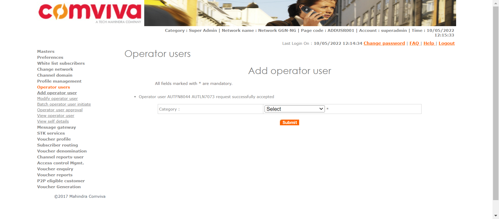
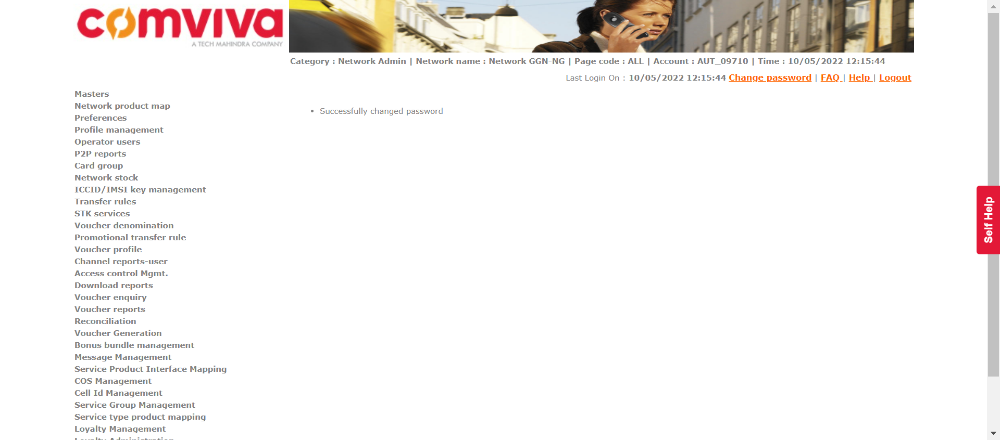
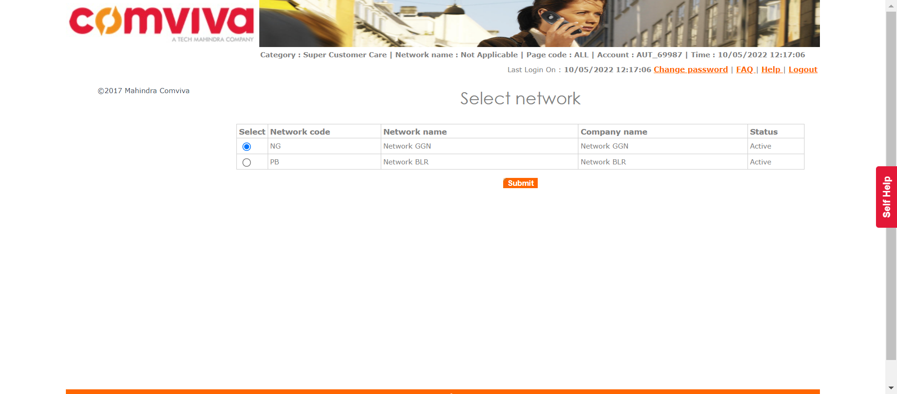
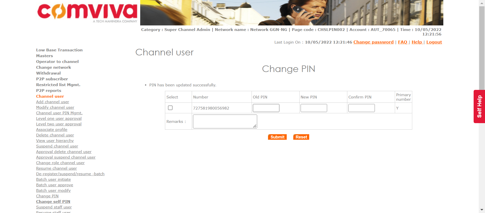
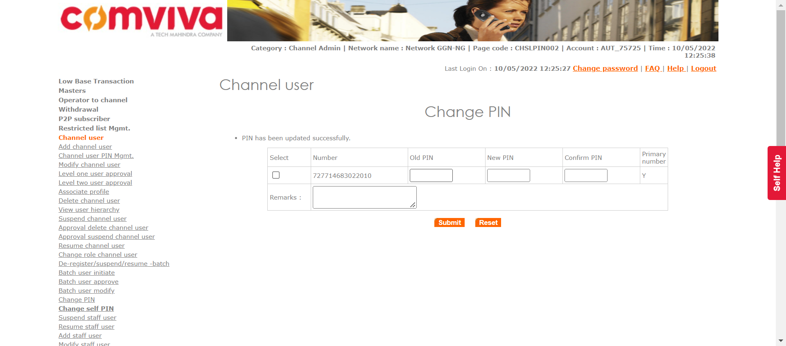
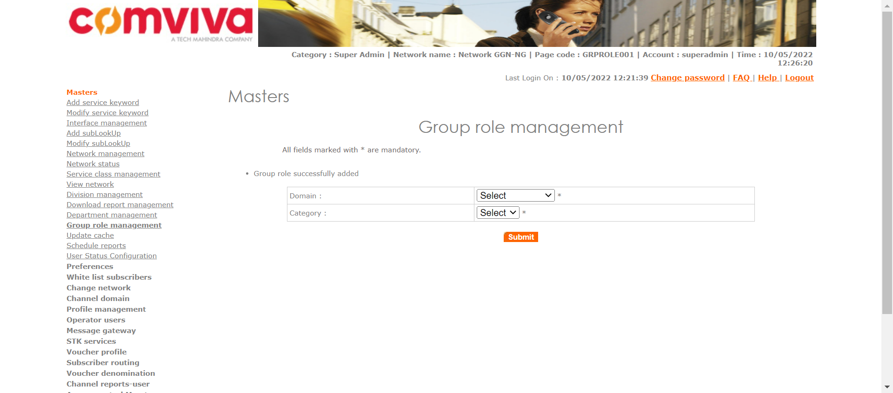
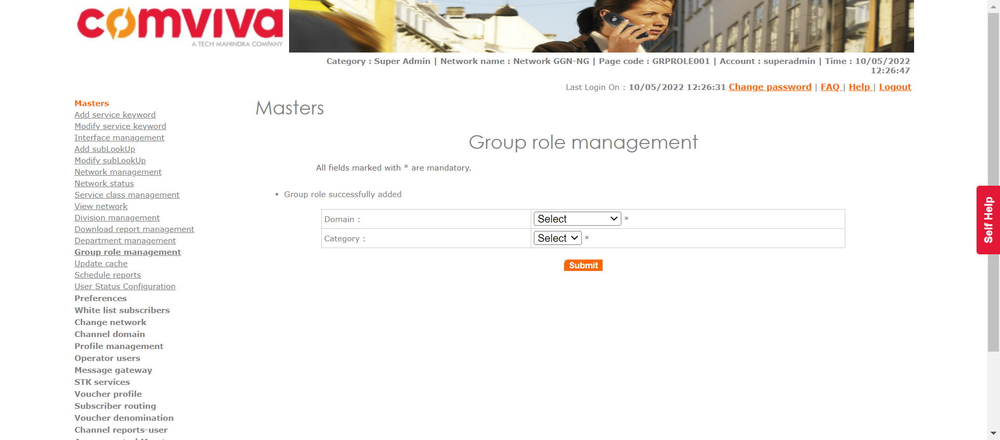

| Status | Timestamp | Details |
|---|---|---|
| info_outline | 12:20:19 PM | Entered divisionManagement() |
| info_outline | 12:20:19 PM | Trying to get User with Access: DIVISIONMGMT |
| low_priority | 12:20:19 PM | java.lang.NullPointerException at com.utils.ExcelUtility.getCellData(ExcelUtility.java:311) at com.classes.UserAccess.getUserWithAccess(UserAccess.java:63) at com.Features.DivisionDeptManagment.divisionManagement(DivisionDeptManagment.java:79) at com.testscripts.prerequisites.PreRequisite_DivisionManagment.Test_AddDivisionDepartment(PreRequisite_DivisionManagment.java:27) at sun.reflect.NativeMethodAccessorImpl.invoke0(Native Method) at sun.reflect.NativeMethodAccessorImpl.invoke(Unknown Source) at sun.reflect.DelegatingMethodAccessorImpl.invoke(Unknown Source) at java.lang.reflect.Method.invoke(Unknown Source) at org.testng.internal.MethodInvocationHelper.invokeMethod(MethodInvocationHelper.java:124) at org.testng.internal.Invoker.invokeMethod(Invoker.java:580) at org.testng.internal.Invoker.invokeTestMethod(Invoker.java:716) at org.testng.internal.Invoker.invokeTestMethods(Invoker.java:988) at org.testng.internal.TestMethodWorker.invokeTestMethods(TestMethodWorker.java:125) at org.testng.internal.TestMethodWorker.run(TestMethodWorker.java:109) at org.testng.TestRunner.privateRun(TestRunner.java:648) at org.testng.TestRunner.run(TestRunner.java:505) at org.testng.SuiteRunner.runTest(SuiteRunner.java:455) at org.testng.SuiteRunner.runSequentially(SuiteRunner.java:450) at org.testng.SuiteRunner.privateRun(SuiteRunner.java:415) at org.testng.SuiteRunner.run(SuiteRunner.java:364) at org.testng.SuiteRunnerWorker.runSuite(SuiteRunnerWorker.java:52) at org.testng.SuiteRunnerWorker.run(SuiteRunnerWorker.java:84) at org.testng.TestNG.runSuitesSequentially(TestNG.java:1208) at org.testng.TestNG.runSuitesSequentially(TestNG.java:1204) at org.testng.TestNG.runSuitesLocally(TestNG.java:1137) at org.testng.TestNG.runSuites(TestNG.java:1049) at org.testng.TestNG.run(TestNG.java:1017) at org.testng.remote.AbstractRemoteTestNG.run(AbstractRemoteTestNG.java:115) at org.testng.remote.RemoteTestNG.initAndRun(RemoteTestNG.java:251) at org.testng.remote.RemoteTestNG.main(RemoteTestNG.java:77) |
| low_priority | 12:20:19 PM | java.lang.NullPointerException at com.utils.ExcelUtility.getCellData(ExcelUtility.java:311) at com.classes.UserAccess.getUserWithAccess(UserAccess.java:64) at com.Features.DivisionDeptManagment.divisionManagement(DivisionDeptManagment.java:79) at com.testscripts.prerequisites.PreRequisite_DivisionManagment.Test_AddDivisionDepartment(PreRequisite_DivisionManagment.java:27) at sun.reflect.NativeMethodAccessorImpl.invoke0(Native Method) at sun.reflect.NativeMethodAccessorImpl.invoke(Unknown Source) at sun.reflect.DelegatingMethodAccessorImpl.invoke(Unknown Source) at java.lang.reflect.Method.invoke(Unknown Source) at org.testng.internal.MethodInvocationHelper.invokeMethod(MethodInvocationHelper.java:124) at org.testng.internal.Invoker.invokeMethod(Invoker.java:580) at org.testng.internal.Invoker.invokeTestMethod(Invoker.java:716) at org.testng.internal.Invoker.invokeTestMethods(Invoker.java:988) at org.testng.internal.TestMethodWorker.invokeTestMethods(TestMethodWorker.java:125) at org.testng.internal.TestMethodWorker.run(TestMethodWorker.java:109) at org.testng.TestRunner.privateRun(TestRunner.java:648) at org.testng.TestRunner.run(TestRunner.java:505) at org.testng.SuiteRunner.runTest(SuiteRunner.java:455) at org.testng.SuiteRunner.runSequentially(SuiteRunner.java:450) at org.testng.SuiteRunner.privateRun(SuiteRunner.java:415) at org.testng.SuiteRunner.run(SuiteRunner.java:364) at org.testng.SuiteRunnerWorker.runSuite(SuiteRunnerWorker.java:52) at org.testng.SuiteRunnerWorker.run(SuiteRunnerWorker.java:84) at org.testng.TestNG.runSuitesSequentially(TestNG.java:1208) at org.testng.TestNG.runSuitesSequentially(TestNG.java:1204) at org.testng.TestNG.runSuitesLocally(TestNG.java:1137) at org.testng.TestNG.runSuites(TestNG.java:1049) at org.testng.TestNG.run(TestNG.java:1017) at org.testng.remote.AbstractRemoteTestNG.run(AbstractRemoteTestNG.java:115) at org.testng.remote.RemoteTestNG.initAndRun(RemoteTestNG.java:251) at org.testng.remote.RemoteTestNG.main(RemoteTestNG.java:77) |
| info_outline | 12:20:19 PM | Entered :: getUserNameByLogin() |
| info_outline | 12:20:19 PM | select USER_NAME from users where LOGIN_ID = 'superadmin' |
| info_outline | 12:20:19 PM | Query Repository Returns: USER_NAME (Super Admin) |
| info_outline | 12:20:19 PM | UserAccess Returns: PARENT_NAME(Super Admin) | CATEGORY_NAME(Super Admin) | USER_NAME(Super Admin) | LOGIN_ID(superadmin) | PASSWORD(1357) |
| info_outline | 12:20:19 PM | Trying to select Language |
| info_outline | 12:20:19 PM | Language selected successfully as: English |
| info_outline | 12:20:19 PM | Trying to enter Login ID |
| info_outline | 12:20:19 PM | Login ID entered successfully as: superadmin |
| info_outline | 12:20:19 PM | Trying to enter Password |
| info_outline | 12:20:19 PM | Password entered successfully as: 1357 |
| info_outline | 12:20:19 PM | Trying to click Submit Button |
| info_outline | 12:20:21 PM | Submit button clicked successfully |
| info_outline | 12:20:21 PM | Trying to click Relogin Button |
| info_outline | 12:20:21 PM | Relogin Button Not Found |
| info_outline | 12:20:21 PM | Multiple Networks page exists: true |
| info_outline | 12:20:22 PM | Trying to click Masters link |
| info_outline | 12:20:23 PM | Master Link clicked successfully |
| info_outline | 12:20:23 PM | Trying to click Division Management link |
| info_outline | 12:20:24 PM | Division Management link clicked successfully |
| info_outline | 12:20:24 PM | Trying to click Add Button |
| info_outline | 12:20:25 PM | Add Button clicked successfully |
| info_outline | 12:20:25 PM | Trying to select Division Type |
| info_outline | 12:20:25 PM | Division Type selected as OPERATOR |
| info_outline | 12:20:25 PM | Trying to enter Division Name |
| info_outline | 12:20:25 PM | Division Name entered as: AUTDIV09673 |
| info_outline | 12:20:25 PM | Trying to enter Division Short Code |
| info_outline | 12:20:25 PM | Division Short Code entered as: AUTDIV09673 |
| info_outline | 12:20:25 PM | Trying to select Status |
| info_outline | 12:20:25 PM | Status selected successfully |
| info_outline | 12:20:25 PM | Trying to click Submit Button |
| info_outline | 12:20:26 PM | Submit Button clicked successfully |
| info_outline | 12:20:26 PM | Trying to click Confirm Button |
| info_outline | 12:20:27 PM | Confirm Button clicked successfully |
| info_outline | 12:20:27 PM | Trying to fetch Success Message |
| info_outline | 12:20:27 PM | Success Message Returned: Divison added successfully |
| info_outline | 12:20:27 PM | Exited divisionManagement() |
| Status | Timestamp | Details |
|---|---|---|
| info_outline | 12:20:27 PM | Entered departmentManagement() |
| info_outline | 12:20:27 PM | Trying to get User with Access: DIVISIONMGMT |
| low_priority | 12:20:27 PM | java.lang.NullPointerException at com.utils.ExcelUtility.getCellData(ExcelUtility.java:311) at com.classes.UserAccess.getUserWithAccess(UserAccess.java:63) at com.Features.DivisionDeptManagment.departmentManagement(DivisionDeptManagment.java:159) at com.testscripts.prerequisites.PreRequisite_DivisionManagment.Test_AddDivisionDepartment(PreRequisite_DivisionManagment.java:31) at sun.reflect.NativeMethodAccessorImpl.invoke0(Native Method) at sun.reflect.NativeMethodAccessorImpl.invoke(Unknown Source) at sun.reflect.DelegatingMethodAccessorImpl.invoke(Unknown Source) at java.lang.reflect.Method.invoke(Unknown Source) at org.testng.internal.MethodInvocationHelper.invokeMethod(MethodInvocationHelper.java:124) at org.testng.internal.Invoker.invokeMethod(Invoker.java:580) at org.testng.internal.Invoker.invokeTestMethod(Invoker.java:716) at org.testng.internal.Invoker.invokeTestMethods(Invoker.java:988) at org.testng.internal.TestMethodWorker.invokeTestMethods(TestMethodWorker.java:125) at org.testng.internal.TestMethodWorker.run(TestMethodWorker.java:109) at org.testng.TestRunner.privateRun(TestRunner.java:648) at org.testng.TestRunner.run(TestRunner.java:505) at org.testng.SuiteRunner.runTest(SuiteRunner.java:455) at org.testng.SuiteRunner.runSequentially(SuiteRunner.java:450) at org.testng.SuiteRunner.privateRun(SuiteRunner.java:415) at org.testng.SuiteRunner.run(SuiteRunner.java:364) at org.testng.SuiteRunnerWorker.runSuite(SuiteRunnerWorker.java:52) at org.testng.SuiteRunnerWorker.run(SuiteRunnerWorker.java:84) at org.testng.TestNG.runSuitesSequentially(TestNG.java:1208) at org.testng.TestNG.runSuitesSequentially(TestNG.java:1204) at org.testng.TestNG.runSuitesLocally(TestNG.java:1137) at org.testng.TestNG.runSuites(TestNG.java:1049) at org.testng.TestNG.run(TestNG.java:1017) at org.testng.remote.AbstractRemoteTestNG.run(AbstractRemoteTestNG.java:115) at org.testng.remote.RemoteTestNG.initAndRun(RemoteTestNG.java:251) at org.testng.remote.RemoteTestNG.main(RemoteTestNG.java:77) |
| low_priority | 12:20:27 PM | java.lang.NullPointerException at com.utils.ExcelUtility.getCellData(ExcelUtility.java:311) at com.classes.UserAccess.getUserWithAccess(UserAccess.java:64) at com.Features.DivisionDeptManagment.departmentManagement(DivisionDeptManagment.java:159) at com.testscripts.prerequisites.PreRequisite_DivisionManagment.Test_AddDivisionDepartment(PreRequisite_DivisionManagment.java:31) at sun.reflect.NativeMethodAccessorImpl.invoke0(Native Method) at sun.reflect.NativeMethodAccessorImpl.invoke(Unknown Source) at sun.reflect.DelegatingMethodAccessorImpl.invoke(Unknown Source) at java.lang.reflect.Method.invoke(Unknown Source) at org.testng.internal.MethodInvocationHelper.invokeMethod(MethodInvocationHelper.java:124) at org.testng.internal.Invoker.invokeMethod(Invoker.java:580) at org.testng.internal.Invoker.invokeTestMethod(Invoker.java:716) at org.testng.internal.Invoker.invokeTestMethods(Invoker.java:988) at org.testng.internal.TestMethodWorker.invokeTestMethods(TestMethodWorker.java:125) at org.testng.internal.TestMethodWorker.run(TestMethodWorker.java:109) at org.testng.TestRunner.privateRun(TestRunner.java:648) at org.testng.TestRunner.run(TestRunner.java:505) at org.testng.SuiteRunner.runTest(SuiteRunner.java:455) at org.testng.SuiteRunner.runSequentially(SuiteRunner.java:450) at org.testng.SuiteRunner.privateRun(SuiteRunner.java:415) at org.testng.SuiteRunner.run(SuiteRunner.java:364) at org.testng.SuiteRunnerWorker.runSuite(SuiteRunnerWorker.java:52) at org.testng.SuiteRunnerWorker.run(SuiteRunnerWorker.java:84) at org.testng.TestNG.runSuitesSequentially(TestNG.java:1208) at org.testng.TestNG.runSuitesSequentially(TestNG.java:1204) at org.testng.TestNG.runSuitesLocally(TestNG.java:1137) at org.testng.TestNG.runSuites(TestNG.java:1049) at org.testng.TestNG.run(TestNG.java:1017) at org.testng.remote.AbstractRemoteTestNG.run(AbstractRemoteTestNG.java:115) at org.testng.remote.RemoteTestNG.initAndRun(RemoteTestNG.java:251) at org.testng.remote.RemoteTestNG.main(RemoteTestNG.java:77) |
| info_outline | 12:20:27 PM | Entered :: getUserNameByLogin() |
| info_outline | 12:20:27 PM | select USER_NAME from users where LOGIN_ID = 'superadmin' |
| info_outline | 12:20:27 PM | Query Repository Returns: USER_NAME (Super Admin) |
| info_outline | 12:20:27 PM | UserAccess Returns: PARENT_NAME(Super Admin) | CATEGORY_NAME(Super Admin) | USER_NAME(Super Admin) | LOGIN_ID(superadmin) | PASSWORD(1357) |
| info_outline | 12:20:27 PM | Trying to select Language |
| info_outline | 12:20:27 PM | Language selected successfully as: English |
| info_outline | 12:20:27 PM | Trying to enter Login ID |
| info_outline | 12:20:27 PM | Login ID entered successfully as: superadmin |
| info_outline | 12:20:27 PM | Trying to enter Password |
| info_outline | 12:20:27 PM | Password entered successfully as: 1357 |
| info_outline | 12:20:27 PM | Trying to click Submit Button |
| info_outline | 12:20:28 PM | Submit button clicked successfully |
| info_outline | 12:20:28 PM | Trying to click Relogin Button |
| info_outline | 12:20:28 PM | Relogin Button Not Found |
| info_outline | 12:20:28 PM | Multiple Networks page exists: true |
| info_outline | 12:20:29 PM | Trying to click Masters link |
| info_outline | 12:20:30 PM | Master Link clicked successfully |
| info_outline | 12:20:30 PM | Trying to click Department Managament link |
| info_outline | 12:20:30 PM | Department management link clicked successfully |
| info_outline | 12:20:30 PM | Trying to select Division Type |
| info_outline | 12:20:30 PM | Division Type OPERATOR selected successfully |
| info_outline | 12:20:30 PM | Trying to select Division |
| info_outline | 12:20:30 PM | Division selected as: AUTDIV09673 |
| info_outline | 12:20:30 PM | Trying to click Submit Button |
| info_outline | 12:20:31 PM | Submit Button clicked successfully |
| info_outline | 12:20:31 PM | Trying to click Add Button |
| info_outline | 12:20:32 PM | Add Button clicked successfully |
| info_outline | 12:20:32 PM | Trying to enter Department Name |
| info_outline | 12:20:32 PM | Department name entered as: AUTDEPT324739 |
| info_outline | 12:20:32 PM | Trying to enter Department Short Code |
| info_outline | 12:20:32 PM | Department Short Code entered as: AUT9414 |
| info_outline | 12:20:32 PM | Trying to click Submit Button |
| info_outline | 12:20:32 PM | Submit Button clicked successfully |
| info_outline | 12:20:32 PM | Trying to click Confirm Button |
| info_outline | 12:20:33 PM | Confirm Button clicked successfully |
| info_outline | 12:20:33 PM | Trying to fetch Success Message |
| info_outline | 12:20:33 PM | Success Message Returned: Department added successfully |
| info_outline | 12:20:33 PM | Exited departmentManagement() |
| Status | Timestamp | Details |
|---|---|---|
| info_outline | 12:20:37 PM | Entered operatorUserInitiate(Super Admin, Network Admin) |
| info_outline | 12:20:37 PM | Login ID Found as: superadmin |
| info_outline | 12:20:37 PM | Password Found as: 1357 |
| info_outline | 12:20:37 PM | Trying to select Language |
| info_outline | 12:20:37 PM | Language selected successfully as: English |
| info_outline | 12:20:37 PM | Trying to enter Login ID |
| info_outline | 12:20:37 PM | Login ID entered successfully as: superadmin |
| info_outline | 12:20:37 PM | Trying to enter Password |
| info_outline | 12:20:37 PM | Password entered successfully as: 1357 |
| info_outline | 12:20:37 PM | Trying to click Submit Button |
| info_outline | 12:20:39 PM | Submit button clicked successfully |
| info_outline | 12:20:39 PM | Trying to click Relogin Button |
| info_outline | 12:20:39 PM | Relogin Button Not Found |
| info_outline | 12:20:39 PM | Multiple Networks page exists: true |
| info_outline | 12:20:40 PM | User clicked Operator Users. |
| info_outline | 12:20:40 PM | Trying to click add Operator User Link |
| info_outline | 12:20:40 PM | Add Operator User link clicked successfully |
| info_outline | 12:20:40 PM | Trying to select Category |
| info_outline | 12:20:40 PM | Category selected successfully |
| info_outline | 12:20:40 PM | Trying to click Submit Button |
| info_outline | 12:20:41 PM | Submit Button clicked successfully |
| info_outline | 12:20:41 PM | Trying to enter First Name |
| info_outline | 12:20:41 PM | First Name entered as: AUTFN8044 |
| info_outline | 12:20:41 PM | Trying to enter Last Name |
| info_outline | 12:20:41 PM | Last Name entered as: AUTLN7073 |
| info_outline | 12:20:41 PM | Trying to enter User Name |
| info_outline | 12:20:41 PM | User Name field not found |
| info_outline | 12:20:41 PM | Trying to enter Short Name |
| info_outline | 12:20:41 PM | Short Name entered as: AUTSN8244 |
| info_outline | 12:20:41 PM | Trying to select User Name Prefix |
| info_outline | 12:20:42 PM | User Name prefix selected successfully |
| info_outline | 12:20:42 PM | Trying to enter Subscriber Code |
| info_outline | 12:20:42 PM | Subscriber Code entered as: 998091 |
| info_outline | 12:20:42 PM | Trying to select Status |
| info_outline | 12:20:42 PM | Status drop down not found |
| info_outline | 12:20:42 PM | GenerateMSISDN class Returns: Remaining MSISDNLength (13) |
| info_outline | 12:20:42 PM | The generated MSISDN is ::725765877948592 |
| info_outline | 12:20:42 PM | Entered :: checkForUniqueMSISDN() |
| info_outline | 12:20:42 PM | Query Repository Returns: MSISDNStatus (N) |
| info_outline | 12:20:42 PM | The generated External Code is ::591462174 |
| info_outline | 12:20:42 PM | Entered :: checkForUniqueEXTCODE() |
| info_outline | 12:20:42 PM | Query Repository Returns: ExternalCodeStatus (N) |
| info_outline | 12:20:42 PM | Trying to enter External Code |
| info_outline | 12:20:42 PM | External Code entered as: 591462174 |
| info_outline | 12:20:42 PM | Trying to enter MobileNumber |
| info_outline | 12:20:42 PM | Mobile Number entered as: 725765877948592 |
| info_outline | 12:20:42 PM | Trying to enter Contact Number |
| info_outline | 12:20:42 PM | Contact No. entered as: 748320 |
| info_outline | 12:20:42 PM | Trying to select Division |
| info_outline | 12:20:42 PM | Division selected as: AUTDIV09673 |
| info_outline | 12:20:42 PM | Trying to select Department |
| info_outline | 12:20:42 PM | Department selected as: AUTDEPT324739 |
| info_outline | 12:20:42 PM | Trying to enter Address1 |
| info_outline | 12:20:43 PM | Address1 entered as: Add11231 |
| info_outline | 12:20:43 PM | Trying to enter Address2 |
| info_outline | 12:20:43 PM | Address2 entered as: Add27410 |
| info_outline | 12:20:43 PM | Trying to enter City |
| info_outline | 12:20:43 PM | City entered as: City8079 |
| info_outline | 12:20:43 PM | Trying to enter State |
| info_outline | 12:20:43 PM | State entered as: State5342 |
| info_outline | 12:20:43 PM | Trying to enter Country |
| info_outline | 12:20:43 PM | Country entered as: Country59 |
| info_outline | 12:20:43 PM | Trying to enter Email ID |
| info_outline | 12:20:43 PM | Email ID entered as: dgkg3@mail.com |
| info_outline | 12:20:43 PM | The generated Login ID is ::AUT_09710 |
| info_outline | 12:20:43 PM | Entered :: checkForUniqueLoginID() |
| info_outline | 12:20:43 PM | Query Repository Returns: LoginIDStatus (N) |
| info_outline | 12:20:43 PM | Trying to enter Login ID |
| info_outline | 12:20:43 PM | Login ID entered as: AUT_09710 |
| info_outline | 12:20:43 PM | Trying to check if Assign Geographies link exist |
| info_outline | 12:20:43 PM | Assign Geographies link found |
| info_outline | 12:20:43 PM | Trying to click Assign Geographies link |
| info_outline | 12:20:43 PM | Assign Geographies link clicked successfully |
| info_outline | 12:20:47 PM | Trying to select Geography |
| info_outline | 12:20:47 PM | Geography selected successfully |
| info_outline | 12:20:47 PM | Trying to click Add button |
| info_outline | 12:20:48 PM | Add button for geography clicked successfully |
| info_outline | 12:20:48 PM | Geographies has been assigned to the user. |
| info_outline | 12:20:48 PM | ---- Window Handler ---- |
| info_outline | 12:20:50 PM | Trying to check if Assign Network link exists |
| info_outline | 12:20:50 PM | Assign Network link not found |
| info_outline | 12:20:51 PM | Assign Network Link not found |
| info_outline | 12:20:51 PM | ---- Window Handler ---- |
| info_outline | 12:20:53 PM | Trying to check if Assign Roles link exist |
| info_outline | 12:20:53 PM | Trying to click Assign Roles |
| info_outline | 12:20:53 PM | Assign Roles clicked successfully |
| info_outline | 12:20:54 PM | Trying to check ALL option for assign Roles |
| info_outline | 12:20:56 PM | ALL option selected for Assign Roles |
| info_outline | 12:20:56 PM | Trying to click Add button |
| info_outline | 12:20:59 PM | Add button clicked successfully |
| info_outline | 12:20:59 PM | ---- Window Handler ---- |
| info_outline | 12:21:01 PM | Trying to check if Assign Domain link exists |
| info_outline | 12:21:01 PM | Assign Domains link not found |
| info_outline | 12:21:02 PM | Assign Domains link not found |
| info_outline | 12:21:02 PM | ---- Window Handler ---- |
| info_outline | 12:21:04 PM | Trying to check if Assign Products link exist |
| info_outline | 12:21:04 PM | Assign Products link not found |
| info_outline | 12:21:05 PM | Assign Products link not found |
| info_outline | 12:21:05 PM | ---- Window Handler ---- |
| info_outline | 12:21:07 PM | Trying to click 'assign voucher type' link. |
| info_outline | 12:21:07 PM | 'assign voucher type' link clicked successfully |
| info_outline | 12:21:08 PM | Trying to check ALL option for voucher type. |
| info_outline | 12:21:08 PM | ALL option for Voucher types selected successfully |
| info_outline | 12:21:08 PM | Trying to click Add button |
| info_outline | 12:21:09 PM | Add button clicked successfully |
| info_outline | 12:21:09 PM | ---- Window Handler ---- |
| info_outline | 12:21:11 PM | Trying to check if Assign Phone Number link exist |
| info_outline | 12:21:11 PM | Assign phone number link not found |
| info_outline | 12:21:12 PM | Assign Phone Numbers link not found |
| info_outline | 12:21:12 PM | ---- Window Handler ---- |
| info_outline | 12:21:14 PM | Trying to check if Assign Services exists |
| info_outline | 12:21:14 PM | Assign Services link not found |
| info_outline | 12:21:15 PM | Assign Services link not found |
| info_outline | 12:21:15 PM | ---- Window Handler ---- |
| info_outline | 12:21:17 PM | Trying to click Assign Voucher Type link |
| info_outline | 12:21:17 PM | Assign voucher Type link clicked successfully |
| info_outline | 12:21:18 PM | Trying to click ALL Voucher Type |
| info_outline | 12:21:18 PM | All Voucher Types clicked successfully for Assign Voucher Type |
| info_outline | 12:21:18 PM | Trying to click Add button for Assign Voucher Type |
| info_outline | 12:21:18 PM | Add button for assign voucher Type clicked successfully |
| info_outline | 12:21:19 PM | ---- Window Handler ---- |
| info_outline | 12:21:21 PM | Trying to click Voucher Segment Type link |
| info_outline | 12:21:21 PM | Assign voucher Segment link clicked successfully |
| info_outline | 12:21:22 PM | Trying to click ALL Voucher Segment |
| info_outline | 12:21:22 PM | All Voucher Segments clicked successfully for Assign Voucher Type |
| info_outline | 12:21:22 PM | Trying to click Add button for Assign Voucher Type |
| info_outline | 12:21:22 PM | Add button for assign voucher Segment clicked successfully |
| info_outline | 12:21:23 PM | ---- Window Handler ---- |
| info_outline | 12:21:25 PM | Trying to check if Enter Password field exist |
| info_outline | 12:21:25 PM | Enter Password field found |
| info_outline | 12:21:25 PM | Trying to enter Password |
| info_outline | 12:21:25 PM | Password Entered as: Com@1357 |
| info_outline | 12:21:25 PM | Trying to enter Confirm Password |
| info_outline | 12:21:25 PM | Confirm Password Entered as: Com@1357 |
| info_outline | 12:21:25 PM | Trying to click Save button |
| info_outline | 12:21:26 PM | Save Button clicked successfully |
| info_outline | 12:21:26 PM | Trying to click Confirm button. |
| info_outline | 12:21:27 PM | Confirm Button clicked successfully |
| info_outline | 12:21:27 PM | Trying to fetch success or reject message. |
| info_outline | 12:21:27 PM | Message fetched as :: Operator user AUTFN8044 AUTLN7073 request successfully accepted |
| info_outline | 12:21:27 PM | Exited operatorUserInitiate() |
| info_outline | 12:21:27 PM | assertNotNull: Message Found. |
| info_outline | 12:21:27 PM |  |
| Status | Timestamp | Details |
|---|---|---|
| info_outline | 12:21:27 PM | Entered approveUser(Super Admin) |
| info_outline | 12:21:27 PM | Entered :: getSystemPreference(OPT_USR_APRL_LEVEL) |
| info_outline | 12:21:27 PM | Query Repository Returns: DEFAULT_VALUE (1) |
| info_outline | 12:21:27 PM | Login ID Found as: superadmin |
| info_outline | 12:21:27 PM | Password Found as: 1357 |
| info_outline | 12:21:27 PM | Trying to select Language |
| info_outline | 12:21:27 PM | Language selected successfully as: English |
| info_outline | 12:21:27 PM | Trying to enter Login ID |
| info_outline | 12:21:27 PM | Login ID entered successfully as: superadmin |
| info_outline | 12:21:27 PM | Trying to enter Password |
| info_outline | 12:21:28 PM | Password entered successfully as: 1357 |
| info_outline | 12:21:28 PM | Trying to click Submit Button |
| info_outline | 12:21:28 PM | Submit button clicked successfully |
| info_outline | 12:21:28 PM | Trying to click Relogin Button |
| info_outline | 12:21:28 PM | Relogin Button Not Found |
| info_outline | 12:21:28 PM | Multiple Networks page exists: true |
| info_outline | 12:21:29 PM | User clicked Operator Users. |
| info_outline | 12:21:29 PM | Trying to click Operator User Approval Link |
| info_outline | 12:21:30 PM | Operator User approval link clicked successfully |
| info_outline | 12:21:30 PM | Trying to Enter intiated Login ID: AUT_09710 |
| info_outline | 12:21:30 PM | Login ID entered successfully |
| info_outline | 12:21:30 PM | Trying to click approval submit button |
| info_outline | 12:21:30 PM | First Submit button clicked successfully |
| info_outline | 12:21:30 PM | Trying to click Submit button |
| info_outline | 12:21:31 PM | Second Submit button clicked successfully |
| info_outline | 12:21:31 PM | Tring to click Approve button |
| info_outline | 12:21:32 PM | Approve button clicked successfully |
| info_outline | 12:21:32 PM | Tring to click Confirm button |
| info_outline | 12:21:32 PM | Confirm button clicked successfully |
| info_outline | 12:21:32 PM | Trying to fetch success or reject message. |
| info_outline | 12:21:32 PM | Message fetched as :: User AUTFN8044 AUTLN7073 successfully approved. |
| info_outline | 12:21:33 PM | User clicked Logout. |
| info_outline | 12:21:33 PM | Exited approveUser() |
| Status | Timestamp | Details |
|---|---|---|
| info_outline | 12:21:33 PM | Entered changeUserFirstTimePassword() |
| info_outline | 12:21:33 PM | Entered :: getSystemPreference(AUTO_PWD_GENERATE_ALLOW) |
| info_outline | 12:21:33 PM | Query Repository Returns: DEFAULT_VALUE (false) |
| info_outline | 12:21:33 PM | Password field exist |
| info_outline | 12:21:33 PM | Trying to select Language |
| info_outline | 12:21:33 PM | Language selected successfully as: English |
| info_outline | 12:21:33 PM | Trying to enter Login ID |
| info_outline | 12:21:33 PM | Login ID entered successfully as: AUT_09710 |
| info_outline | 12:21:33 PM | Trying to enter Password |
| info_outline | 12:21:33 PM | Password entered successfully as: Com@1357 |
| info_outline | 12:21:33 PM | Trying to click Submit Button |
| info_outline | 12:21:34 PM | Submit button clicked successfully |
| info_outline | 12:21:34 PM | Trying to click Relogin Button |
| info_outline | 12:21:34 PM | Relogin Button Not Found |
| info_outline | 12:21:34 PM | Trying to enter Old Password |
| info_outline | 12:21:36 PM | Old Password Entered successfully:Com@1357 |
| info_outline | 12:21:36 PM | Trying to enter New Password |
| info_outline | 12:21:36 PM | New Password Entered successfully:Com@2468 |
| info_outline | 12:21:36 PM | Trying to enter Confirm Password |
| info_outline | 12:21:36 PM | Confirm Password Entered successfully:Com@2468 |
| info_outline | 12:21:36 PM | Trying to click Submit Button |
| info_outline | 12:21:37 PM | Submit Button clicked successfully |
| info_outline | 12:21:37 PM | Exited changeUserFirstTimePassword() |
| info_outline | 12:21:37 PM | Trying to fetch success message. |
| info_outline | 12:21:37 PM | Message fetched as :: Successfully changed password |
| info_outline | 12:21:37 PM | Expected: Successfully changed password |
| info_outline | 12:21:37 PM | Message Validation Success |
| info_outline | 12:21:37 PM |  |
| Status | Timestamp | Details |
|---|---|---|
| info_outline | 12:21:41 PM | Entered addGeographicalDomain(Zone, Zone) |
| info_outline | 12:21:41 PM | Trying to get User with Access: VIEWGRPHDOMAIN |
| low_priority | 12:21:41 PM | java.lang.NullPointerException at com.utils.ExcelUtility.getCellData(ExcelUtility.java:311) at com.classes.UserAccess.getUserWithAccess(UserAccess.java:57) at com.Features.GeogaphicalDomainManagement.addGeographicalDomain(GeogaphicalDomainManagement.java:89) at com.testscripts.prerequisites.PreRequisite_GeographicalDomainManagement.Test_AddGeographicalDomain(PreRequisite_GeographicalDomainManagement.java:46) at sun.reflect.NativeMethodAccessorImpl.invoke0(Native Method) at sun.reflect.NativeMethodAccessorImpl.invoke(Unknown Source) at sun.reflect.DelegatingMethodAccessorImpl.invoke(Unknown Source) at java.lang.reflect.Method.invoke(Unknown Source) at org.testng.internal.MethodInvocationHelper.invokeMethod(MethodInvocationHelper.java:124) at org.testng.internal.Invoker.invokeMethod(Invoker.java:580) at org.testng.internal.Invoker.invokeTestMethod(Invoker.java:716) at org.testng.internal.Invoker.invokeTestMethods(Invoker.java:988) at org.testng.internal.TestMethodWorker.invokeTestMethods(TestMethodWorker.java:125) at org.testng.internal.TestMethodWorker.run(TestMethodWorker.java:109) at org.testng.TestRunner.privateRun(TestRunner.java:648) at org.testng.TestRunner.run(TestRunner.java:505) at org.testng.SuiteRunner.runTest(SuiteRunner.java:455) at org.testng.SuiteRunner.runSequentially(SuiteRunner.java:450) at org.testng.SuiteRunner.privateRun(SuiteRunner.java:415) at org.testng.SuiteRunner.run(SuiteRunner.java:364) at org.testng.SuiteRunnerWorker.runSuite(SuiteRunnerWorker.java:52) at org.testng.SuiteRunnerWorker.run(SuiteRunnerWorker.java:84) at org.testng.TestNG.runSuitesSequentially(TestNG.java:1208) at org.testng.TestNG.runSuitesSequentially(TestNG.java:1204) at org.testng.TestNG.runSuitesLocally(TestNG.java:1137) at org.testng.TestNG.runSuites(TestNG.java:1049) at org.testng.TestNG.run(TestNG.java:1017) at org.testng.remote.AbstractRemoteTestNG.run(AbstractRemoteTestNG.java:115) at org.testng.remote.RemoteTestNG.initAndRun(RemoteTestNG.java:251) at org.testng.remote.RemoteTestNG.main(RemoteTestNG.java:77) |
| low_priority | 12:21:41 PM | java.lang.NullPointerException at com.utils.ExcelUtility.getCellData(ExcelUtility.java:311) at com.classes.UserAccess.getUserWithAccess(UserAccess.java:57) at com.Features.GeogaphicalDomainManagement.addGeographicalDomain(GeogaphicalDomainManagement.java:89) at com.testscripts.prerequisites.PreRequisite_GeographicalDomainManagement.Test_AddGeographicalDomain(PreRequisite_GeographicalDomainManagement.java:46) at sun.reflect.NativeMethodAccessorImpl.invoke0(Native Method) at sun.reflect.NativeMethodAccessorImpl.invoke(Unknown Source) at sun.reflect.DelegatingMethodAccessorImpl.invoke(Unknown Source) at java.lang.reflect.Method.invoke(Unknown Source) at org.testng.internal.MethodInvocationHelper.invokeMethod(MethodInvocationHelper.java:124) at org.testng.internal.Invoker.invokeMethod(Invoker.java:580) at org.testng.internal.Invoker.invokeTestMethod(Invoker.java:716) at org.testng.internal.Invoker.invokeTestMethods(Invoker.java:988) at org.testng.internal.TestMethodWorker.invokeTestMethods(TestMethodWorker.java:125) at org.testng.internal.TestMethodWorker.run(TestMethodWorker.java:109) at org.testng.TestRunner.privateRun(TestRunner.java:648) at org.testng.TestRunner.run(TestRunner.java:505) at org.testng.SuiteRunner.runTest(SuiteRunner.java:455) at org.testng.SuiteRunner.runSequentially(SuiteRunner.java:450) at org.testng.SuiteRunner.privateRun(SuiteRunner.java:415) at org.testng.SuiteRunner.run(SuiteRunner.java:364) at org.testng.SuiteRunnerWorker.runSuite(SuiteRunnerWorker.java:52) at org.testng.SuiteRunnerWorker.run(SuiteRunnerWorker.java:84) at org.testng.TestNG.runSuitesSequentially(TestNG.java:1208) at org.testng.TestNG.runSuitesSequentially(TestNG.java:1204) at org.testng.TestNG.runSuitesLocally(TestNG.java:1137) at org.testng.TestNG.runSuites(TestNG.java:1049) at org.testng.TestNG.run(TestNG.java:1017) at org.testng.remote.AbstractRemoteTestNG.run(AbstractRemoteTestNG.java:115) at org.testng.remote.RemoteTestNG.initAndRun(RemoteTestNG.java:251) at org.testng.remote.RemoteTestNG.main(RemoteTestNG.java:77) |
| low_priority | 12:21:41 PM | java.lang.NullPointerException at com.utils.ExcelUtility.getCellData(ExcelUtility.java:311) at com.classes.UserAccess.getUserWithAccess(UserAccess.java:64) at com.Features.GeogaphicalDomainManagement.addGeographicalDomain(GeogaphicalDomainManagement.java:89) at com.testscripts.prerequisites.PreRequisite_GeographicalDomainManagement.Test_AddGeographicalDomain(PreRequisite_GeographicalDomainManagement.java:46) at sun.reflect.NativeMethodAccessorImpl.invoke0(Native Method) at sun.reflect.NativeMethodAccessorImpl.invoke(Unknown Source) at sun.reflect.DelegatingMethodAccessorImpl.invoke(Unknown Source) at java.lang.reflect.Method.invoke(Unknown Source) at org.testng.internal.MethodInvocationHelper.invokeMethod(MethodInvocationHelper.java:124) at org.testng.internal.Invoker.invokeMethod(Invoker.java:580) at org.testng.internal.Invoker.invokeTestMethod(Invoker.java:716) at org.testng.internal.Invoker.invokeTestMethods(Invoker.java:988) at org.testng.internal.TestMethodWorker.invokeTestMethods(TestMethodWorker.java:125) at org.testng.internal.TestMethodWorker.run(TestMethodWorker.java:109) at org.testng.TestRunner.privateRun(TestRunner.java:648) at org.testng.TestRunner.run(TestRunner.java:505) at org.testng.SuiteRunner.runTest(SuiteRunner.java:455) at org.testng.SuiteRunner.runSequentially(SuiteRunner.java:450) at org.testng.SuiteRunner.privateRun(SuiteRunner.java:415) at org.testng.SuiteRunner.run(SuiteRunner.java:364) at org.testng.SuiteRunnerWorker.runSuite(SuiteRunnerWorker.java:52) at org.testng.SuiteRunnerWorker.run(SuiteRunnerWorker.java:84) at org.testng.TestNG.runSuitesSequentially(TestNG.java:1208) at org.testng.TestNG.runSuitesSequentially(TestNG.java:1204) at org.testng.TestNG.runSuitesLocally(TestNG.java:1137) at org.testng.TestNG.runSuites(TestNG.java:1049) at org.testng.TestNG.run(TestNG.java:1017) at org.testng.remote.AbstractRemoteTestNG.run(AbstractRemoteTestNG.java:115) at org.testng.remote.RemoteTestNG.initAndRun(RemoteTestNG.java:251) at org.testng.remote.RemoteTestNG.main(RemoteTestNG.java:77) |
| info_outline | 12:21:41 PM | Entered :: getUserNameByLogin() |
| info_outline | 12:21:41 PM | select USER_NAME from users where LOGIN_ID = 'AUT_09710' |
| info_outline | 12:21:41 PM | Query Repository Returns: USER_NAME (null) |
| info_outline | 12:21:41 PM | UserAccess Returns: PARENT_NAME(Super Admin) | CATEGORY_NAME(Network Admin) | USER_NAME(null) | LOGIN_ID(AUT_09710) | PASSWORD(Com@2468) |
| info_outline | 12:21:41 PM | Trying to select Language |
| info_outline | 12:21:41 PM | Language selected successfully as: English |
| info_outline | 12:21:41 PM | Trying to enter Login ID |
| info_outline | 12:21:41 PM | Login ID entered successfully as: AUT_09710 |
| info_outline | 12:21:41 PM | Trying to enter Password |
| info_outline | 12:21:41 PM | Password entered successfully as: Com@2468 |
| info_outline | 12:21:41 PM | Trying to click Submit Button |
| info_outline | 12:21:43 PM | Submit button clicked successfully |
| info_outline | 12:21:43 PM | Trying to click Relogin Button |
| info_outline | 12:21:43 PM | Relogin Button Not Found |
| info_outline | 12:21:43 PM | Multiple Networks page exists: false |
| info_outline | 12:21:43 PM | Only single Network code exist: NG |
| info_outline | 12:21:43 PM | Multiple Networks page exists: false |
| info_outline | 12:21:43 PM | Only single Network code exist: NG |
| info_outline | 12:21:44 PM | User clicked Masters. |
| info_outline | 12:21:44 PM | User clicked Geographical Domain Management. |
| info_outline | 12:21:44 PM | User selected Domain:Zone |
| info_outline | 12:21:45 PM | User clicked submit Button |
| info_outline | 12:21:45 PM | User clicked Add Button. |
| info_outline | 12:21:45 PM | The generated Domain Code is ::AUT1n7k |
| info_outline | 12:21:45 PM | The generated Domain Name is ::AUTa4J50 |
| info_outline | 12:21:45 PM | The generated Domain Short Name is ::AUT2I1 |
| info_outline | 12:21:45 PM | Entered :: checkUniqueDomain() |
| info_outline | 12:21:46 PM | Query Repository Returns: Unique Domain Code / Name / ShortName Status (N) |
| info_outline | 12:21:46 PM | User entered GrphDomainCode: AUT1n7k |
| info_outline | 12:21:46 PM | User entered GrphDomainName: AUTa4J50 |
| info_outline | 12:21:46 PM | User entered GrphDomainShortName: AUT2I1 |
| info_outline | 12:21:46 PM | User entered Description: domainType Name |
| info_outline | 12:21:46 PM | 'Is Default' Selected |
| info_outline | 12:21:47 PM | User clicked Add Button. |
| info_outline | 12:21:47 PM | User clicked Confirm Button. |
| info_outline | 12:21:48 PM | No error Message found: org.openqa.selenium.NoSuchElementException: no such element: Unable to locate element: {"method":"xpath","selector":"//tr/td/ol/li"} (Session info: chrome=101.0.4951.54) For documentation on this error, please visit: http://seleniumhq.org/exceptions/no_such_element.html Build info: version: '3.10.0', revision: '176b4a9', time: '2018-03-02T19:03:16.397Z' System info: host: 'MCKL-20005142', ip: '192.168.1.40', os.name: 'Windows 10', os.arch: 'amd64', os.version: '10.0', java.version: '1.8.0_291' Driver info: org.openqa.selenium.chrome.ChromeDriver Capabilities {acceptInsecureCerts: false, browserName: chrome, browserVersion: 101.0.4951.54, chrome: {chromedriverVersion: 101.0.4951.41 (93c720db8323..., userDataDir: C:\Users\SOURAB~1.AWA\AppDa...}, goog:chromeOptions: {debuggerAddress: localhost:65005}, javascriptEnabled: true, networkConnectionEnabled: false, pageLoadStrategy: normal, platform: WINDOWS, platformName: WINDOWS, proxy: Proxy(), setWindowRect: true, strictFileInteractability: false, timeouts: {implicit: 0, pageLoad: 300000, script: 30000}, unhandledPromptBehavior: dismiss and notify, webauthn:extension:credBlob: true, webauthn:extension:largeBlob: true, webauthn:virtualAuthenticators: true} Session ID: 2cacaddc70089f8f1510c014aaa55961 *** Element info: {Using=xpath, value=//tr/td/ol/li} |
| info_outline | 12:21:48 PM | Added a: Zone |
| info_outline | 12:21:48 PM | Exited addGeographicalDomain() |
| Status | Timestamp | Details |
|---|---|---|
| info_outline | 12:21:48 PM | Entered addGeographicalDomain(Zone, Area) |
| info_outline | 12:21:48 PM | Trying to get User with Access: VIEWGRPHDOMAIN |
| low_priority | 12:21:48 PM | java.lang.NullPointerException at com.utils.ExcelUtility.getCellData(ExcelUtility.java:311) at com.classes.UserAccess.getUserWithAccess(UserAccess.java:57) at com.Features.GeogaphicalDomainManagement.addGeographicalDomain(GeogaphicalDomainManagement.java:89) at com.testscripts.prerequisites.PreRequisite_GeographicalDomainManagement.Test_AddGeographicalDomain(PreRequisite_GeographicalDomainManagement.java:46) at sun.reflect.NativeMethodAccessorImpl.invoke0(Native Method) at sun.reflect.NativeMethodAccessorImpl.invoke(Unknown Source) at sun.reflect.DelegatingMethodAccessorImpl.invoke(Unknown Source) at java.lang.reflect.Method.invoke(Unknown Source) at org.testng.internal.MethodInvocationHelper.invokeMethod(MethodInvocationHelper.java:124) at org.testng.internal.Invoker.invokeMethod(Invoker.java:580) at org.testng.internal.Invoker.invokeTestMethod(Invoker.java:716) at org.testng.internal.Invoker.invokeTestMethods(Invoker.java:988) at org.testng.internal.TestMethodWorker.invokeTestMethods(TestMethodWorker.java:125) at org.testng.internal.TestMethodWorker.run(TestMethodWorker.java:109) at org.testng.TestRunner.privateRun(TestRunner.java:648) at org.testng.TestRunner.run(TestRunner.java:505) at org.testng.SuiteRunner.runTest(SuiteRunner.java:455) at org.testng.SuiteRunner.runSequentially(SuiteRunner.java:450) at org.testng.SuiteRunner.privateRun(SuiteRunner.java:415) at org.testng.SuiteRunner.run(SuiteRunner.java:364) at org.testng.SuiteRunnerWorker.runSuite(SuiteRunnerWorker.java:52) at org.testng.SuiteRunnerWorker.run(SuiteRunnerWorker.java:84) at org.testng.TestNG.runSuitesSequentially(TestNG.java:1208) at org.testng.TestNG.runSuitesSequentially(TestNG.java:1204) at org.testng.TestNG.runSuitesLocally(TestNG.java:1137) at org.testng.TestNG.runSuites(TestNG.java:1049) at org.testng.TestNG.run(TestNG.java:1017) at org.testng.remote.AbstractRemoteTestNG.run(AbstractRemoteTestNG.java:115) at org.testng.remote.RemoteTestNG.initAndRun(RemoteTestNG.java:251) at org.testng.remote.RemoteTestNG.main(RemoteTestNG.java:77) |
| low_priority | 12:21:48 PM | java.lang.NullPointerException at com.utils.ExcelUtility.getCellData(ExcelUtility.java:311) at com.classes.UserAccess.getUserWithAccess(UserAccess.java:57) at com.Features.GeogaphicalDomainManagement.addGeographicalDomain(GeogaphicalDomainManagement.java:89) at com.testscripts.prerequisites.PreRequisite_GeographicalDomainManagement.Test_AddGeographicalDomain(PreRequisite_GeographicalDomainManagement.java:46) at sun.reflect.NativeMethodAccessorImpl.invoke0(Native Method) at sun.reflect.NativeMethodAccessorImpl.invoke(Unknown Source) at sun.reflect.DelegatingMethodAccessorImpl.invoke(Unknown Source) at java.lang.reflect.Method.invoke(Unknown Source) at org.testng.internal.MethodInvocationHelper.invokeMethod(MethodInvocationHelper.java:124) at org.testng.internal.Invoker.invokeMethod(Invoker.java:580) at org.testng.internal.Invoker.invokeTestMethod(Invoker.java:716) at org.testng.internal.Invoker.invokeTestMethods(Invoker.java:988) at org.testng.internal.TestMethodWorker.invokeTestMethods(TestMethodWorker.java:125) at org.testng.internal.TestMethodWorker.run(TestMethodWorker.java:109) at org.testng.TestRunner.privateRun(TestRunner.java:648) at org.testng.TestRunner.run(TestRunner.java:505) at org.testng.SuiteRunner.runTest(SuiteRunner.java:455) at org.testng.SuiteRunner.runSequentially(SuiteRunner.java:450) at org.testng.SuiteRunner.privateRun(SuiteRunner.java:415) at org.testng.SuiteRunner.run(SuiteRunner.java:364) at org.testng.SuiteRunnerWorker.runSuite(SuiteRunnerWorker.java:52) at org.testng.SuiteRunnerWorker.run(SuiteRunnerWorker.java:84) at org.testng.TestNG.runSuitesSequentially(TestNG.java:1208) at org.testng.TestNG.runSuitesSequentially(TestNG.java:1204) at org.testng.TestNG.runSuitesLocally(TestNG.java:1137) at org.testng.TestNG.runSuites(TestNG.java:1049) at org.testng.TestNG.run(TestNG.java:1017) at org.testng.remote.AbstractRemoteTestNG.run(AbstractRemoteTestNG.java:115) at org.testng.remote.RemoteTestNG.initAndRun(RemoteTestNG.java:251) at org.testng.remote.RemoteTestNG.main(RemoteTestNG.java:77) |
| low_priority | 12:21:48 PM | java.lang.NullPointerException at com.utils.ExcelUtility.getCellData(ExcelUtility.java:311) at com.classes.UserAccess.getUserWithAccess(UserAccess.java:64) at com.Features.GeogaphicalDomainManagement.addGeographicalDomain(GeogaphicalDomainManagement.java:89) at com.testscripts.prerequisites.PreRequisite_GeographicalDomainManagement.Test_AddGeographicalDomain(PreRequisite_GeographicalDomainManagement.java:46) at sun.reflect.NativeMethodAccessorImpl.invoke0(Native Method) at sun.reflect.NativeMethodAccessorImpl.invoke(Unknown Source) at sun.reflect.DelegatingMethodAccessorImpl.invoke(Unknown Source) at java.lang.reflect.Method.invoke(Unknown Source) at org.testng.internal.MethodInvocationHelper.invokeMethod(MethodInvocationHelper.java:124) at org.testng.internal.Invoker.invokeMethod(Invoker.java:580) at org.testng.internal.Invoker.invokeTestMethod(Invoker.java:716) at org.testng.internal.Invoker.invokeTestMethods(Invoker.java:988) at org.testng.internal.TestMethodWorker.invokeTestMethods(TestMethodWorker.java:125) at org.testng.internal.TestMethodWorker.run(TestMethodWorker.java:109) at org.testng.TestRunner.privateRun(TestRunner.java:648) at org.testng.TestRunner.run(TestRunner.java:505) at org.testng.SuiteRunner.runTest(SuiteRunner.java:455) at org.testng.SuiteRunner.runSequentially(SuiteRunner.java:450) at org.testng.SuiteRunner.privateRun(SuiteRunner.java:415) at org.testng.SuiteRunner.run(SuiteRunner.java:364) at org.testng.SuiteRunnerWorker.runSuite(SuiteRunnerWorker.java:52) at org.testng.SuiteRunnerWorker.run(SuiteRunnerWorker.java:84) at org.testng.TestNG.runSuitesSequentially(TestNG.java:1208) at org.testng.TestNG.runSuitesSequentially(TestNG.java:1204) at org.testng.TestNG.runSuitesLocally(TestNG.java:1137) at org.testng.TestNG.runSuites(TestNG.java:1049) at org.testng.TestNG.run(TestNG.java:1017) at org.testng.remote.AbstractRemoteTestNG.run(AbstractRemoteTestNG.java:115) at org.testng.remote.RemoteTestNG.initAndRun(RemoteTestNG.java:251) at org.testng.remote.RemoteTestNG.main(RemoteTestNG.java:77) |
| info_outline | 12:21:48 PM | Entered :: getUserNameByLogin() |
| info_outline | 12:21:48 PM | select USER_NAME from users where LOGIN_ID = 'AUT_09710' |
| info_outline | 12:21:48 PM | Query Repository Returns: USER_NAME (null) |
| info_outline | 12:21:48 PM | UserAccess Returns: PARENT_NAME(Super Admin) | CATEGORY_NAME(Network Admin) | USER_NAME(null) | LOGIN_ID(AUT_09710) | PASSWORD(Com@2468) |
| info_outline | 12:21:48 PM | Trying to select Language |
| info_outline | 12:21:48 PM | Language selected successfully as: English |
| info_outline | 12:21:48 PM | Trying to enter Login ID |
| info_outline | 12:21:48 PM | Login ID entered successfully as: AUT_09710 |
| info_outline | 12:21:48 PM | Trying to enter Password |
| info_outline | 12:21:48 PM | Password entered successfully as: Com@2468 |
| info_outline | 12:21:48 PM | Trying to click Submit Button |
| info_outline | 12:21:49 PM | Submit button clicked successfully |
| info_outline | 12:21:49 PM | Trying to click Relogin Button |
| info_outline | 12:21:49 PM | Relogin Button Not Found |
| info_outline | 12:21:49 PM | Multiple Networks page exists: false |
| info_outline | 12:21:49 PM | Only single Network code exist: NG |
| info_outline | 12:21:49 PM | Multiple Networks page exists: false |
| info_outline | 12:21:49 PM | Only single Network code exist: NG |
| info_outline | 12:21:50 PM | User clicked Masters. |
| info_outline | 12:21:50 PM | User clicked Geographical Domain Management. |
| info_outline | 12:21:51 PM | User selected Domain:Area |
| info_outline | 12:21:51 PM | User clicked submit Button |
| info_outline | 12:21:52 PM | User clicked submit Button |
| info_outline | 12:21:52 PM | User clicked Add Button. |
| info_outline | 12:21:52 PM | The generated Domain Code is ::AUT9A8N |
| info_outline | 12:21:52 PM | The generated Domain Name is ::AUTGFG2K |
| info_outline | 12:21:52 PM | The generated Domain Short Name is ::AUTkJj |
| info_outline | 12:21:52 PM | Entered :: checkUniqueDomain() |
| info_outline | 12:21:52 PM | Query Repository Returns: Unique Domain Code / Name / ShortName Status (N) |
| info_outline | 12:21:52 PM | User entered GrphDomainCode: AUT9A8N |
| info_outline | 12:21:52 PM | User entered GrphDomainName: AUTGFG2K |
| info_outline | 12:21:52 PM | User entered GrphDomainShortName: AUTkJj |
| info_outline | 12:21:53 PM | User entered Description: domainType Name |
| info_outline | 12:21:53 PM | 'Is Default' Selected |
| info_outline | 12:21:53 PM | User clicked Add Button. |
| info_outline | 12:21:54 PM | User clicked Confirm Button. |
| info_outline | 12:21:54 PM | No error Message found: org.openqa.selenium.NoSuchElementException: no such element: Unable to locate element: {"method":"xpath","selector":"//tr/td/ol/li"} (Session info: chrome=101.0.4951.54) For documentation on this error, please visit: http://seleniumhq.org/exceptions/no_such_element.html Build info: version: '3.10.0', revision: '176b4a9', time: '2018-03-02T19:03:16.397Z' System info: host: 'MCKL-20005142', ip: '192.168.1.40', os.name: 'Windows 10', os.arch: 'amd64', os.version: '10.0', java.version: '1.8.0_291' Driver info: org.openqa.selenium.chrome.ChromeDriver Capabilities {acceptInsecureCerts: false, browserName: chrome, browserVersion: 101.0.4951.54, chrome: {chromedriverVersion: 101.0.4951.41 (93c720db8323..., userDataDir: C:\Users\SOURAB~1.AWA\AppDa...}, goog:chromeOptions: {debuggerAddress: localhost:65005}, javascriptEnabled: true, networkConnectionEnabled: false, pageLoadStrategy: normal, platform: WINDOWS, platformName: WINDOWS, proxy: Proxy(), setWindowRect: true, strictFileInteractability: false, timeouts: {implicit: 0, pageLoad: 300000, script: 30000}, unhandledPromptBehavior: dismiss and notify, webauthn:extension:credBlob: true, webauthn:extension:largeBlob: true, webauthn:virtualAuthenticators: true} Session ID: 2cacaddc70089f8f1510c014aaa55961 *** Element info: {Using=xpath, value=//tr/td/ol/li} |
| info_outline | 12:21:54 PM | Added a: Area |
| info_outline | 12:21:54 PM | Exited addGeographicalDomain() |
| Status | Timestamp | Details |
|---|---|---|
| info_outline | 12:21:54 PM | Entered addGeographicalDomain(Zone, Sub Area) |
| info_outline | 12:21:54 PM | Trying to get User with Access: VIEWGRPHDOMAIN |
| low_priority | 12:21:54 PM | java.lang.NullPointerException at com.utils.ExcelUtility.getCellData(ExcelUtility.java:311) at com.classes.UserAccess.getUserWithAccess(UserAccess.java:57) at com.Features.GeogaphicalDomainManagement.addGeographicalDomain(GeogaphicalDomainManagement.java:89) at com.testscripts.prerequisites.PreRequisite_GeographicalDomainManagement.Test_AddGeographicalDomain(PreRequisite_GeographicalDomainManagement.java:46) at sun.reflect.NativeMethodAccessorImpl.invoke0(Native Method) at sun.reflect.NativeMethodAccessorImpl.invoke(Unknown Source) at sun.reflect.DelegatingMethodAccessorImpl.invoke(Unknown Source) at java.lang.reflect.Method.invoke(Unknown Source) at org.testng.internal.MethodInvocationHelper.invokeMethod(MethodInvocationHelper.java:124) at org.testng.internal.Invoker.invokeMethod(Invoker.java:580) at org.testng.internal.Invoker.invokeTestMethod(Invoker.java:716) at org.testng.internal.Invoker.invokeTestMethods(Invoker.java:988) at org.testng.internal.TestMethodWorker.invokeTestMethods(TestMethodWorker.java:125) at org.testng.internal.TestMethodWorker.run(TestMethodWorker.java:109) at org.testng.TestRunner.privateRun(TestRunner.java:648) at org.testng.TestRunner.run(TestRunner.java:505) at org.testng.SuiteRunner.runTest(SuiteRunner.java:455) at org.testng.SuiteRunner.runSequentially(SuiteRunner.java:450) at org.testng.SuiteRunner.privateRun(SuiteRunner.java:415) at org.testng.SuiteRunner.run(SuiteRunner.java:364) at org.testng.SuiteRunnerWorker.runSuite(SuiteRunnerWorker.java:52) at org.testng.SuiteRunnerWorker.run(SuiteRunnerWorker.java:84) at org.testng.TestNG.runSuitesSequentially(TestNG.java:1208) at org.testng.TestNG.runSuitesSequentially(TestNG.java:1204) at org.testng.TestNG.runSuitesLocally(TestNG.java:1137) at org.testng.TestNG.runSuites(TestNG.java:1049) at org.testng.TestNG.run(TestNG.java:1017) at org.testng.remote.AbstractRemoteTestNG.run(AbstractRemoteTestNG.java:115) at org.testng.remote.RemoteTestNG.initAndRun(RemoteTestNG.java:251) at org.testng.remote.RemoteTestNG.main(RemoteTestNG.java:77) |
| low_priority | 12:21:54 PM | java.lang.NullPointerException at com.utils.ExcelUtility.getCellData(ExcelUtility.java:311) at com.classes.UserAccess.getUserWithAccess(UserAccess.java:57) at com.Features.GeogaphicalDomainManagement.addGeographicalDomain(GeogaphicalDomainManagement.java:89) at com.testscripts.prerequisites.PreRequisite_GeographicalDomainManagement.Test_AddGeographicalDomain(PreRequisite_GeographicalDomainManagement.java:46) at sun.reflect.NativeMethodAccessorImpl.invoke0(Native Method) at sun.reflect.NativeMethodAccessorImpl.invoke(Unknown Source) at sun.reflect.DelegatingMethodAccessorImpl.invoke(Unknown Source) at java.lang.reflect.Method.invoke(Unknown Source) at org.testng.internal.MethodInvocationHelper.invokeMethod(MethodInvocationHelper.java:124) at org.testng.internal.Invoker.invokeMethod(Invoker.java:580) at org.testng.internal.Invoker.invokeTestMethod(Invoker.java:716) at org.testng.internal.Invoker.invokeTestMethods(Invoker.java:988) at org.testng.internal.TestMethodWorker.invokeTestMethods(TestMethodWorker.java:125) at org.testng.internal.TestMethodWorker.run(TestMethodWorker.java:109) at org.testng.TestRunner.privateRun(TestRunner.java:648) at org.testng.TestRunner.run(TestRunner.java:505) at org.testng.SuiteRunner.runTest(SuiteRunner.java:455) at org.testng.SuiteRunner.runSequentially(SuiteRunner.java:450) at org.testng.SuiteRunner.privateRun(SuiteRunner.java:415) at org.testng.SuiteRunner.run(SuiteRunner.java:364) at org.testng.SuiteRunnerWorker.runSuite(SuiteRunnerWorker.java:52) at org.testng.SuiteRunnerWorker.run(SuiteRunnerWorker.java:84) at org.testng.TestNG.runSuitesSequentially(TestNG.java:1208) at org.testng.TestNG.runSuitesSequentially(TestNG.java:1204) at org.testng.TestNG.runSuitesLocally(TestNG.java:1137) at org.testng.TestNG.runSuites(TestNG.java:1049) at org.testng.TestNG.run(TestNG.java:1017) at org.testng.remote.AbstractRemoteTestNG.run(AbstractRemoteTestNG.java:115) at org.testng.remote.RemoteTestNG.initAndRun(RemoteTestNG.java:251) at org.testng.remote.RemoteTestNG.main(RemoteTestNG.java:77) |
| low_priority | 12:21:54 PM | java.lang.NullPointerException at com.utils.ExcelUtility.getCellData(ExcelUtility.java:311) at com.classes.UserAccess.getUserWithAccess(UserAccess.java:64) at com.Features.GeogaphicalDomainManagement.addGeographicalDomain(GeogaphicalDomainManagement.java:89) at com.testscripts.prerequisites.PreRequisite_GeographicalDomainManagement.Test_AddGeographicalDomain(PreRequisite_GeographicalDomainManagement.java:46) at sun.reflect.NativeMethodAccessorImpl.invoke0(Native Method) at sun.reflect.NativeMethodAccessorImpl.invoke(Unknown Source) at sun.reflect.DelegatingMethodAccessorImpl.invoke(Unknown Source) at java.lang.reflect.Method.invoke(Unknown Source) at org.testng.internal.MethodInvocationHelper.invokeMethod(MethodInvocationHelper.java:124) at org.testng.internal.Invoker.invokeMethod(Invoker.java:580) at org.testng.internal.Invoker.invokeTestMethod(Invoker.java:716) at org.testng.internal.Invoker.invokeTestMethods(Invoker.java:988) at org.testng.internal.TestMethodWorker.invokeTestMethods(TestMethodWorker.java:125) at org.testng.internal.TestMethodWorker.run(TestMethodWorker.java:109) at org.testng.TestRunner.privateRun(TestRunner.java:648) at org.testng.TestRunner.run(TestRunner.java:505) at org.testng.SuiteRunner.runTest(SuiteRunner.java:455) at org.testng.SuiteRunner.runSequentially(SuiteRunner.java:450) at org.testng.SuiteRunner.privateRun(SuiteRunner.java:415) at org.testng.SuiteRunner.run(SuiteRunner.java:364) at org.testng.SuiteRunnerWorker.runSuite(SuiteRunnerWorker.java:52) at org.testng.SuiteRunnerWorker.run(SuiteRunnerWorker.java:84) at org.testng.TestNG.runSuitesSequentially(TestNG.java:1208) at org.testng.TestNG.runSuitesSequentially(TestNG.java:1204) at org.testng.TestNG.runSuitesLocally(TestNG.java:1137) at org.testng.TestNG.runSuites(TestNG.java:1049) at org.testng.TestNG.run(TestNG.java:1017) at org.testng.remote.AbstractRemoteTestNG.run(AbstractRemoteTestNG.java:115) at org.testng.remote.RemoteTestNG.initAndRun(RemoteTestNG.java:251) at org.testng.remote.RemoteTestNG.main(RemoteTestNG.java:77) |
| info_outline | 12:21:54 PM | Entered :: getUserNameByLogin() |
| info_outline | 12:21:54 PM | select USER_NAME from users where LOGIN_ID = 'AUT_09710' |
| info_outline | 12:21:54 PM | Query Repository Returns: USER_NAME (null) |
| info_outline | 12:21:54 PM | UserAccess Returns: PARENT_NAME(Super Admin) | CATEGORY_NAME(Network Admin) | USER_NAME(null) | LOGIN_ID(AUT_09710) | PASSWORD(Com@2468) |
| info_outline | 12:21:54 PM | Trying to select Language |
| info_outline | 12:21:54 PM | Language selected successfully as: English |
| info_outline | 12:21:54 PM | Trying to enter Login ID |
| info_outline | 12:21:55 PM | Login ID entered successfully as: AUT_09710 |
| info_outline | 12:21:55 PM | Trying to enter Password |
| info_outline | 12:21:55 PM | Password entered successfully as: Com@2468 |
| info_outline | 12:21:55 PM | Trying to click Submit Button |
| info_outline | 12:21:56 PM | Submit button clicked successfully |
| info_outline | 12:21:56 PM | Trying to click Relogin Button |
| info_outline | 12:21:56 PM | Relogin Button Not Found |
| info_outline | 12:21:56 PM | Multiple Networks page exists: false |
| info_outline | 12:21:56 PM | Only single Network code exist: NG |
| info_outline | 12:21:56 PM | Multiple Networks page exists: false |
| info_outline | 12:21:56 PM | Only single Network code exist: NG |
| info_outline | 12:21:56 PM | User clicked Masters. |
| info_outline | 12:21:57 PM | User clicked Geographical Domain Management. |
| info_outline | 12:21:57 PM | User selected Domain:Sub Area |
| info_outline | 12:21:57 PM | User clicked submit Button |
| info_outline | 12:21:58 PM | User clicked submit Button |
| info_outline | 12:21:58 PM | User clicked Add Button. |
| info_outline | 12:21:58 PM | The generated Domain Code is ::AUTAl66 |
| info_outline | 12:21:58 PM | The generated Domain Name is ::AUTMmhaD |
| info_outline | 12:21:58 PM | The generated Domain Short Name is ::AUT20i |
| info_outline | 12:21:58 PM | Entered :: checkUniqueDomain() |
| info_outline | 12:21:58 PM | Query Repository Returns: Unique Domain Code / Name / ShortName Status (N) |
| info_outline | 12:21:59 PM | User entered GrphDomainCode: AUTAl66 |
| info_outline | 12:21:59 PM | User entered GrphDomainName: AUTMmhaD |
| info_outline | 12:21:59 PM | User entered GrphDomainShortName: AUT20i |
| info_outline | 12:21:59 PM | User entered Description: domainType Name |
| info_outline | 12:21:59 PM | 'Is Default' Selected |
| info_outline | 12:21:59 PM | User clicked Add Button. |
| info_outline | 12:22:00 PM | User clicked Confirm Button. |
| info_outline | 12:22:00 PM | No error Message found: org.openqa.selenium.NoSuchElementException: no such element: Unable to locate element: {"method":"xpath","selector":"//tr/td/ol/li"} (Session info: chrome=101.0.4951.54) For documentation on this error, please visit: http://seleniumhq.org/exceptions/no_such_element.html Build info: version: '3.10.0', revision: '176b4a9', time: '2018-03-02T19:03:16.397Z' System info: host: 'MCKL-20005142', ip: '192.168.1.40', os.name: 'Windows 10', os.arch: 'amd64', os.version: '10.0', java.version: '1.8.0_291' Driver info: org.openqa.selenium.chrome.ChromeDriver Capabilities {acceptInsecureCerts: false, browserName: chrome, browserVersion: 101.0.4951.54, chrome: {chromedriverVersion: 101.0.4951.41 (93c720db8323..., userDataDir: C:\Users\SOURAB~1.AWA\AppDa...}, goog:chromeOptions: {debuggerAddress: localhost:65005}, javascriptEnabled: true, networkConnectionEnabled: false, pageLoadStrategy: normal, platform: WINDOWS, platformName: WINDOWS, proxy: Proxy(), setWindowRect: true, strictFileInteractability: false, timeouts: {implicit: 0, pageLoad: 300000, script: 30000}, unhandledPromptBehavior: dismiss and notify, webauthn:extension:credBlob: true, webauthn:extension:largeBlob: true, webauthn:virtualAuthenticators: true} Session ID: 2cacaddc70089f8f1510c014aaa55961 *** Element info: {Using=xpath, value=//tr/td/ol/li} |
| info_outline | 12:22:00 PM | Added a: Sub Area |
| info_outline | 12:22:00 PM | Exited addGeographicalDomain() |
| Status | Timestamp | Details |
|---|---|---|
| info_outline | 12:22:03 PM | Entered operatorUserInitiate(Super Admin, Super Customer Care) |
| info_outline | 12:22:03 PM | Login ID Found as: superadmin |
| info_outline | 12:22:03 PM | Password Found as: 1357 |
| info_outline | 12:22:04 PM | Trying to select Language |
| info_outline | 12:22:04 PM | Language selected successfully as: English |
| info_outline | 12:22:04 PM | Trying to enter Login ID |
| info_outline | 12:22:04 PM | Login ID entered successfully as: superadmin |
| info_outline | 12:22:04 PM | Trying to enter Password |
| info_outline | 12:22:04 PM | Password entered successfully as: 1357 |
| info_outline | 12:22:04 PM | Trying to click Submit Button |
| info_outline | 12:22:05 PM | Submit button clicked successfully |
| info_outline | 12:22:05 PM | Trying to click Relogin Button |
| info_outline | 12:22:05 PM | Relogin Button Not Found |
| info_outline | 12:22:05 PM | Multiple Networks page exists: true |
| info_outline | 12:22:06 PM | User clicked Operator Users. |
| info_outline | 12:22:06 PM | Trying to click add Operator User Link |
| info_outline | 12:22:07 PM | Add Operator User link clicked successfully |
| info_outline | 12:22:07 PM | Trying to select Category |
| info_outline | 12:22:07 PM | Category selected successfully |
| info_outline | 12:22:07 PM | Trying to click Submit Button |
| info_outline | 12:22:07 PM | Submit Button clicked successfully |
| info_outline | 12:22:07 PM | Trying to enter First Name |
| info_outline | 12:22:07 PM | First Name entered as: AUTFN4847 |
| info_outline | 12:22:07 PM | Trying to enter Last Name |
| info_outline | 12:22:08 PM | Last Name entered as: AUTLN8644 |
| info_outline | 12:22:08 PM | Trying to enter User Name |
| info_outline | 12:22:08 PM | User Name field not found |
| info_outline | 12:22:08 PM | Trying to enter Short Name |
| info_outline | 12:22:08 PM | Short Name entered as: AUTSN9703 |
| info_outline | 12:22:08 PM | Trying to select User Name Prefix |
| info_outline | 12:22:08 PM | User Name prefix selected successfully |
| info_outline | 12:22:08 PM | Trying to enter Subscriber Code |
| info_outline | 12:22:08 PM | Subscriber Code entered as: 294697 |
| info_outline | 12:22:08 PM | Trying to select Status |
| info_outline | 12:22:08 PM | Status drop down not found |
| info_outline | 12:22:08 PM | GenerateMSISDN class Returns: Remaining MSISDNLength (13) |
| info_outline | 12:22:08 PM | The generated MSISDN is ::728045301721124 |
| info_outline | 12:22:08 PM | Entered :: checkForUniqueMSISDN() |
| info_outline | 12:22:08 PM | Query Repository Returns: MSISDNStatus (N) |
| info_outline | 12:22:08 PM | The generated External Code is ::142602238 |
| info_outline | 12:22:08 PM | Entered :: checkForUniqueEXTCODE() |
| info_outline | 12:22:08 PM | Query Repository Returns: ExternalCodeStatus (N) |
| info_outline | 12:22:08 PM | Trying to enter External Code |
| info_outline | 12:22:08 PM | External Code entered as: 142602238 |
| info_outline | 12:22:08 PM | Trying to enter MobileNumber |
| info_outline | 12:22:08 PM | Mobile Number entered as: 728045301721124 |
| info_outline | 12:22:08 PM | Trying to enter Contact Number |
| info_outline | 12:22:08 PM | Contact No. entered as: 054015 |
| info_outline | 12:22:08 PM | Trying to select Division |
| info_outline | 12:22:09 PM | Division selected as: AUTDIV09673 |
| info_outline | 12:22:09 PM | Trying to select Department |
| info_outline | 12:22:09 PM | Department selected as: AUTDEPT324739 |
| info_outline | 12:22:09 PM | Trying to enter Address1 |
| info_outline | 12:22:09 PM | Address1 entered as: Add16213 |
| info_outline | 12:22:09 PM | Trying to enter Address2 |
| info_outline | 12:22:09 PM | Address2 entered as: Add28885 |
| info_outline | 12:22:09 PM | Trying to enter City |
| info_outline | 12:22:09 PM | City entered as: City9950 |
| info_outline | 12:22:09 PM | Trying to enter State |
| info_outline | 12:22:09 PM | State entered as: State6819 |
| info_outline | 12:22:09 PM | Trying to enter Country |
| info_outline | 12:22:09 PM | Country entered as: Country49 |
| info_outline | 12:22:09 PM | Trying to enter Email ID |
| info_outline | 12:22:09 PM | Email ID entered as: klcki@mail.com |
| info_outline | 12:22:09 PM | The generated Login ID is ::AUT_69987 |
| info_outline | 12:22:09 PM | Entered :: checkForUniqueLoginID() |
| info_outline | 12:22:09 PM | Query Repository Returns: LoginIDStatus (N) |
| info_outline | 12:22:09 PM | Trying to enter Login ID |
| info_outline | 12:22:09 PM | Login ID entered as: AUT_69987 |
| info_outline | 12:22:09 PM | Trying to check if Assign Geographies link exist |
| info_outline | 12:22:10 PM | Assign geographies link not found |
| info_outline | 12:22:10 PM | Assign Geographies link not found |
| info_outline | 12:22:10 PM | ---- Window Handler ---- |
| info_outline | 12:22:12 PM | Trying to check if Assign Network link exists |
| info_outline | 12:22:13 PM | Assign Network link found |
| info_outline | 12:22:13 PM | Trying to click Assign Network |
| info_outline | 12:22:13 PM | User clicked Assign Network. |
| info_outline | 12:22:14 PM | Trying to select ALL option for assign network |
| info_outline | 12:22:14 PM | ALL option for Assign Networks selected successfully |
| info_outline | 12:22:14 PM | Trying to click Add button |
| info_outline | 12:22:14 PM | Add button clicked successfully |
| info_outline | 12:22:14 PM | ---- Window Handler ---- |
| info_outline | 12:22:16 PM | Trying to check if Assign Roles link exist |
| info_outline | 12:22:17 PM | Trying to click Assign Roles |
| info_outline | 12:22:17 PM | Assign Roles clicked successfully |
| info_outline | 12:22:17 PM | Trying to check ALL option for assign Roles |
| info_outline | 12:22:20 PM | ALL option selected for Assign Roles |
| info_outline | 12:22:20 PM | Trying to click Add button |
| info_outline | 12:22:22 PM | Add button clicked successfully |
| info_outline | 12:22:22 PM | ---- Window Handler ---- |
| info_outline | 12:22:24 PM | Trying to check if Assign Domain link exists |
| info_outline | 12:22:25 PM | Assign Domains link not found |
| info_outline | 12:22:25 PM | Assign Domains link not found |
| info_outline | 12:22:25 PM | ---- Window Handler ---- |
| info_outline | 12:22:27 PM | Trying to check if Assign Products link exist |
| info_outline | 12:22:27 PM | Assign Products link not found |
| info_outline | 12:22:28 PM | Assign Products link not found |
| info_outline | 12:22:28 PM | ---- Window Handler ---- |
| info_outline | 12:22:30 PM | Trying to click 'assign voucher type' link. |
| info_outline | 12:22:30 PM | 'assign voucher type' link clicked successfully |
| info_outline | 12:22:31 PM | Trying to check ALL option for voucher type. |
| info_outline | 12:22:31 PM | ALL option for Voucher types selected successfully |
| info_outline | 12:22:31 PM | Trying to click Add button |
| info_outline | 12:22:32 PM | Add button clicked successfully |
| info_outline | 12:22:32 PM | ---- Window Handler ---- |
| info_outline | 12:22:34 PM | Trying to check if Assign Phone Number link exist |
| info_outline | 12:22:34 PM | Assign phone number link not found |
| info_outline | 12:22:35 PM | Assign Phone Numbers link not found |
| info_outline | 12:22:35 PM | ---- Window Handler ---- |
| info_outline | 12:22:37 PM | Trying to check if Assign Services exists |
| info_outline | 12:22:37 PM | Assign Services link not found |
| info_outline | 12:22:38 PM | Assign Services link not found |
| info_outline | 12:22:38 PM | ---- Window Handler ---- |
| info_outline | 12:22:40 PM | Trying to click Assign Voucher Type link |
| info_outline | 12:22:40 PM | Assign voucher Type link clicked successfully |
| info_outline | 12:22:41 PM | Trying to click ALL Voucher Type |
| info_outline | 12:22:41 PM | All Voucher Types clicked successfully for Assign Voucher Type |
| info_outline | 12:22:41 PM | Trying to click Add button for Assign Voucher Type |
| info_outline | 12:22:41 PM | Add button for assign voucher Type clicked successfully |
| info_outline | 12:22:42 PM | ---- Window Handler ---- |
| info_outline | 12:22:44 PM | Trying to click Voucher Segment Type link |
| info_outline | 12:22:44 PM | Assign voucher Segment link not exist |
| info_outline | 12:22:45 PM | Assign Voucher Segment link not found |
| info_outline | 12:22:45 PM | ---- Window Handler ---- |
| info_outline | 12:22:47 PM | Trying to check if Enter Password field exist |
| info_outline | 12:22:47 PM | Enter Password field found |
| info_outline | 12:22:47 PM | Trying to enter Password |
| info_outline | 12:22:47 PM | Password Entered as: Com@1357 |
| info_outline | 12:22:47 PM | Trying to enter Confirm Password |
| info_outline | 12:22:47 PM | Confirm Password Entered as: Com@1357 |
| info_outline | 12:22:47 PM | Trying to click Save button |
| info_outline | 12:22:48 PM | Save Button clicked successfully |
| info_outline | 12:22:48 PM | Trying to click Confirm button. |
| info_outline | 12:22:49 PM | Confirm Button clicked successfully |
| info_outline | 12:22:49 PM | Trying to fetch success or reject message. |
| info_outline | 12:22:49 PM | Message fetched as :: Operator user AUTFN4847 AUTLN8644 request successfully accepted |
| info_outline | 12:22:49 PM | Exited operatorUserInitiate() |
| info_outline | 12:22:49 PM | Entered approveUser(Super Admin) |
| info_outline | 12:22:49 PM | Entered :: getSystemPreference(OPT_USR_APRL_LEVEL) |
| info_outline | 12:22:49 PM | Query Repository Returns: DEFAULT_VALUE (1) |
| info_outline | 12:22:49 PM | Login ID Found as: superadmin |
| info_outline | 12:22:49 PM | Password Found as: 1357 |
| info_outline | 12:22:49 PM | Trying to select Language |
| info_outline | 12:22:49 PM | Language selected successfully as: English |
| info_outline | 12:22:49 PM | Trying to enter Login ID |
| info_outline | 12:22:49 PM | Login ID entered successfully as: superadmin |
| info_outline | 12:22:49 PM | Trying to enter Password |
| info_outline | 12:22:49 PM | Password entered successfully as: 1357 |
| info_outline | 12:22:49 PM | Trying to click Submit Button |
| info_outline | 12:22:50 PM | Submit button clicked successfully |
| info_outline | 12:22:50 PM | Trying to click Relogin Button |
| info_outline | 12:22:50 PM | Relogin Button Not Found |
| info_outline | 12:22:50 PM | Multiple Networks page exists: true |
| info_outline | 12:22:51 PM | User clicked Operator Users. |
| info_outline | 12:22:51 PM | Trying to click Operator User Approval Link |
| info_outline | 12:22:52 PM | Operator User approval link clicked successfully |
| info_outline | 12:22:52 PM | Trying to Enter intiated Login ID: AUT_69987 |
| info_outline | 12:22:52 PM | Login ID entered successfully |
| info_outline | 12:22:52 PM | Trying to click approval submit button |
| info_outline | 12:22:52 PM | First Submit button clicked successfully |
| info_outline | 12:22:52 PM | Trying to click Submit button |
| info_outline | 12:22:53 PM | Second Submit button clicked successfully |
| info_outline | 12:22:53 PM | Tring to click Approve button |
| info_outline | 12:22:53 PM | Approve button clicked successfully |
| info_outline | 12:22:53 PM | Tring to click Confirm button |
| info_outline | 12:22:54 PM | Confirm button clicked successfully |
| info_outline | 12:22:54 PM | Trying to fetch success or reject message. |
| info_outline | 12:22:54 PM | Message fetched as :: User AUTFN4847 AUTLN8644 successfully approved. |
| info_outline | 12:22:54 PM | User clicked Logout. |
| info_outline | 12:22:54 PM | Exited approveUser() |
| Status | Timestamp | Details |
|---|---|---|
| info_outline | 12:22:55 PM | Entered changeUserFirstTimePassword() |
| info_outline | 12:22:55 PM | Entered :: getSystemPreference(AUTO_PWD_GENERATE_ALLOW) |
| info_outline | 12:22:55 PM | Query Repository Returns: DEFAULT_VALUE (false) |
| info_outline | 12:22:55 PM | Password field exist |
| info_outline | 12:22:55 PM | Trying to select Language |
| info_outline | 12:22:55 PM | Language selected successfully as: English |
| info_outline | 12:22:55 PM | Trying to enter Login ID |
| info_outline | 12:22:55 PM | Login ID entered successfully as: AUT_69987 |
| info_outline | 12:22:55 PM | Trying to enter Password |
| info_outline | 12:22:55 PM | Password entered successfully as: Com@1357 |
| info_outline | 12:22:55 PM | Trying to click Submit Button |
| info_outline | 12:22:56 PM | Submit button clicked successfully |
| info_outline | 12:22:56 PM | Trying to click Relogin Button |
| info_outline | 12:22:56 PM | Relogin Button Not Found |
| info_outline | 12:22:56 PM | Trying to enter Old Password |
| info_outline | 12:22:58 PM | Old Password Entered successfully:Com@1357 |
| info_outline | 12:22:58 PM | Trying to enter New Password |
| info_outline | 12:22:58 PM | New Password Entered successfully:Com@2468 |
| info_outline | 12:22:58 PM | Trying to enter Confirm Password |
| info_outline | 12:22:58 PM | Confirm Password Entered successfully:Com@2468 |
| info_outline | 12:22:58 PM | Trying to click Submit Button |
| info_outline | 12:22:59 PM | Submit Button clicked successfully |
| info_outline | 12:22:59 PM | Exited changeUserFirstTimePassword() |
| info_outline | 12:22:59 PM | Trying to fetch success message. |
| info_outline | 12:22:59 PM | Success message not found. |
| info_outline | 12:22:59 PM | No message found on screen. |
| info_outline | 12:22:59 PM | Entered :: fetchUserPassword() |
| info_outline | 12:22:59 PM | Error while fetching Password: |
| low_priority | 12:22:59 PM | org.postgresql.util.PSQLException: ResultSet not positioned properly, perhaps you need to call next. at org.postgresql.jdbc.PgResultSet.checkResultSet(PgResultSet.java:2772) at org.postgresql.jdbc.PgResultSet.getString(PgResultSet.java:1894) at com.mchange.v2.c3p0.impl.NewProxyResultSet.getString(NewProxyResultSet.java:4865) at com.dbrepository.PostGreSQLRepository.fetchUserPassword(PostGreSQLRepository.java:726) at com.testscripts.prerequisites.PreRequisite_OperatorUserCreation.Test_CreateOperatorUsers(PreRequisite_OperatorUserCreation.java:68) at sun.reflect.NativeMethodAccessorImpl.invoke0(Native Method) at sun.reflect.NativeMethodAccessorImpl.invoke(Unknown Source) at sun.reflect.DelegatingMethodAccessorImpl.invoke(Unknown Source) at java.lang.reflect.Method.invoke(Unknown Source) at org.testng.internal.MethodInvocationHelper.invokeMethod(MethodInvocationHelper.java:124) at org.testng.internal.Invoker.invokeMethod(Invoker.java:580) at org.testng.internal.Invoker.invokeTestMethod(Invoker.java:716) at org.testng.internal.Invoker.invokeTestMethods(Invoker.java:988) at org.testng.internal.TestMethodWorker.invokeTestMethods(TestMethodWorker.java:125) at org.testng.internal.TestMethodWorker.run(TestMethodWorker.java:109) at org.testng.TestRunner.privateRun(TestRunner.java:648) at org.testng.TestRunner.run(TestRunner.java:505) at org.testng.SuiteRunner.runTest(SuiteRunner.java:455) at org.testng.SuiteRunner.runSequentially(SuiteRunner.java:450) at org.testng.SuiteRunner.privateRun(SuiteRunner.java:415) at org.testng.SuiteRunner.run(SuiteRunner.java:364) at org.testng.SuiteRunnerWorker.runSuite(SuiteRunnerWorker.java:52) at org.testng.SuiteRunnerWorker.run(SuiteRunnerWorker.java:84) at org.testng.TestNG.runSuitesSequentially(TestNG.java:1208) at org.testng.TestNG.runSuitesSequentially(TestNG.java:1204) at org.testng.TestNG.runSuitesLocally(TestNG.java:1137) at org.testng.TestNG.runSuites(TestNG.java:1049) at org.testng.TestNG.run(TestNG.java:1017) at org.testng.remote.AbstractRemoteTestNG.run(AbstractRemoteTestNG.java:115) at org.testng.remote.RemoteTestNG.initAndRun(RemoteTestNG.java:251) at org.testng.remote.RemoteTestNG.main(RemoteTestNG.java:77) |
| info_outline | 12:22:59 PM | Query Repository Returns: DecryptedPassword (null) |
| info_outline | 12:22:59 PM | Expected: Com@2468 |
| info_outline | 12:22:59 PM | Message Validation Failed |
| error | 12:23:20 PM | Error while getting SSH Server Instance : com.jcraft.jsch.JSchException: java.net.ConnectException: Connection timed out: connect |
| cancel | 12:23:20 PM | Catalina Log |
| info_outline | 12:23:20 PM |  |
| info_outline | 12:23:20 PM | Pin Change is not required. |
| info_outline | 12:23:20 PM | The following asserts failed: expected [Com@2468] but found [null] |
| Status | Timestamp | Details |
|---|---|---|
| info_outline | 12:23:21 PM | Entered operatorUserInitiate(Super Admin, Sub Super Admin) |
| info_outline | 12:23:21 PM | Login ID Found as: superadmin |
| info_outline | 12:23:21 PM | Password Found as: 1357 |
| info_outline | 12:23:21 PM | Trying to select Language |
| info_outline | 12:23:21 PM | Language selected successfully as: English |
| info_outline | 12:23:21 PM | Trying to enter Login ID |
| info_outline | 12:23:21 PM | Login ID entered successfully as: superadmin |
| info_outline | 12:23:21 PM | Trying to enter Password |
| info_outline | 12:23:22 PM | Password entered successfully as: 1357 |
| info_outline | 12:23:22 PM | Trying to click Submit Button |
| info_outline | 12:23:22 PM | Submit button clicked successfully |
| info_outline | 12:23:22 PM | Trying to click Relogin Button |
| info_outline | 12:23:22 PM | Relogin Button Not Found |
| info_outline | 12:23:22 PM | Multiple Networks page exists: true |
| info_outline | 12:23:23 PM | User clicked Operator Users. |
| info_outline | 12:23:23 PM | Trying to click add Operator User Link |
| info_outline | 12:23:24 PM | Add Operator User link clicked successfully |
| info_outline | 12:23:24 PM | Trying to select Category |
| info_outline | 12:23:24 PM | Category selected successfully |
| info_outline | 12:23:24 PM | Trying to click Submit Button |
| info_outline | 12:23:25 PM | Submit Button clicked successfully |
| info_outline | 12:23:25 PM | Trying to enter First Name |
| info_outline | 12:23:25 PM | First Name entered as: AUTFN2115 |
| info_outline | 12:23:25 PM | Trying to enter Last Name |
| info_outline | 12:23:25 PM | Last Name entered as: AUTLN4852 |
| info_outline | 12:23:25 PM | Trying to enter User Name |
| info_outline | 12:23:25 PM | User Name field not found |
| info_outline | 12:23:25 PM | Trying to enter Short Name |
| info_outline | 12:23:25 PM | Short Name entered as: AUTSN1536 |
| info_outline | 12:23:25 PM | Trying to select User Name Prefix |
| info_outline | 12:23:25 PM | User Name prefix selected successfully |
| info_outline | 12:23:25 PM | Trying to enter Subscriber Code |
| info_outline | 12:23:25 PM | Subscriber Code entered as: 441635 |
| info_outline | 12:23:25 PM | Trying to select Status |
| info_outline | 12:23:25 PM | Status drop down not found |
| info_outline | 12:23:25 PM | GenerateMSISDN class Returns: Remaining MSISDNLength (13) |
| info_outline | 12:23:25 PM | The generated MSISDN is ::722340094980520 |
| info_outline | 12:23:25 PM | Entered :: checkForUniqueMSISDN() |
| info_outline | 12:23:25 PM | Query Repository Returns: MSISDNStatus (N) |
| info_outline | 12:23:25 PM | The generated External Code is ::586359158 |
| info_outline | 12:23:25 PM | Entered :: checkForUniqueEXTCODE() |
| info_outline | 12:23:25 PM | Query Repository Returns: ExternalCodeStatus (N) |
| info_outline | 12:23:25 PM | Trying to enter External Code |
| info_outline | 12:23:25 PM | External Code entered as: 586359158 |
| info_outline | 12:23:25 PM | Trying to enter MobileNumber |
| info_outline | 12:23:25 PM | Mobile Number entered as: 722340094980520 |
| info_outline | 12:23:25 PM | Trying to enter Contact Number |
| info_outline | 12:23:25 PM | Contact No. entered as: 126380 |
| info_outline | 12:23:25 PM | Trying to select Division |
| info_outline | 12:23:26 PM | Division selected as: AUTDIV09673 |
| info_outline | 12:23:26 PM | Trying to select Department |
| info_outline | 12:23:26 PM | Department selected as: AUTDEPT324739 |
| info_outline | 12:23:26 PM | Trying to enter Address1 |
| info_outline | 12:23:26 PM | Address1 entered as: Add11646 |
| info_outline | 12:23:26 PM | Trying to enter Address2 |
| info_outline | 12:23:26 PM | Address2 entered as: Add27031 |
| info_outline | 12:23:26 PM | Trying to enter City |
| info_outline | 12:23:26 PM | City entered as: City5631 |
| info_outline | 12:23:26 PM | Trying to enter State |
| info_outline | 12:23:26 PM | State entered as: State2050 |
| info_outline | 12:23:26 PM | Trying to enter Country |
| info_outline | 12:23:26 PM | Country entered as: Country02 |
| info_outline | 12:23:26 PM | Trying to enter Email ID |
| info_outline | 12:23:26 PM | Email ID entered as: encii@mail.com |
| info_outline | 12:23:26 PM | The generated Login ID is ::AUT_91361 |
| info_outline | 12:23:26 PM | Entered :: checkForUniqueLoginID() |
| info_outline | 12:23:26 PM | Query Repository Returns: LoginIDStatus (N) |
| info_outline | 12:23:26 PM | Trying to enter Login ID |
| info_outline | 12:23:26 PM | Login ID entered as: AUT_91361 |
| info_outline | 12:23:26 PM | Trying to check if Assign Geographies link exist |
| info_outline | 12:23:26 PM | Assign Geographies link found |
| info_outline | 12:23:26 PM | Trying to click Assign Geographies link |
| info_outline | 12:23:27 PM | Assign Geographies link clicked successfully |
| info_outline | 12:23:30 PM | Trying to select Geography |
| info_outline | 12:23:31 PM | Geography selected successfully |
| info_outline | 12:23:31 PM | Trying to click Add button |
| info_outline | 12:23:31 PM | Add button for geography clicked successfully |
| info_outline | 12:23:31 PM | Geographies has been assigned to the user. |
| info_outline | 12:23:31 PM | ---- Window Handler ---- |
| info_outline | 12:23:33 PM | Trying to check if Assign Network link exists |
| info_outline | 12:23:33 PM | Assign Network link not found |
| info_outline | 12:23:34 PM | Assign Network Link not found |
| info_outline | 12:23:34 PM | ---- Window Handler ---- |
| info_outline | 12:23:36 PM | Trying to check if Assign Roles link exist |
| info_outline | 12:23:36 PM | Trying to click Assign Roles |
| info_outline | 12:23:36 PM | Assign Roles clicked successfully |
| info_outline | 12:23:37 PM | Trying to check ALL option for assign Roles |
| info_outline | 12:23:39 PM | ALL option selected for Assign Roles |
| info_outline | 12:23:39 PM | Trying to click Add button |
| info_outline | 12:23:42 PM | Add button clicked successfully |
| info_outline | 12:23:42 PM | ---- Window Handler ---- |
| info_outline | 12:23:44 PM | Trying to check if Assign Domain link exists |
| info_outline | 12:23:44 PM | Assign Domains link not found |
| info_outline | 12:23:45 PM | Assign Domains link not found |
| info_outline | 12:23:45 PM | ---- Window Handler ---- |
| info_outline | 12:23:47 PM | Trying to check if Assign Products link exist |
| info_outline | 12:23:47 PM | Assign Products link not found |
| info_outline | 12:23:48 PM | Assign Products link not found |
| info_outline | 12:23:48 PM | ---- Window Handler ---- |
| info_outline | 12:23:50 PM | Trying to click 'assign voucher type' link. |
| info_outline | 12:23:50 PM | 'assign voucher type' link clicked successfully |
| info_outline | 12:23:51 PM | Trying to check ALL option for voucher type. |
| info_outline | 12:23:51 PM | ALL option for Voucher types selected successfully |
| info_outline | 12:23:51 PM | Trying to click Add button |
| info_outline | 12:23:51 PM | Add button clicked successfully |
| info_outline | 12:23:52 PM | ---- Window Handler ---- |
| info_outline | 12:23:54 PM | Trying to check if Assign Phone Number link exist |
| info_outline | 12:23:54 PM | Assign phone number link not found |
| info_outline | 12:23:55 PM | Assign Phone Numbers link not found |
| info_outline | 12:23:55 PM | ---- Window Handler ---- |
| info_outline | 12:23:57 PM | Trying to check if Assign Services exists |
| info_outline | 12:23:57 PM | Assign Services link not found |
| info_outline | 12:23:58 PM | Assign Services link not found |
| info_outline | 12:23:58 PM | ---- Window Handler ---- |
| info_outline | 12:24:00 PM | Trying to click Assign Voucher Type link |
| info_outline | 12:24:00 PM | Assign voucher Type link clicked successfully |
| info_outline | 12:24:01 PM | Trying to click ALL Voucher Type |
| info_outline | 12:24:01 PM | All Voucher Types clicked successfully for Assign Voucher Type |
| info_outline | 12:24:01 PM | Trying to click Add button for Assign Voucher Type |
| info_outline | 12:24:01 PM | Add button for assign voucher Type clicked successfully |
| info_outline | 12:24:02 PM | ---- Window Handler ---- |
| info_outline | 12:24:04 PM | Trying to click Voucher Segment Type link |
| info_outline | 12:24:04 PM | Assign voucher Segment link clicked successfully |
| info_outline | 12:24:05 PM | Trying to click ALL Voucher Segment |
| info_outline | 12:24:05 PM | All Voucher Segments clicked successfully for Assign Voucher Type |
| info_outline | 12:24:05 PM | Trying to click Add button for Assign Voucher Type |
| info_outline | 12:24:05 PM | Add button for assign voucher Segment clicked successfully |
| info_outline | 12:24:06 PM | ---- Window Handler ---- |
| info_outline | 12:24:08 PM | Trying to check if Enter Password field exist |
| info_outline | 12:24:08 PM | Enter Password field found |
| info_outline | 12:24:08 PM | Trying to enter Password |
| info_outline | 12:24:08 PM | Password Entered as: Com@1357 |
| info_outline | 12:24:08 PM | Trying to enter Confirm Password |
| info_outline | 12:24:08 PM | Confirm Password Entered as: Com@1357 |
| info_outline | 12:24:08 PM | Trying to click Save button |
| info_outline | 12:24:09 PM | Save Button clicked successfully |
| info_outline | 12:24:09 PM | Trying to click Confirm button. |
| info_outline | 12:24:10 PM | Confirm Button clicked successfully |
| info_outline | 12:24:10 PM | Trying to fetch success or reject message. |
| info_outline | 12:24:10 PM | Message fetched as :: Operator user AUTFN2115 AUTLN4852 request successfully accepted |
| info_outline | 12:24:10 PM | Exited operatorUserInitiate() |
| info_outline | 12:24:10 PM | Entered approveUser(Super Admin) |
| info_outline | 12:24:10 PM | Entered :: getSystemPreference(OPT_USR_APRL_LEVEL) |
| info_outline | 12:24:10 PM | Query Repository Returns: DEFAULT_VALUE (1) |
| info_outline | 12:24:10 PM | Login ID Found as: superadmin |
| info_outline | 12:24:10 PM | Password Found as: 1357 |
| info_outline | 12:24:10 PM | Trying to select Language |
| info_outline | 12:24:10 PM | Language selected successfully as: English |
| info_outline | 12:24:10 PM | Trying to enter Login ID |
| info_outline | 12:24:10 PM | Login ID entered successfully as: superadmin |
| info_outline | 12:24:10 PM | Trying to enter Password |
| info_outline | 12:24:10 PM | Password entered successfully as: 1357 |
| info_outline | 12:24:10 PM | Trying to click Submit Button |
| info_outline | 12:24:11 PM | Submit button clicked successfully |
| info_outline | 12:24:11 PM | Trying to click Relogin Button |
| info_outline | 12:24:11 PM | Relogin Button Not Found |
| info_outline | 12:24:11 PM | Multiple Networks page exists: true |
| info_outline | 12:24:12 PM | User clicked Operator Users. |
| info_outline | 12:24:12 PM | Trying to click Operator User Approval Link |
| info_outline | 12:24:13 PM | Operator User approval link clicked successfully |
| info_outline | 12:24:13 PM | Trying to Enter intiated Login ID: AUT_91361 |
| info_outline | 12:24:13 PM | Login ID entered successfully |
| info_outline | 12:24:13 PM | Trying to click approval submit button |
| info_outline | 12:24:13 PM | First Submit button clicked successfully |
| info_outline | 12:24:13 PM | Trying to click Submit button |
| info_outline | 12:24:14 PM | Second Submit button clicked successfully |
| info_outline | 12:24:14 PM | Tring to click Approve button |
| info_outline | 12:24:15 PM | Approve button clicked successfully |
| info_outline | 12:24:15 PM | Tring to click Confirm button |
| info_outline | 12:24:15 PM | Confirm button clicked successfully |
| info_outline | 12:24:15 PM | Trying to fetch success or reject message. |
| info_outline | 12:24:15 PM | Message fetched as :: User AUTFN2115 AUTLN4852 successfully approved. |
| info_outline | 12:24:16 PM | User clicked Logout. |
| info_outline | 12:24:16 PM | Exited approveUser() |
| Status | Timestamp | Details |
|---|---|---|
| info_outline | 12:24:16 PM | Entered changeUserFirstTimePassword() |
| info_outline | 12:24:16 PM | Entered :: getSystemPreference(AUTO_PWD_GENERATE_ALLOW) |
| info_outline | 12:24:16 PM | Query Repository Returns: DEFAULT_VALUE (false) |
| info_outline | 12:24:16 PM | Password field exist |
| info_outline | 12:24:16 PM | Trying to select Language |
| info_outline | 12:24:16 PM | Language selected successfully as: English |
| info_outline | 12:24:16 PM | Trying to enter Login ID |
| info_outline | 12:24:16 PM | Login ID entered successfully as: AUT_91361 |
| info_outline | 12:24:16 PM | Trying to enter Password |
| info_outline | 12:24:16 PM | Password entered successfully as: Com@1357 |
| info_outline | 12:24:16 PM | Trying to click Submit Button |
| info_outline | 12:24:17 PM | Submit button clicked successfully |
| info_outline | 12:24:17 PM | Trying to click Relogin Button |
| info_outline | 12:24:17 PM | Relogin Button Not Found |
| info_outline | 12:24:17 PM | Trying to enter Old Password |
| info_outline | 12:24:19 PM | Old Password Entered successfully:Com@1357 |
| info_outline | 12:24:19 PM | Trying to enter New Password |
| info_outline | 12:24:19 PM | New Password Entered successfully:Com@2468 |
| info_outline | 12:24:19 PM | Trying to enter Confirm Password |
| info_outline | 12:24:19 PM | Confirm Password Entered successfully:Com@2468 |
| info_outline | 12:24:19 PM | Trying to click Submit Button |
| info_outline | 12:24:20 PM | Submit Button clicked successfully |
| info_outline | 12:24:20 PM | Exited changeUserFirstTimePassword() |
| info_outline | 12:24:20 PM | Trying to fetch success message. |
| info_outline | 12:24:20 PM | Message fetched as :: Successfully changed password |
| info_outline | 12:24:20 PM | Pin Change is not required. |
| Status | Timestamp | Details |
|---|---|---|
| info_outline | 12:24:21 PM | Entered operatorUserInitiate(Super Admin, MonitorServer) |
| info_outline | 12:24:21 PM | Login ID Found as: superadmin |
| info_outline | 12:24:21 PM | Password Found as: 1357 |
| info_outline | 12:24:21 PM | Trying to select Language |
| info_outline | 12:24:21 PM | Language selected successfully as: English |
| info_outline | 12:24:21 PM | Trying to enter Login ID |
| info_outline | 12:24:21 PM | Login ID entered successfully as: superadmin |
| info_outline | 12:24:21 PM | Trying to enter Password |
| info_outline | 12:24:21 PM | Password entered successfully as: 1357 |
| info_outline | 12:24:21 PM | Trying to click Submit Button |
| info_outline | 12:24:22 PM | Submit button clicked successfully |
| info_outline | 12:24:22 PM | Trying to click Relogin Button |
| info_outline | 12:24:22 PM | Relogin Button Not Found |
| info_outline | 12:24:22 PM | Multiple Networks page exists: true |
| info_outline | 12:24:23 PM | User clicked Operator Users. |
| info_outline | 12:24:23 PM | Trying to click add Operator User Link |
| info_outline | 12:24:24 PM | Add Operator User link clicked successfully |
| info_outline | 12:24:24 PM | Trying to select Category |
| info_outline | 12:24:24 PM | Category selected successfully |
| info_outline | 12:24:24 PM | Trying to click Submit Button |
| info_outline | 12:24:25 PM | Submit Button clicked successfully |
| info_outline | 12:24:25 PM | Trying to enter First Name |
| info_outline | 12:24:25 PM | First Name entered as: AUTFN0895 |
| info_outline | 12:24:25 PM | Trying to enter Last Name |
| info_outline | 12:24:25 PM | Last Name entered as: AUTLN2407 |
| info_outline | 12:24:25 PM | Trying to enter User Name |
| info_outline | 12:24:25 PM | User Name field not found |
| info_outline | 12:24:25 PM | Trying to enter Short Name |
| info_outline | 12:24:25 PM | Short Name entered as: AUTSN0578 |
| info_outline | 12:24:25 PM | Trying to select User Name Prefix |
| info_outline | 12:24:25 PM | User Name prefix selected successfully |
| info_outline | 12:24:25 PM | Trying to enter Subscriber Code |
| info_outline | 12:24:25 PM | Subscriber Code entered as: 613154 |
| info_outline | 12:24:25 PM | Trying to select Status |
| info_outline | 12:24:25 PM | Status drop down not found |
| info_outline | 12:24:25 PM | GenerateMSISDN class Returns: Remaining MSISDNLength (13) |
| info_outline | 12:24:25 PM | The generated MSISDN is ::720020182638840 |
| info_outline | 12:24:25 PM | Entered :: checkForUniqueMSISDN() |
| info_outline | 12:24:25 PM | Query Repository Returns: MSISDNStatus (N) |
| info_outline | 12:24:25 PM | The generated External Code is ::686506824 |
| info_outline | 12:24:25 PM | Entered :: checkForUniqueEXTCODE() |
| info_outline | 12:24:25 PM | Query Repository Returns: ExternalCodeStatus (N) |
| info_outline | 12:24:25 PM | Trying to enter External Code |
| info_outline | 12:24:25 PM | External Code entered as: 686506824 |
| info_outline | 12:24:25 PM | Trying to enter MobileNumber |
| info_outline | 12:24:25 PM | Mobile Number entered as: 720020182638840 |
| info_outline | 12:24:25 PM | Trying to enter Contact Number |
| info_outline | 12:24:26 PM | Contact No. entered as: 731994 |
| info_outline | 12:24:26 PM | Trying to select Division |
| info_outline | 12:24:26 PM | Division selected as: AUTDIV09673 |
| info_outline | 12:24:26 PM | Trying to select Department |
| info_outline | 12:24:26 PM | Department selected as: AUTDEPT324739 |
| info_outline | 12:24:26 PM | Trying to enter Address1 |
| info_outline | 12:24:26 PM | Address1 entered as: Add12627 |
| info_outline | 12:24:26 PM | Trying to enter Address2 |
| info_outline | 12:24:26 PM | Address2 entered as: Add23143 |
| info_outline | 12:24:26 PM | Trying to enter City |
| info_outline | 12:24:26 PM | City entered as: City1965 |
| info_outline | 12:24:26 PM | Trying to enter State |
| info_outline | 12:24:26 PM | State entered as: State4502 |
| info_outline | 12:24:26 PM | Trying to enter Country |
| info_outline | 12:24:26 PM | Country entered as: Country97 |
| info_outline | 12:24:26 PM | Trying to enter Email ID |
| info_outline | 12:24:26 PM | Email ID entered as: lmoen@mail.com |
| info_outline | 12:24:26 PM | The generated Login ID is ::AUT_73096 |
| info_outline | 12:24:26 PM | Entered :: checkForUniqueLoginID() |
| info_outline | 12:24:26 PM | Query Repository Returns: LoginIDStatus (N) |
| info_outline | 12:24:26 PM | Trying to enter Login ID |
| info_outline | 12:24:26 PM | Login ID entered as: AUT_73096 |
| info_outline | 12:24:26 PM | Trying to check if Assign Geographies link exist |
| info_outline | 12:24:27 PM | Assign Geographies link found |
| info_outline | 12:24:27 PM | Trying to click Assign Geographies link |
| info_outline | 12:24:27 PM | Assign Geographies link clicked successfully |
| info_outline | 12:24:31 PM | Trying to select Geography |
| info_outline | 12:24:31 PM | Geography selected successfully |
| info_outline | 12:24:31 PM | Trying to click Add button |
| info_outline | 12:24:31 PM | Add button for geography clicked successfully |
| info_outline | 12:24:31 PM | Geographies has been assigned to the user. |
| info_outline | 12:24:32 PM | ---- Window Handler ---- |
| info_outline | 12:24:34 PM | Trying to check if Assign Network link exists |
| info_outline | 12:24:34 PM | Assign Network link not found |
| info_outline | 12:24:34 PM | Assign Network Link not found |
| info_outline | 12:24:35 PM | ---- Window Handler ---- |
| info_outline | 12:24:37 PM | Trying to check if Assign Roles link exist |
| info_outline | 12:24:37 PM | Assign Roles link not found |
| info_outline | 12:24:37 PM | Assign Roles link not found |
| info_outline | 12:24:37 PM | ---- Window Handler ---- |
| info_outline | 12:24:40 PM | Trying to check if Assign Domain link exists |
| info_outline | 12:24:40 PM | Assign Domains link not found |
| info_outline | 12:24:40 PM | Assign Domains link not found |
| info_outline | 12:24:40 PM | ---- Window Handler ---- |
| info_outline | 12:24:42 PM | Trying to check if Assign Products link exist |
| info_outline | 12:24:42 PM | Assign Products link not found |
| info_outline | 12:24:43 PM | Assign Products link not found |
| info_outline | 12:24:43 PM | ---- Window Handler ---- |
| info_outline | 12:24:45 PM | Trying to click 'assign voucher type' link. |
| info_outline | 12:24:46 PM | 'assign voucher type' link clicked successfully |
| info_outline | 12:24:46 PM | Trying to check ALL option for voucher type. |
| info_outline | 12:24:46 PM | ALL option for Voucher types selected successfully |
| info_outline | 12:24:46 PM | Trying to click Add button |
| info_outline | 12:24:47 PM | Add button clicked successfully |
| info_outline | 12:24:47 PM | ---- Window Handler ---- |
| info_outline | 12:24:49 PM | Trying to check if Assign Phone Number link exist |
| info_outline | 12:24:49 PM | Assign phone number link not found |
| info_outline | 12:24:50 PM | Assign Phone Numbers link not found |
| info_outline | 12:24:50 PM | ---- Window Handler ---- |
| info_outline | 12:24:52 PM | Trying to check if Assign Services exists |
| info_outline | 12:24:52 PM | Assign Services link not found |
| info_outline | 12:24:53 PM | Assign Services link not found |
| info_outline | 12:24:53 PM | ---- Window Handler ---- |
| info_outline | 12:24:55 PM | Trying to click Assign Voucher Type link |
| info_outline | 12:24:55 PM | Assign voucher Type link clicked successfully |
| info_outline | 12:24:56 PM | Trying to click ALL Voucher Type |
| info_outline | 12:24:56 PM | All Voucher Types clicked successfully for Assign Voucher Type |
| info_outline | 12:24:56 PM | Trying to click Add button for Assign Voucher Type |
| info_outline | 12:24:57 PM | Add button for assign voucher Type clicked successfully |
| info_outline | 12:24:57 PM | ---- Window Handler ---- |
| info_outline | 12:24:59 PM | Trying to click Voucher Segment Type link |
| info_outline | 12:24:59 PM | Assign voucher Segment link not exist |
| info_outline | 12:25:00 PM | Assign Voucher Segment link not found |
| info_outline | 12:25:00 PM | ---- Window Handler ---- |
| info_outline | 12:25:02 PM | Trying to check if Enter Password field exist |
| info_outline | 12:25:02 PM | Enter Password field found |
| info_outline | 12:25:02 PM | Trying to enter Password |
| info_outline | 12:25:02 PM | Password Entered as: Com@1357 |
| info_outline | 12:25:02 PM | Trying to enter Confirm Password |
| info_outline | 12:25:02 PM | Confirm Password Entered as: Com@1357 |
| info_outline | 12:25:02 PM | Trying to click Save button |
| info_outline | 12:25:03 PM | Save Button clicked successfully |
| info_outline | 12:25:03 PM | Trying to click Confirm button. |
| info_outline | 12:25:04 PM | Confirm Button clicked successfully |
| info_outline | 12:25:04 PM | Trying to fetch success or reject message. |
| info_outline | 12:25:04 PM | Message fetched as :: Operator user AUTFN0895 AUTLN2407 request successfully accepted |
| info_outline | 12:25:04 PM | Exited operatorUserInitiate() |
| info_outline | 12:25:04 PM | Entered approveUser(Super Admin) |
| info_outline | 12:25:04 PM | Entered :: getSystemPreference(OPT_USR_APRL_LEVEL) |
| info_outline | 12:25:04 PM | Query Repository Returns: DEFAULT_VALUE (1) |
| info_outline | 12:25:04 PM | Login ID Found as: superadmin |
| info_outline | 12:25:04 PM | Password Found as: 1357 |
| info_outline | 12:25:04 PM | Trying to select Language |
| info_outline | 12:25:04 PM | Language selected successfully as: English |
| info_outline | 12:25:04 PM | Trying to enter Login ID |
| info_outline | 12:25:04 PM | Login ID entered successfully as: superadmin |
| info_outline | 12:25:04 PM | Trying to enter Password |
| info_outline | 12:25:05 PM | Password entered successfully as: 1357 |
| info_outline | 12:25:05 PM | Trying to click Submit Button |
| info_outline | 12:25:05 PM | Submit button clicked successfully |
| info_outline | 12:25:05 PM | Trying to click Relogin Button |
| info_outline | 12:25:05 PM | Relogin Button Not Found |
| info_outline | 12:25:05 PM | Multiple Networks page exists: true |
| info_outline | 12:25:07 PM | User clicked Operator Users. |
| info_outline | 12:25:07 PM | Trying to click Operator User Approval Link |
| info_outline | 12:25:07 PM | Operator User approval link clicked successfully |
| info_outline | 12:25:07 PM | Trying to Enter intiated Login ID: AUT_73096 |
| info_outline | 12:25:07 PM | Login ID entered successfully |
| info_outline | 12:25:07 PM | Trying to click approval submit button |
| info_outline | 12:25:08 PM | First Submit button clicked successfully |
| info_outline | 12:25:08 PM | Trying to click Submit button |
| info_outline | 12:25:08 PM | Second Submit button clicked successfully |
| info_outline | 12:25:08 PM | Tring to click Approve button |
| info_outline | 12:25:09 PM | Approve button clicked successfully |
| info_outline | 12:25:09 PM | Tring to click Confirm button |
| info_outline | 12:25:09 PM | Confirm button clicked successfully |
| info_outline | 12:25:09 PM | Trying to fetch success or reject message. |
| info_outline | 12:25:10 PM | Message fetched as :: User AUTFN0895 AUTLN2407 successfully approved. |
| info_outline | 12:25:10 PM | User clicked Logout. |
| info_outline | 12:25:10 PM | Exited approveUser() |
| Status | Timestamp | Details |
|---|---|---|
| info_outline | 12:25:10 PM | Entered changeUserFirstTimePassword() |
| info_outline | 12:25:10 PM | Entered :: getSystemPreference(AUTO_PWD_GENERATE_ALLOW) |
| info_outline | 12:25:10 PM | Query Repository Returns: DEFAULT_VALUE (false) |
| info_outline | 12:25:10 PM | Password field exist |
| info_outline | 12:25:10 PM | Trying to select Language |
| info_outline | 12:25:10 PM | Language selected successfully as: English |
| info_outline | 12:25:10 PM | Trying to enter Login ID |
| info_outline | 12:25:10 PM | Login ID entered successfully as: AUT_73096 |
| info_outline | 12:25:10 PM | Trying to enter Password |
| info_outline | 12:25:11 PM | Password entered successfully as: Com@1357 |
| info_outline | 12:25:11 PM | Trying to click Submit Button |
| info_outline | 12:25:11 PM | Submit button clicked successfully |
| info_outline | 12:25:11 PM | Trying to click Relogin Button |
| info_outline | 12:25:11 PM | Relogin Button Not Found |
| info_outline | 12:25:11 PM | Trying to enter Old Password |
| info_outline | 12:25:13 PM | Old Password Entered successfully:Com@1357 |
| info_outline | 12:25:13 PM | Trying to enter New Password |
| info_outline | 12:25:13 PM | New Password Entered successfully:Com@2468 |
| info_outline | 12:25:13 PM | Trying to enter Confirm Password |
| info_outline | 12:25:14 PM | Confirm Password Entered successfully:Com@2468 |
| info_outline | 12:25:14 PM | Trying to click Submit Button |
| info_outline | 12:25:14 PM | Submit Button clicked successfully |
| info_outline | 12:25:14 PM | Exited changeUserFirstTimePassword() |
| info_outline | 12:25:14 PM | Trying to fetch success message. |
| info_outline | 12:25:14 PM | Message fetched as :: Successfully changed password |
| info_outline | 12:25:14 PM | Pin Change is not required. |
| Status | Timestamp | Details |
|---|---|---|
| info_outline | 12:25:15 PM | Entered operatorUserInitiate(Super Admin, Super Network Admin) |
| info_outline | 12:25:15 PM | Login ID Found as: superadmin |
| info_outline | 12:25:15 PM | Password Found as: 1357 |
| info_outline | 12:25:15 PM | Trying to select Language |
| info_outline | 12:25:15 PM | Language selected successfully as: English |
| info_outline | 12:25:15 PM | Trying to enter Login ID |
| info_outline | 12:25:15 PM | Login ID entered successfully as: superadmin |
| info_outline | 12:25:15 PM | Trying to enter Password |
| info_outline | 12:25:15 PM | Password entered successfully as: 1357 |
| info_outline | 12:25:15 PM | Trying to click Submit Button |
| info_outline | 12:25:16 PM | Submit button clicked successfully |
| info_outline | 12:25:16 PM | Trying to click Relogin Button |
| info_outline | 12:25:16 PM | Relogin Button Not Found |
| info_outline | 12:25:16 PM | Multiple Networks page exists: true |
| info_outline | 12:25:17 PM | User clicked Operator Users. |
| info_outline | 12:25:17 PM | Trying to click add Operator User Link |
| info_outline | 12:25:18 PM | Add Operator User link clicked successfully |
| info_outline | 12:25:18 PM | Trying to select Category |
| info_outline | 12:25:18 PM | Category selected successfully |
| info_outline | 12:25:18 PM | Trying to click Submit Button |
| info_outline | 12:25:19 PM | Submit Button clicked successfully |
| info_outline | 12:25:19 PM | Trying to enter First Name |
| info_outline | 12:25:19 PM | First Name entered as: AUTFN2079 |
| info_outline | 12:25:19 PM | Trying to enter Last Name |
| info_outline | 12:25:19 PM | Last Name entered as: AUTLN7282 |
| info_outline | 12:25:19 PM | Trying to enter User Name |
| info_outline | 12:25:19 PM | User Name field not found |
| info_outline | 12:25:19 PM | Trying to enter Short Name |
| info_outline | 12:25:19 PM | Short Name entered as: AUTSN0844 |
| info_outline | 12:25:19 PM | Trying to select User Name Prefix |
| info_outline | 12:25:19 PM | User Name prefix selected successfully |
| info_outline | 12:25:19 PM | Trying to enter Subscriber Code |
| info_outline | 12:25:19 PM | Subscriber Code entered as: 655168 |
| info_outline | 12:25:19 PM | Trying to select Status |
| info_outline | 12:25:19 PM | Status drop down not found |
| info_outline | 12:25:19 PM | GenerateMSISDN class Returns: Remaining MSISDNLength (13) |
| info_outline | 12:25:19 PM | The generated MSISDN is ::721114950460424 |
| info_outline | 12:25:19 PM | Entered :: checkForUniqueMSISDN() |
| info_outline | 12:25:19 PM | Query Repository Returns: MSISDNStatus (N) |
| info_outline | 12:25:19 PM | The generated External Code is ::247780365 |
| info_outline | 12:25:19 PM | Entered :: checkForUniqueEXTCODE() |
| info_outline | 12:25:19 PM | Query Repository Returns: ExternalCodeStatus (N) |
| info_outline | 12:25:19 PM | Trying to enter External Code |
| info_outline | 12:25:19 PM | External Code entered as: 247780365 |
| info_outline | 12:25:19 PM | Trying to enter MobileNumber |
| info_outline | 12:25:19 PM | Mobile Number entered as: 721114950460424 |
| info_outline | 12:25:19 PM | Trying to enter Contact Number |
| info_outline | 12:25:20 PM | Contact No. entered as: 446619 |
| info_outline | 12:25:20 PM | Trying to select Division |
| info_outline | 12:25:20 PM | Division selected as: AUTDIV09673 |
| info_outline | 12:25:20 PM | Trying to select Department |
| info_outline | 12:25:20 PM | Department selected as: AUTDEPT324739 |
| info_outline | 12:25:20 PM | Trying to enter Address1 |
| info_outline | 12:25:20 PM | Address1 entered as: Add14458 |
| info_outline | 12:25:20 PM | Trying to enter Address2 |
| info_outline | 12:25:20 PM | Address2 entered as: Add27195 |
| info_outline | 12:25:20 PM | Trying to enter City |
| info_outline | 12:25:20 PM | City entered as: City9718 |
| info_outline | 12:25:20 PM | Trying to enter State |
| info_outline | 12:25:20 PM | State entered as: State3902 |
| info_outline | 12:25:20 PM | Trying to enter Country |
| info_outline | 12:25:20 PM | Country entered as: Country51 |
| info_outline | 12:25:20 PM | Trying to enter Email ID |
| info_outline | 12:25:20 PM | Email ID entered as: 0dk7a@mail.com |
| info_outline | 12:25:20 PM | The generated Login ID is ::AUT_09286 |
| info_outline | 12:25:20 PM | Entered :: checkForUniqueLoginID() |
| info_outline | 12:25:20 PM | Query Repository Returns: LoginIDStatus (N) |
| info_outline | 12:25:20 PM | Trying to enter Login ID |
| info_outline | 12:25:20 PM | Login ID entered as: AUT_09286 |
| info_outline | 12:25:20 PM | Trying to check if Assign Geographies link exist |
| info_outline | 12:25:21 PM | Assign geographies link not found |
| info_outline | 12:25:21 PM | Assign Geographies link not found |
| info_outline | 12:25:21 PM | ---- Window Handler ---- |
| info_outline | 12:25:23 PM | Trying to check if Assign Network link exists |
| info_outline | 12:25:23 PM | Assign Network link found |
| info_outline | 12:25:23 PM | Trying to click Assign Network |
| info_outline | 12:25:24 PM | User clicked Assign Network. |
| info_outline | 12:25:24 PM | Trying to select ALL option for assign network |
| info_outline | 12:25:24 PM | ALL option for Assign Networks selected successfully |
| info_outline | 12:25:24 PM | Trying to click Add button |
| info_outline | 12:25:25 PM | Add button clicked successfully |
| info_outline | 12:25:25 PM | ---- Window Handler ---- |
| info_outline | 12:25:27 PM | Trying to check if Assign Roles link exist |
| info_outline | 12:25:27 PM | Trying to click Assign Roles |
| info_outline | 12:25:28 PM | Assign Roles clicked successfully |
| info_outline | 12:25:28 PM | Trying to check ALL option for assign Roles |
| info_outline | 12:25:30 PM | ALL option selected for Assign Roles |
| info_outline | 12:25:30 PM | Trying to click Add button |
| info_outline | 12:25:33 PM | Add button clicked successfully |
| info_outline | 12:25:33 PM | ---- Window Handler ---- |
| info_outline | 12:25:35 PM | Trying to check if Assign Domain link exists |
| info_outline | 12:25:35 PM | Assign Domains link not found |
| info_outline | 12:25:36 PM | Assign Domains link not found |
| info_outline | 12:25:36 PM | ---- Window Handler ---- |
| info_outline | 12:25:38 PM | Trying to check if Assign Products link exist |
| info_outline | 12:25:38 PM | Assign Products link not found |
| info_outline | 12:25:39 PM | Assign Products link not found |
| info_outline | 12:25:39 PM | ---- Window Handler ---- |
| info_outline | 12:25:41 PM | Trying to click 'assign voucher type' link. |
| info_outline | 12:25:41 PM | 'assign voucher type' link clicked successfully |
| info_outline | 12:25:42 PM | Trying to check ALL option for voucher type. |
| info_outline | 12:25:42 PM | ALL option for Voucher types selected successfully |
| info_outline | 12:25:42 PM | Trying to click Add button |
| info_outline | 12:25:43 PM | Add button clicked successfully |
| info_outline | 12:25:43 PM | ---- Window Handler ---- |
| info_outline | 12:25:45 PM | Trying to check if Assign Phone Number link exist |
| info_outline | 12:25:45 PM | Assign phone number link not found |
| info_outline | 12:25:46 PM | Assign Phone Numbers link not found |
| info_outline | 12:25:46 PM | ---- Window Handler ---- |
| info_outline | 12:25:48 PM | Trying to check if Assign Services exists |
| info_outline | 12:25:48 PM | Assign Services link not found |
| info_outline | 12:25:49 PM | Assign Services link not found |
| info_outline | 12:25:49 PM | ---- Window Handler ---- |
| info_outline | 12:25:51 PM | Trying to click Assign Voucher Type link |
| info_outline | 12:25:51 PM | Assign voucher Type link clicked successfully |
| info_outline | 12:25:52 PM | Trying to click ALL Voucher Type |
| info_outline | 12:25:52 PM | All Voucher Types clicked successfully for Assign Voucher Type |
| info_outline | 12:25:52 PM | Trying to click Add button for Assign Voucher Type |
| info_outline | 12:25:53 PM | Add button for assign voucher Type clicked successfully |
| info_outline | 12:25:53 PM | ---- Window Handler ---- |
| info_outline | 12:25:55 PM | Trying to click Voucher Segment Type link |
| info_outline | 12:25:56 PM | Assign voucher Segment link clicked successfully |
| info_outline | 12:25:56 PM | Trying to click ALL Voucher Segment |
| info_outline | 12:25:56 PM | All Voucher Segments clicked successfully for Assign Voucher Type |
| info_outline | 12:25:56 PM | Trying to click Add button for Assign Voucher Type |
| info_outline | 12:25:57 PM | Add button for assign voucher Segment clicked successfully |
| info_outline | 12:25:57 PM | ---- Window Handler ---- |
| info_outline | 12:25:59 PM | Trying to check if Enter Password field exist |
| info_outline | 12:25:59 PM | Enter Password field found |
| info_outline | 12:25:59 PM | Trying to enter Password |
| info_outline | 12:26:00 PM | Password Entered as: Com@1357 |
| info_outline | 12:26:00 PM | Trying to enter Confirm Password |
| info_outline | 12:26:00 PM | Confirm Password Entered as: Com@1357 |
| info_outline | 12:26:00 PM | Trying to click Save button |
| info_outline | 12:26:00 PM | Save Button clicked successfully |
| info_outline | 12:26:00 PM | Trying to click Confirm button. |
| info_outline | 12:26:01 PM | Confirm Button clicked successfully |
| info_outline | 12:26:01 PM | Trying to fetch success or reject message. |
| info_outline | 12:26:01 PM | Message fetched as :: Operator user AUTFN2079 AUTLN7282 request successfully accepted |
| info_outline | 12:26:01 PM | Exited operatorUserInitiate() |
| info_outline | 12:26:01 PM | Entered approveUser(Super Admin) |
| info_outline | 12:26:01 PM | Entered :: getSystemPreference(OPT_USR_APRL_LEVEL) |
| info_outline | 12:26:01 PM | Query Repository Returns: DEFAULT_VALUE (1) |
| info_outline | 12:26:01 PM | Login ID Found as: superadmin |
| info_outline | 12:26:01 PM | Password Found as: 1357 |
| info_outline | 12:26:02 PM | Trying to select Language |
| info_outline | 12:26:02 PM | Language selected successfully as: English |
| info_outline | 12:26:02 PM | Trying to enter Login ID |
| info_outline | 12:26:02 PM | Login ID entered successfully as: superadmin |
| info_outline | 12:26:02 PM | Trying to enter Password |
| info_outline | 12:26:02 PM | Password entered successfully as: 1357 |
| info_outline | 12:26:02 PM | Trying to click Submit Button |
| info_outline | 12:26:03 PM | Submit button clicked successfully |
| info_outline | 12:26:03 PM | Trying to click Relogin Button |
| info_outline | 12:26:03 PM | Relogin Button Not Found |
| info_outline | 12:26:03 PM | Multiple Networks page exists: true |
| info_outline | 12:26:04 PM | User clicked Operator Users. |
| info_outline | 12:26:04 PM | Trying to click Operator User Approval Link |
| info_outline | 12:26:04 PM | Operator User approval link clicked successfully |
| info_outline | 12:26:04 PM | Trying to Enter intiated Login ID: AUT_09286 |
| info_outline | 12:26:04 PM | Login ID entered successfully |
| info_outline | 12:26:04 PM | Trying to click approval submit button |
| info_outline | 12:26:05 PM | First Submit button clicked successfully |
| info_outline | 12:26:05 PM | Trying to click Submit button |
| info_outline | 12:26:06 PM | Second Submit button clicked successfully |
| info_outline | 12:26:06 PM | Tring to click Approve button |
| info_outline | 12:26:06 PM | Approve button clicked successfully |
| info_outline | 12:26:06 PM | Tring to click Confirm button |
| info_outline | 12:26:07 PM | Confirm button clicked successfully |
| info_outline | 12:26:07 PM | Trying to fetch success or reject message. |
| info_outline | 12:26:07 PM | Message fetched as :: User AUTFN2079 AUTLN7282 successfully approved. |
| info_outline | 12:26:07 PM | User clicked Logout. |
| info_outline | 12:26:07 PM | Exited approveUser() |
| Status | Timestamp | Details |
|---|---|---|
| info_outline | 12:26:08 PM | Entered changeUserFirstTimePassword() |
| info_outline | 12:26:08 PM | Entered :: getSystemPreference(AUTO_PWD_GENERATE_ALLOW) |
| info_outline | 12:26:08 PM | Query Repository Returns: DEFAULT_VALUE (false) |
| info_outline | 12:26:08 PM | Password field exist |
| info_outline | 12:26:08 PM | Trying to select Language |
| info_outline | 12:26:08 PM | Language selected successfully as: English |
| info_outline | 12:26:08 PM | Trying to enter Login ID |
| info_outline | 12:26:08 PM | Login ID entered successfully as: AUT_09286 |
| info_outline | 12:26:08 PM | Trying to enter Password |
| info_outline | 12:26:08 PM | Password entered successfully as: Com@1357 |
| info_outline | 12:26:08 PM | Trying to click Submit Button |
| info_outline | 12:26:09 PM | Submit button clicked successfully |
| info_outline | 12:26:09 PM | Trying to click Relogin Button |
| info_outline | 12:26:09 PM | Relogin Button Not Found |
| info_outline | 12:26:09 PM | Trying to enter Old Password |
| info_outline | 12:26:11 PM | Old Password Entered successfully:Com@1357 |
| info_outline | 12:26:11 PM | Trying to enter New Password |
| info_outline | 12:26:11 PM | New Password Entered successfully:Com@2468 |
| info_outline | 12:26:11 PM | Trying to enter Confirm Password |
| info_outline | 12:26:11 PM | Confirm Password Entered successfully:Com@2468 |
| info_outline | 12:26:11 PM | Trying to click Submit Button |
| info_outline | 12:26:12 PM | Submit Button clicked successfully |
| info_outline | 12:26:12 PM | Exited changeUserFirstTimePassword() |
| info_outline | 12:26:12 PM | Trying to fetch success message. |
| info_outline | 12:26:12 PM | Success message not found. |
| info_outline | 12:26:12 PM | No message found on screen. |
| info_outline | 12:26:12 PM | Entered :: fetchUserPassword() |
| info_outline | 12:26:12 PM | Error while fetching Password: |
| low_priority | 12:26:12 PM | org.postgresql.util.PSQLException: ResultSet not positioned properly, perhaps you need to call next. at org.postgresql.jdbc.PgResultSet.checkResultSet(PgResultSet.java:2772) at org.postgresql.jdbc.PgResultSet.getString(PgResultSet.java:1894) at com.mchange.v2.c3p0.impl.NewProxyResultSet.getString(NewProxyResultSet.java:4865) at com.dbrepository.PostGreSQLRepository.fetchUserPassword(PostGreSQLRepository.java:726) at com.testscripts.prerequisites.PreRequisite_OperatorUserCreation.Test_CreateOperatorUsers(PreRequisite_OperatorUserCreation.java:68) at sun.reflect.NativeMethodAccessorImpl.invoke0(Native Method) at sun.reflect.NativeMethodAccessorImpl.invoke(Unknown Source) at sun.reflect.DelegatingMethodAccessorImpl.invoke(Unknown Source) at java.lang.reflect.Method.invoke(Unknown Source) at org.testng.internal.MethodInvocationHelper.invokeMethod(MethodInvocationHelper.java:124) at org.testng.internal.Invoker.invokeMethod(Invoker.java:580) at org.testng.internal.Invoker.invokeTestMethod(Invoker.java:716) at org.testng.internal.Invoker.invokeTestMethods(Invoker.java:988) at org.testng.internal.TestMethodWorker.invokeTestMethods(TestMethodWorker.java:125) at org.testng.internal.TestMethodWorker.run(TestMethodWorker.java:109) at org.testng.TestRunner.privateRun(TestRunner.java:648) at org.testng.TestRunner.run(TestRunner.java:505) at org.testng.SuiteRunner.runTest(SuiteRunner.java:455) at org.testng.SuiteRunner.runSequentially(SuiteRunner.java:450) at org.testng.SuiteRunner.privateRun(SuiteRunner.java:415) at org.testng.SuiteRunner.run(SuiteRunner.java:364) at org.testng.SuiteRunnerWorker.runSuite(SuiteRunnerWorker.java:52) at org.testng.SuiteRunnerWorker.run(SuiteRunnerWorker.java:84) at org.testng.TestNG.runSuitesSequentially(TestNG.java:1208) at org.testng.TestNG.runSuitesSequentially(TestNG.java:1204) at org.testng.TestNG.runSuitesLocally(TestNG.java:1137) at org.testng.TestNG.runSuites(TestNG.java:1049) at org.testng.TestNG.run(TestNG.java:1017) at org.testng.remote.AbstractRemoteTestNG.run(AbstractRemoteTestNG.java:115) at org.testng.remote.RemoteTestNG.initAndRun(RemoteTestNG.java:251) at org.testng.remote.RemoteTestNG.main(RemoteTestNG.java:77) |
| info_outline | 12:26:12 PM | Query Repository Returns: DecryptedPassword (null) |
| info_outline | 12:26:12 PM | Expected: Com@2468 |
| info_outline | 12:26:12 PM | Message Validation Failed |
| error | 12:26:33 PM | Error while getting SSH Server Instance : com.jcraft.jsch.JSchException: java.net.ConnectException: Connection timed out: connect |
| cancel | 12:26:33 PM | Catalina Log |
| info_outline | 12:26:33 PM | |
| info_outline | 12:26:33 PM | Pin Change is not required. |
| info_outline | 12:26:33 PM | The following asserts failed: expected [Com@2468] but found [null] |
| Status | Timestamp | Details |
|---|---|---|
| info_outline | 12:26:34 PM | Entered operatorUserInitiate(Super Admin, Super Channel Admin) |
| info_outline | 12:26:34 PM | Login ID Found as: superadmin |
| info_outline | 12:26:34 PM | Password Found as: 1357 |
| info_outline | 12:26:34 PM | Trying to select Language |
| info_outline | 12:26:34 PM | Language selected successfully as: English |
| info_outline | 12:26:34 PM | Trying to enter Login ID |
| info_outline | 12:26:35 PM | Login ID entered successfully as: superadmin |
| info_outline | 12:26:35 PM | Trying to enter Password |
| info_outline | 12:26:35 PM | Password entered successfully as: 1357 |
| info_outline | 12:26:35 PM | Trying to click Submit Button |
| info_outline | 12:26:35 PM | Submit button clicked successfully |
| info_outline | 12:26:36 PM | Trying to click Relogin Button |
| info_outline | 12:26:36 PM | Relogin Button Not Found |
| info_outline | 12:26:36 PM | Multiple Networks page exists: true |
| info_outline | 12:26:37 PM | User clicked Operator Users. |
| info_outline | 12:26:37 PM | Trying to click add Operator User Link |
| info_outline | 12:26:37 PM | Add Operator User link clicked successfully |
| info_outline | 12:26:37 PM | Trying to select Category |
| info_outline | 12:26:37 PM | Category selected successfully |
| info_outline | 12:26:37 PM | Trying to click Submit Button |
| info_outline | 12:26:38 PM | Submit Button clicked successfully |
| info_outline | 12:26:38 PM | Trying to enter First Name |
| info_outline | 12:26:38 PM | First Name entered as: AUTFN0783 |
| info_outline | 12:26:38 PM | Trying to enter Last Name |
| info_outline | 12:26:38 PM | Last Name entered as: AUTLN2420 |
| info_outline | 12:26:38 PM | Trying to enter User Name |
| info_outline | 12:26:38 PM | User Name field not found |
| info_outline | 12:26:38 PM | Trying to enter Short Name |
| info_outline | 12:26:38 PM | Short Name entered as: AUTSN3144 |
| info_outline | 12:26:38 PM | Trying to select User Name Prefix |
| info_outline | 12:26:38 PM | User Name prefix selected successfully |
| info_outline | 12:26:38 PM | Trying to enter Subscriber Code |
| info_outline | 12:26:38 PM | Subscriber Code entered as: 085354 |
| info_outline | 12:26:38 PM | Trying to select Status |
| info_outline | 12:26:38 PM | Status drop down not found |
| info_outline | 12:26:38 PM | GenerateMSISDN class Returns: Remaining MSISDNLength (13) |
| info_outline | 12:26:38 PM | The generated MSISDN is ::727581980056982 |
| info_outline | 12:26:38 PM | Entered :: checkForUniqueMSISDN() |
| info_outline | 12:26:39 PM | Query Repository Returns: MSISDNStatus (N) |
| info_outline | 12:26:39 PM | The generated External Code is ::735723479 |
| info_outline | 12:26:39 PM | Entered :: checkForUniqueEXTCODE() |
| info_outline | 12:26:39 PM | Query Repository Returns: ExternalCodeStatus (N) |
| info_outline | 12:26:39 PM | Trying to enter External Code |
| info_outline | 12:26:39 PM | External Code entered as: 735723479 |
| info_outline | 12:26:39 PM | Trying to enter MobileNumber |
| info_outline | 12:26:39 PM | Mobile Number field not found |
| info_outline | 12:26:39 PM | Trying to enter Contact Number |
| info_outline | 12:26:39 PM | Contact No. entered as: 756773 |
| info_outline | 12:26:39 PM | Trying to select Division |
| info_outline | 12:26:39 PM | Division selected as: AUTDIV09673 |
| info_outline | 12:26:39 PM | Trying to select Department |
| info_outline | 12:26:39 PM | Department selected as: AUTDEPT324739 |
| info_outline | 12:26:39 PM | Trying to enter Address1 |
| info_outline | 12:26:39 PM | Address1 entered as: Add16147 |
| info_outline | 12:26:39 PM | Trying to enter Address2 |
| info_outline | 12:26:39 PM | Address2 entered as: Add27162 |
| info_outline | 12:26:39 PM | Trying to enter City |
| info_outline | 12:26:39 PM | City entered as: City4603 |
| info_outline | 12:26:39 PM | Trying to enter State |
| info_outline | 12:26:39 PM | State entered as: State4512 |
| info_outline | 12:26:39 PM | Trying to enter Country |
| info_outline | 12:26:39 PM | Country entered as: Country97 |
| info_outline | 12:26:39 PM | Trying to enter Email ID |
| info_outline | 12:26:40 PM | Email ID entered as: 8cal2@mail.com |
| info_outline | 12:26:40 PM | The generated Login ID is ::AUT_70065 |
| info_outline | 12:26:40 PM | Entered :: checkForUniqueLoginID() |
| info_outline | 12:26:40 PM | Query Repository Returns: LoginIDStatus (N) |
| info_outline | 12:26:40 PM | Trying to enter Login ID |
| info_outline | 12:26:40 PM | Login ID entered as: AUT_70065 |
| info_outline | 12:26:40 PM | Trying to check if Assign Geographies link exist |
| info_outline | 12:26:40 PM | Assign Geographies link found |
| info_outline | 12:26:40 PM | Trying to click Assign Geographies link |
| info_outline | 12:26:40 PM | Assign Geographies link clicked successfully |
| info_outline | 12:26:44 PM | Trying to select Geography |
| info_outline | 12:26:44 PM | Geogrpahical codes checked: AUT1N7K |
| info_outline | 12:26:44 PM | Trying to click Add button |
| info_outline | 12:26:44 PM | Add button for geography clicked successfully |
| info_outline | 12:26:44 PM | Geographies has been assigned to the user. |
| info_outline | 12:26:45 PM | ---- Window Handler ---- |
| info_outline | 12:26:47 PM | Trying to check if Assign Network link exists |
| info_outline | 12:26:47 PM | Assign Network link not found |
| info_outline | 12:26:48 PM | Assign Network Link not found |
| info_outline | 12:26:48 PM | ---- Window Handler ---- |
| info_outline | 12:26:50 PM | Trying to check if Assign Roles link exist |
| info_outline | 12:26:50 PM | Trying to click Assign Roles |
| info_outline | 12:26:50 PM | Assign Roles clicked successfully |
| info_outline | 12:26:51 PM | Trying to check ALL option for assign Roles |
| info_outline | 12:26:53 PM | ALL option selected for Assign Roles |
| info_outline | 12:26:53 PM | Trying to click Add button |
| info_outline | 12:26:55 PM | Add button clicked successfully |
| info_outline | 12:26:56 PM | ---- Window Handler ---- |
| info_outline | 12:26:58 PM | Trying to check if Assign Domain link exists |
| info_outline | 12:26:58 PM | Assign Domains link found |
| info_outline | 12:26:58 PM | Trying to click Assign Domains |
| info_outline | 12:26:58 PM | Assign Domains link clicked successfully |
| info_outline | 12:26:59 PM | Trying to check ALL option for assign domain |
| info_outline | 12:26:59 PM | ALL option for Assign Domains selected successfully |
| info_outline | 12:26:59 PM | Trying to click Add button |
| info_outline | 12:26:59 PM | Add button clicked successfully |
| info_outline | 12:27:00 PM | ---- Window Handler ---- |
| info_outline | 12:27:02 PM | Trying to check if Assign Products link exist |
| info_outline | 12:27:02 PM | Assign Products link found |
| info_outline | 12:27:02 PM | Trying to click Assign Products |
| info_outline | 12:27:04 PM | Assign Products clicked successfully |
| info_outline | 12:27:05 PM | Trying to check ALL option for assign Products |
| info_outline | 12:27:05 PM | ALL option for Assign Products selected successfully |
| info_outline | 12:27:05 PM | Trying to click Add button |
| info_outline | 12:27:07 PM | Add button clicked successfully |
| info_outline | 12:27:08 PM | ---- Window Handler ---- |
| info_outline | 12:27:10 PM | Trying to click 'assign voucher type' link. |
| info_outline | 12:27:10 PM | 'assign voucher type' link clicked successfully |
| info_outline | 12:27:11 PM | Trying to check ALL option for voucher type. |
| info_outline | 12:27:11 PM | ALL option for Voucher types selected successfully |
| info_outline | 12:27:11 PM | Trying to click Add button |
| info_outline | 12:27:11 PM | Add button clicked successfully |
| info_outline | 12:27:12 PM | ---- Window Handler ---- |
| info_outline | 12:27:14 PM | Trying to check if Assign Phone Number link exist |
| info_outline | 12:27:14 PM | Assign Phone Number link found |
| info_outline | 12:27:14 PM | Trying to click Assign Phone number link |
| info_outline | 12:27:14 PM | Assign Phone number link clicked successfully |
| info_outline | 12:27:15 PM | Trying to enter Mobile Number |
| info_outline | 12:27:15 PM | Mobile Number entered as: 727581980056982 |
| info_outline | 12:27:15 PM | Entered :: getSystemPreference(AUTO_PIN_GENERATE_ALLOW) |
| info_outline | 12:27:15 PM | Query Repository Returns: DEFAULT_VALUE (false) |
| info_outline | 12:27:15 PM | Trying to enter PIN |
| info_outline | 12:27:15 PM | PIN Number entered as: 1357 |
| info_outline | 12:27:15 PM | Trying to Enter Confirm PIN |
| info_outline | 12:27:15 PM | Confirm PIN Number entered as: 1357 |
| info_outline | 12:27:15 PM | Trying to select Phone Profile |
| info_outline | 12:27:16 PM | Phone Profile selected successfully |
| info_outline | 12:27:16 PM | Trying to enter description |
| info_outline | 12:27:16 PM | Description entered successfully |
| info_outline | 12:27:16 PM | Trying to click add button for phone number |
| info_outline | 12:27:16 PM | Add button for phone number clicked successfully |
| info_outline | 12:27:16 PM | Window is already closed or close link not exist |
| info_outline | 12:27:17 PM | ---- Window Handler ---- |
| info_outline | 12:27:19 PM | Trying to check if Assign Services exists |
| info_outline | 12:27:19 PM | Assign Services link found |
| info_outline | 12:27:19 PM | Trying to click Assign Services |
| info_outline | 12:27:19 PM | Assign Services link clicked successfully |
| info_outline | 12:27:20 PM | Trying to click ALL assign services |
| info_outline | 12:27:20 PM | All services clicked successfully for Assign Services |
| info_outline | 12:27:20 PM | Trying to click Add button for Assign Services |
| info_outline | 12:27:20 PM | Add button for assign services clicked successfully |
| info_outline | 12:27:21 PM | ---- Window Handler ---- |
| info_outline | 12:27:23 PM | Trying to click Assign Voucher Type link |
| info_outline | 12:27:23 PM | Assign voucher Type link clicked successfully |
| info_outline | 12:27:24 PM | Trying to click ALL Voucher Type |
| info_outline | 12:27:24 PM | All Voucher Types clicked successfully for Assign Voucher Type |
| info_outline | 12:27:24 PM | Trying to click Add button for Assign Voucher Type |
| info_outline | 12:27:24 PM | Add button for assign voucher Type clicked successfully |
| info_outline | 12:27:25 PM | ---- Window Handler ---- |
| info_outline | 12:27:27 PM | Trying to click Voucher Segment Type link |
| info_outline | 12:27:27 PM | Assign voucher Segment link not exist |
| info_outline | 12:27:28 PM | Assign Voucher Segment link not found |
| info_outline | 12:27:28 PM | ---- Window Handler ---- |
| info_outline | 12:27:30 PM | Trying to check if Enter Password field exist |
| info_outline | 12:27:30 PM | Enter Password field found |
| info_outline | 12:27:30 PM | Trying to enter Password |
| info_outline | 12:27:30 PM | Password Entered as: Com@1357 |
| info_outline | 12:27:30 PM | Trying to enter Confirm Password |
| info_outline | 12:27:30 PM | Confirm Password Entered as: Com@1357 |
| info_outline | 12:27:30 PM | Trying to click Save button |
| info_outline | 12:27:31 PM | Save Button clicked successfully |
| info_outline | 12:27:31 PM | Trying to click Confirm button. |
| info_outline | 12:27:31 PM | Confirm Button clicked successfully |
| info_outline | 12:27:31 PM | Trying to fetch success or reject message. |
| info_outline | 12:27:31 PM | Message fetched as :: Operator user AUTFN0783 AUTLN2420 request successfully accepted |
| info_outline | 12:27:31 PM | Exited operatorUserInitiate() |
| info_outline | 12:27:31 PM | Entered approveUser(Super Admin) |
| info_outline | 12:27:31 PM | Entered :: getSystemPreference(OPT_USR_APRL_LEVEL) |
| info_outline | 12:27:32 PM | Query Repository Returns: DEFAULT_VALUE (1) |
| info_outline | 12:27:32 PM | Login ID Found as: superadmin |
| info_outline | 12:27:32 PM | Password Found as: 1357 |
| info_outline | 12:27:32 PM | Trying to select Language |
| info_outline | 12:27:32 PM | Language selected successfully as: English |
| info_outline | 12:27:32 PM | Trying to enter Login ID |
| info_outline | 12:27:32 PM | Login ID entered successfully as: superadmin |
| info_outline | 12:27:32 PM | Trying to enter Password |
| info_outline | 12:27:32 PM | Password entered successfully as: 1357 |
| info_outline | 12:27:32 PM | Trying to click Submit Button |
| info_outline | 12:27:33 PM | Submit button clicked successfully |
| info_outline | 12:27:33 PM | Trying to click Relogin Button |
| info_outline | 12:27:33 PM | Relogin Button Not Found |
| info_outline | 12:27:33 PM | Multiple Networks page exists: true |
| info_outline | 12:27:34 PM | User clicked Operator Users. |
| info_outline | 12:27:34 PM | Trying to click Operator User Approval Link |
| info_outline | 12:27:35 PM | Operator User approval link clicked successfully |
| info_outline | 12:27:35 PM | Trying to Enter intiated Login ID: AUT_70065 |
| info_outline | 12:27:35 PM | Login ID entered successfully |
| info_outline | 12:27:35 PM | Trying to click approval submit button |
| info_outline | 12:27:35 PM | First Submit button clicked successfully |
| info_outline | 12:27:35 PM | Trying to click Submit button |
| info_outline | 12:27:36 PM | Second Submit button clicked successfully |
| info_outline | 12:27:36 PM | Tring to click Approve button |
| info_outline | 12:27:37 PM | Approve button clicked successfully |
| info_outline | 12:27:37 PM | Tring to click Confirm button |
| info_outline | 12:27:37 PM | Confirm button clicked successfully |
| info_outline | 12:27:37 PM | Trying to fetch success or reject message. |
| info_outline | 12:27:37 PM | Message fetched as :: User AUTFN0783 AUTLN2420 successfully approved. |
| info_outline | 12:27:38 PM | User clicked Logout. |
| info_outline | 12:27:38 PM | Exited approveUser() |
| Status | Timestamp | Details |
|---|---|---|
| info_outline | 12:27:38 PM | Entered changeUserFirstTimePassword() |
| info_outline | 12:27:38 PM | Entered :: getSystemPreference(AUTO_PWD_GENERATE_ALLOW) |
| info_outline | 12:27:38 PM | Query Repository Returns: DEFAULT_VALUE (false) |
| info_outline | 12:27:38 PM | Password field exist |
| info_outline | 12:27:38 PM | Trying to select Language |
| info_outline | 12:27:38 PM | Language selected successfully as: English |
| info_outline | 12:27:38 PM | Trying to enter Login ID |
| info_outline | 12:27:38 PM | Login ID entered successfully as: AUT_70065 |
| info_outline | 12:27:38 PM | Trying to enter Password |
| info_outline | 12:27:38 PM | Password entered successfully as: Com@1357 |
| info_outline | 12:27:38 PM | Trying to click Submit Button |
| info_outline | 12:27:39 PM | Submit button clicked successfully |
| info_outline | 12:27:39 PM | Trying to click Relogin Button |
| info_outline | 12:27:39 PM | Relogin Button Not Found |
| info_outline | 12:27:39 PM | Trying to enter Old Password |
| info_outline | 12:27:41 PM | Old Password Entered successfully:Com@1357 |
| info_outline | 12:27:41 PM | Trying to enter New Password |
| info_outline | 12:27:42 PM | New Password Entered successfully:Com@2468 |
| info_outline | 12:27:42 PM | Trying to enter Confirm Password |
| info_outline | 12:27:42 PM | Confirm Password Entered successfully:Com@2468 |
| info_outline | 12:27:42 PM | Trying to click Submit Button |
| info_outline | 12:27:42 PM | Submit Button clicked successfully |
| info_outline | 12:27:42 PM | Exited changeUserFirstTimePassword() |
| info_outline | 12:27:42 PM | Trying to fetch success message. |
| info_outline | 12:27:42 PM | Message fetched as :: Successfully changed password |
| Status | Timestamp | Details |
|---|---|---|
| info_outline | 12:27:42 PM | Entered changeUserFirstTimePIN() |
| info_outline | 12:27:42 PM | Entered :: getSystemPreference(AUTO_PIN_GENERATE_ALLOW) |
| info_outline | 12:27:42 PM | Query Repository Returns: DEFAULT_VALUE (false) |
| info_outline | 12:27:43 PM | Trying to select Language |
| info_outline | 12:27:43 PM | Language selected successfully as: English |
| info_outline | 12:27:43 PM | Trying to enter Login ID |
| info_outline | 12:27:43 PM | Login ID entered successfully as: AUT_70065 |
| info_outline | 12:27:43 PM | Trying to enter Password |
| info_outline | 12:27:43 PM | Password entered successfully as: Com@2468 |
| info_outline | 12:27:43 PM | Trying to click Submit Button |
| info_outline | 12:27:44 PM | Submit button clicked successfully |
| info_outline | 12:27:44 PM | Trying to click Relogin Button |
| info_outline | 12:27:44 PM | Relogin Button Not Found |
| info_outline | 12:27:44 PM | Multiple Networks page exists: false |
| info_outline | 12:27:44 PM | Only single Network code exist: NG |
| info_outline | 12:27:44 PM | Trying to click Channel User link |
| info_outline | 12:27:47 PM | Channel User link clicked successfully |
| info_outline | 12:27:47 PM | Trying to click ChangeSelfPIN link |
| info_outline | 12:27:47 PM | ChangeSelfPIN link clicked successfully |
| info_outline | 12:27:47 PM | Entered :: getSystemPreference(AUTO_PIN_GENERATE_ALLOW) |
| info_outline | 12:27:47 PM | Query Repository Returns: DEFAULT_VALUE (false) |
| info_outline | 12:27:47 PM | Trying to enter Old Pin |
| info_outline | 12:27:47 PM | Old Pin Entered successfully.[1357] |
| info_outline | 12:27:47 PM | Trying to enter New Pin |
| info_outline | 12:27:47 PM | New Pin Entered successfully.[2468] |
| info_outline | 12:27:47 PM | Trying to enter Confirm Pin |
| info_outline | 12:27:48 PM | Confirm Pin Entered successfully.[2468] |
| info_outline | 12:27:48 PM | Trying to click CheckBox |
| info_outline | 12:27:48 PM | CheckBox clicked successfully. |
| info_outline | 12:27:48 PM | Trying to enter Remarks |
| info_outline | 12:27:48 PM | Remarks entered successfully. |
| info_outline | 12:27:48 PM | Trying to click Submit Button |
| info_outline | 12:27:48 PM | Submit Button clicked successfully. |
| info_outline | 12:27:48 PM | Trying to click Confirm Button |
| info_outline | 12:27:49 PM | Confirm Button clicked successfully. |
| info_outline | 12:27:49 PM | Trying to fetch success message. |
| info_outline | 12:27:49 PM | Message fetched as :: PIN has been updated successfully. |
| info_outline | 12:27:49 PM | Exited changeUserFirstTimePIN() |
| info_outline | 12:27:49 PM | Trying to fetch Message using the Key: user.changepin.msg.updatesuccess |
| info_outline | 12:27:49 PM | Message fetched as: PIN has been updated successfully. |
| info_outline | 12:27:49 PM | Preparing Expected Message |
| info_outline | 12:27:49 PM | Prepared Message: PIN has been updated successfully. |
| info_outline | 12:27:49 PM | Expected: PIN has been updated successfully. |
| info_outline | 12:27:49 PM | Message Validation Success |
| info_outline | 12:27:49 PM |  |
| Status | Timestamp | Details |
|---|---|---|
| info_outline | 12:27:50 PM | Entered operatorUserInitiate(Sub Super Admin, Network Admin) |
| info_outline | 12:27:50 PM | Login ID Found as: AUT_91361 |
| info_outline | 12:27:50 PM | Password Found as: Com@2468 |
| info_outline | 12:27:50 PM | Trying to select Language |
| info_outline | 12:27:50 PM | Language selected successfully as: English |
| info_outline | 12:27:50 PM | Trying to enter Login ID |
| info_outline | 12:27:50 PM | Login ID entered successfully as: AUT_91361 |
| info_outline | 12:27:50 PM | Trying to enter Password |
| info_outline | 12:27:50 PM | Password entered successfully as: Com@2468 |
| info_outline | 12:27:50 PM | Trying to click Submit Button |
| info_outline | 12:27:51 PM | Submit button clicked successfully |
| info_outline | 12:27:51 PM | Trying to click Relogin Button |
| info_outline | 12:27:51 PM | Relogin Button Not Found |
| info_outline | 12:27:51 PM | Multiple Networks page exists: false |
| info_outline | 12:27:51 PM | Only single Network code exist: NG |
| info_outline | 12:27:52 PM | User clicked Operator Users. |
| info_outline | 12:27:52 PM | Trying to click add Operator User Link |
| info_outline | 12:27:52 PM | Add Operator User link clicked successfully |
| info_outline | 12:27:52 PM | Trying to select Category |
| info_outline | 12:27:52 PM | Category selected successfully |
| info_outline | 12:27:52 PM | Trying to click Submit Button |
| info_outline | 12:27:53 PM | Submit Button clicked successfully |
| info_outline | 12:27:53 PM | Trying to enter First Name |
| info_outline | 12:27:53 PM | First Name entered as: AUTFN7310 |
| info_outline | 12:27:53 PM | Trying to enter Last Name |
| info_outline | 12:27:53 PM | Last Name entered as: AUTLN8143 |
| info_outline | 12:27:53 PM | Trying to enter User Name |
| info_outline | 12:27:53 PM | User Name field not found |
| info_outline | 12:27:53 PM | Trying to enter Short Name |
| info_outline | 12:27:53 PM | Short Name entered as: AUTSN5367 |
| info_outline | 12:27:53 PM | Trying to select User Name Prefix |
| info_outline | 12:27:53 PM | User Name prefix selected successfully |
| info_outline | 12:27:54 PM | Trying to enter Subscriber Code |
| info_outline | 12:27:54 PM | Subscriber Code entered as: 648947 |
| info_outline | 12:27:54 PM | Trying to select Status |
| info_outline | 12:27:54 PM | Status drop down not found |
| info_outline | 12:27:54 PM | GenerateMSISDN class Returns: Remaining MSISDNLength (13) |
| info_outline | 12:27:54 PM | The generated MSISDN is ::723343412822587 |
| info_outline | 12:27:54 PM | Entered :: checkForUniqueMSISDN() |
| info_outline | 12:27:54 PM | Query Repository Returns: MSISDNStatus (N) |
| info_outline | 12:27:54 PM | The generated External Code is ::232055673 |
| info_outline | 12:27:54 PM | Entered :: checkForUniqueEXTCODE() |
| info_outline | 12:27:54 PM | Query Repository Returns: ExternalCodeStatus (N) |
| info_outline | 12:27:54 PM | Trying to enter External Code |
| info_outline | 12:27:54 PM | External Code entered as: 232055673 |
| info_outline | 12:27:54 PM | Trying to enter MobileNumber |
| info_outline | 12:27:54 PM | Mobile Number entered as: 723343412822587 |
| info_outline | 12:27:54 PM | Trying to enter Contact Number |
| info_outline | 12:27:54 PM | Contact No. entered as: 138171 |
| info_outline | 12:27:54 PM | Trying to select Division |
| info_outline | 12:27:54 PM | Division selected as: AUTDIV09673 |
| info_outline | 12:27:54 PM | Trying to select Department |
| info_outline | 12:27:54 PM | Department selected as: AUTDEPT324739 |
| info_outline | 12:27:54 PM | Trying to enter Address1 |
| info_outline | 12:27:54 PM | Address1 entered as: Add13194 |
| info_outline | 12:27:54 PM | Trying to enter Address2 |
| info_outline | 12:27:54 PM | Address2 entered as: Add23975 |
| info_outline | 12:27:54 PM | Trying to enter City |
| info_outline | 12:27:55 PM | City entered as: City9220 |
| info_outline | 12:27:55 PM | Trying to enter State |
| info_outline | 12:27:55 PM | State entered as: State6160 |
| info_outline | 12:27:55 PM | Trying to enter Country |
| info_outline | 12:27:55 PM | Country entered as: Country83 |
| info_outline | 12:27:55 PM | Trying to enter Email ID |
| info_outline | 12:27:55 PM | Email ID entered as: 4kc0n@mail.com |
| info_outline | 12:27:55 PM | The generated Login ID is ::AUT_36720 |
| info_outline | 12:27:55 PM | Entered :: checkForUniqueLoginID() |
| info_outline | 12:27:55 PM | Query Repository Returns: LoginIDStatus (Y) |
| info_outline | 12:27:55 PM | The generated Login ID is ::AUT_72762 |
| info_outline | 12:27:55 PM | Entered :: checkForUniqueLoginID() |
| info_outline | 12:27:55 PM | Query Repository Returns: LoginIDStatus (N) |
| info_outline | 12:27:55 PM | Trying to enter Login ID |
| info_outline | 12:27:55 PM | Login ID entered as: AUT_72762 |
| info_outline | 12:27:55 PM | Trying to check if Assign Geographies link exist |
| info_outline | 12:27:55 PM | Assign Geographies link found |
| info_outline | 12:27:55 PM | Trying to click Assign Geographies link |
| info_outline | 12:27:55 PM | Assign Geographies link clicked successfully |
| info_outline | 12:27:59 PM | Trying to select Geography |
| info_outline | 12:27:59 PM | Geography selected successfully |
| info_outline | 12:27:59 PM | Trying to click Add button |
| info_outline | 12:27:59 PM | Add button for geography clicked successfully |
| info_outline | 12:27:59 PM | Geographies has been assigned to the user. |
| info_outline | 12:28:00 PM | ---- Window Handler ---- |
| info_outline | 12:28:02 PM | Trying to check if Assign Network link exists |
| info_outline | 12:28:02 PM | Assign Network link not found |
| info_outline | 12:28:03 PM | Assign Network Link not found |
| info_outline | 12:28:03 PM | ---- Window Handler ---- |
| info_outline | 12:28:05 PM | Trying to check if Assign Roles link exist |
| info_outline | 12:28:05 PM | Trying to click Assign Roles |
| info_outline | 12:28:05 PM | Assign Roles clicked successfully |
| info_outline | 12:28:06 PM | Trying to check ALL option for assign Roles |
| info_outline | 12:28:08 PM | ALL option selected for Assign Roles |
| info_outline | 12:28:08 PM | Trying to click Add button |
| info_outline | 12:28:10 PM | Add button clicked successfully |
| info_outline | 12:28:11 PM | ---- Window Handler ---- |
| info_outline | 12:28:13 PM | Trying to check if Assign Domain link exists |
| info_outline | 12:28:13 PM | Assign Domains link not found |
| info_outline | 12:28:14 PM | Assign Domains link not found |
| info_outline | 12:28:14 PM | ---- Window Handler ---- |
| info_outline | 12:28:16 PM | Trying to check if Assign Products link exist |
| info_outline | 12:28:16 PM | Assign Products link not found |
| info_outline | 12:28:17 PM | Assign Products link not found |
| info_outline | 12:28:17 PM | ---- Window Handler ---- |
| info_outline | 12:28:19 PM | Trying to click 'assign voucher type' link. |
| info_outline | 12:28:19 PM | 'assign voucher type' link clicked successfully |
| info_outline | 12:28:20 PM | Trying to check ALL option for voucher type. |
| info_outline | 12:28:20 PM | ALL option for Voucher types selected successfully |
| info_outline | 12:28:20 PM | Trying to click Add button |
| info_outline | 12:28:20 PM | Add button clicked successfully |
| info_outline | 12:28:21 PM | ---- Window Handler ---- |
| info_outline | 12:28:23 PM | Trying to check if Assign Phone Number link exist |
| info_outline | 12:28:23 PM | Assign phone number link not found |
| info_outline | 12:28:24 PM | Assign Phone Numbers link not found |
| info_outline | 12:28:24 PM | ---- Window Handler ---- |
| info_outline | 12:28:26 PM | Trying to check if Assign Services exists |
| info_outline | 12:28:26 PM | Assign Services link not found |
| info_outline | 12:28:27 PM | Assign Services link not found |
| info_outline | 12:28:27 PM | ---- Window Handler ---- |
| info_outline | 12:28:29 PM | Trying to click Assign Voucher Type link |
| info_outline | 12:28:29 PM | Assign voucher Type link clicked successfully |
| info_outline | 12:28:30 PM | Trying to click ALL Voucher Type |
| info_outline | 12:28:30 PM | All Voucher Types clicked successfully for Assign Voucher Type |
| info_outline | 12:28:30 PM | Trying to click Add button for Assign Voucher Type |
| info_outline | 12:28:30 PM | Add button for assign voucher Type clicked successfully |
| info_outline | 12:28:31 PM | ---- Window Handler ---- |
| info_outline | 12:28:33 PM | Trying to click Voucher Segment Type link |
| info_outline | 12:28:33 PM | Assign voucher Segment link clicked successfully |
| info_outline | 12:28:34 PM | Trying to click ALL Voucher Segment |
| info_outline | 12:28:34 PM | All Voucher Segments clicked successfully for Assign Voucher Type |
| info_outline | 12:28:34 PM | Trying to click Add button for Assign Voucher Type |
| info_outline | 12:28:34 PM | Add button for assign voucher Segment clicked successfully |
| info_outline | 12:28:35 PM | ---- Window Handler ---- |
| info_outline | 12:28:37 PM | Trying to check if Enter Password field exist |
| info_outline | 12:28:37 PM | Enter Password field found |
| info_outline | 12:28:37 PM | Trying to enter Password |
| info_outline | 12:28:37 PM | Password Entered as: Com@1357 |
| info_outline | 12:28:37 PM | Trying to enter Confirm Password |
| info_outline | 12:28:37 PM | Confirm Password Entered as: Com@1357 |
| info_outline | 12:28:37 PM | Trying to click Save button |
| info_outline | 12:28:38 PM | Save Button clicked successfully |
| info_outline | 12:28:38 PM | Trying to click Confirm button. |
| info_outline | 12:28:38 PM | Confirm Button clicked successfully |
| info_outline | 12:28:38 PM | Trying to fetch success or reject message. |
| info_outline | 12:28:38 PM | Message fetched as :: Operator user AUTFN7310 AUTLN8143 request successfully accepted |
| info_outline | 12:28:38 PM | Exited operatorUserInitiate() |
| info_outline | 12:28:38 PM | Entered approveUser(Sub Super Admin) |
| info_outline | 12:28:38 PM | Entered :: getSystemPreference(OPT_USR_APRL_LEVEL) |
| info_outline | 12:28:39 PM | Query Repository Returns: DEFAULT_VALUE (1) |
| info_outline | 12:28:39 PM | Login ID Found as: AUT_91361 |
| info_outline | 12:28:39 PM | Password Found as: Com@2468 |
| info_outline | 12:28:39 PM | Trying to select Language |
| info_outline | 12:28:39 PM | Language selected successfully as: English |
| info_outline | 12:28:39 PM | Trying to enter Login ID |
| info_outline | 12:28:39 PM | Login ID entered successfully as: AUT_91361 |
| info_outline | 12:28:39 PM | Trying to enter Password |
| info_outline | 12:28:39 PM | Password entered successfully as: Com@2468 |
| info_outline | 12:28:39 PM | Trying to click Submit Button |
| info_outline | 12:28:40 PM | Submit button clicked successfully |
| info_outline | 12:28:40 PM | Trying to click Relogin Button |
| info_outline | 12:28:40 PM | Relogin Button Not Found |
| info_outline | 12:28:40 PM | Multiple Networks page exists: false |
| info_outline | 12:28:40 PM | Only single Network code exist: NG |
| info_outline | 12:28:41 PM | User clicked Operator Users. |
| info_outline | 12:28:41 PM | Trying to click Operator User Approval Link |
| info_outline | 12:28:41 PM | Operator User approval link clicked successfully |
| info_outline | 12:28:41 PM | Trying to Enter intiated Login ID: AUT_72762 |
| info_outline | 12:28:41 PM | Login ID entered successfully |
| info_outline | 12:28:41 PM | Trying to click approval submit button |
| info_outline | 12:28:42 PM | First Submit button clicked successfully |
| info_outline | 12:28:42 PM | Trying to click Submit button |
| info_outline | 12:28:42 PM | Second Submit button clicked successfully |
| info_outline | 12:28:42 PM | Tring to click Approve button |
| info_outline | 12:28:43 PM | Approve button clicked successfully |
| info_outline | 12:28:43 PM | Tring to click Confirm button |
| info_outline | 12:28:44 PM | Confirm button clicked successfully |
| info_outline | 12:28:44 PM | Trying to fetch success or reject message. |
| info_outline | 12:28:44 PM | Message fetched as :: User AUTFN7310 AUTLN8143 successfully approved. |
| info_outline | 12:28:44 PM | User clicked Logout. |
| info_outline | 12:28:44 PM | Exited approveUser() |
| Status | Timestamp | Details |
|---|---|---|
| info_outline | 12:28:44 PM | Entered changeUserFirstTimePassword() |
| info_outline | 12:28:44 PM | Entered :: getSystemPreference(AUTO_PWD_GENERATE_ALLOW) |
| info_outline | 12:28:44 PM | Query Repository Returns: DEFAULT_VALUE (false) |
| info_outline | 12:28:44 PM | Password field exist |
| info_outline | 12:28:45 PM | Trying to select Language |
| info_outline | 12:28:45 PM | Language selected successfully as: English |
| info_outline | 12:28:45 PM | Trying to enter Login ID |
| info_outline | 12:28:45 PM | Login ID entered successfully as: AUT_72762 |
| info_outline | 12:28:45 PM | Trying to enter Password |
| info_outline | 12:28:45 PM | Password entered successfully as: Com@1357 |
| info_outline | 12:28:45 PM | Trying to click Submit Button |
| info_outline | 12:28:46 PM | Submit button clicked successfully |
| info_outline | 12:28:46 PM | Trying to click Relogin Button |
| info_outline | 12:28:46 PM | Relogin Button Not Found |
| info_outline | 12:28:46 PM | Trying to enter Old Password |
| info_outline | 12:28:48 PM | Old Password Entered successfully:Com@1357 |
| info_outline | 12:28:48 PM | Trying to enter New Password |
| info_outline | 12:28:48 PM | New Password Entered successfully:Com@2468 |
| info_outline | 12:28:48 PM | Trying to enter Confirm Password |
| info_outline | 12:28:48 PM | Confirm Password Entered successfully:Com@2468 |
| info_outline | 12:28:48 PM | Trying to click Submit Button |
| info_outline | 12:28:49 PM | Submit Button clicked successfully |
| info_outline | 12:28:49 PM | Exited changeUserFirstTimePassword() |
| info_outline | 12:28:49 PM | Trying to fetch success message. |
| info_outline | 12:28:49 PM | Message fetched as :: Successfully changed password |
| info_outline | 12:28:49 PM | Pin Change is not required. |
| Status | Timestamp | Details |
|---|---|---|
| info_outline | 12:28:49 PM | Entered operatorUserInitiate(Super Network Admin, Channel Admin) |
| info_outline | 12:28:49 PM | Login ID Found as: AUT_09286 |
| info_outline | 12:28:49 PM | Password Found as: Com@1357 |
| info_outline | 12:28:50 PM | Trying to select Language |
| info_outline | 12:28:50 PM | Language selected successfully as: English |
| info_outline | 12:28:50 PM | Trying to enter Login ID |
| info_outline | 12:28:50 PM | Login ID entered successfully as: AUT_09286 |
| info_outline | 12:28:50 PM | Trying to enter Password |
| info_outline | 12:28:50 PM | Password entered successfully as: Com@1357 |
| info_outline | 12:28:50 PM | Trying to click Submit Button |
| info_outline | 12:28:50 PM | Submit button clicked successfully |
| info_outline | 12:28:50 PM | Error Message Found on Login Screen: Authentication Failure. Please try again. In case you continue having troubles accessing the platform please contact Customer Care |
| info_outline | 12:28:50 PM | Trying to click Relogin Button |
| info_outline | 12:28:50 PM | Relogin Button Not Found |
| info_outline | 12:28:50 PM | Multiple Networks page exists: false |
| info_outline | 12:28:50 PM | Only single Network code exist: NG |
| cancel | 12:28:50 PM | org.openqa.selenium.NoSuchElementException: no such element: Unable to locate element: {"method":"xpath","selector":"//a[@href[contains(.,'moduleCode=OUSERS')]]"}
(Session info: chrome=101.0.4951.54)
For documentation on this error, please visit: http://seleniumhq.org/exceptions/no_such_element.html
Build info: version: '3.10.0', revision: '176b4a9', time: '2018-03-02T19:03:16.397Z'
System info: host: 'MCKL-20005142', ip: '192.168.1.40', os.name: 'Windows 10', os.arch: 'amd64', os.version: '10.0', java.version: '1.8.0_291'
Driver info: org.openqa.selenium.chrome.ChromeDriver
Capabilities {acceptInsecureCerts: false, browserName: chrome, browserVersion: 101.0.4951.54, chrome: {chromedriverVersion: 101.0.4951.41 (93c720db8323..., userDataDir: C:\Users\SOURAB~1.AWA\AppDa...}, goog:chromeOptions: {debuggerAddress: localhost:65035}, javascriptEnabled: true, networkConnectionEnabled: false, pageLoadStrategy: normal, platform: WINDOWS, platformName: WINDOWS, proxy: Proxy(), setWindowRect: true, strictFileInteractability: false, timeouts: {implicit: 0, pageLoad: 300000, script: 30000}, unhandledPromptBehavior: dismiss and notify, webauthn:extension:credBlob: true, webauthn:extension:largeBlob: true, webauthn:virtualAuthenticators: true}
Session ID: 31d5a95aab8f3e837015103938e898db
*** Element info: {Using=xpath, value=//a[@href[contains(.,'moduleCode=OUSERS')]]}
at sun.reflect.GeneratedConstructorAccessor99.newInstance(Unknown Source)
at sun.reflect.DelegatingConstructorAccessorImpl.newInstance(Unknown Source)
at java.lang.reflect.Constructor.newInstance(Unknown Source)
at org.openqa.selenium.remote.http.W3CHttpResponseCodec.createException(W3CHttpResponseCodec.java:187)
at org.openqa.selenium.remote.http.W3CHttpResponseCodec.decode(W3CHttpResponseCodec.java:122)
at org.openqa.selenium.remote.http.W3CHttpResponseCodec.decode(W3CHttpResponseCodec.java:49)
at org.openqa.selenium.remote.HttpCommandExecutor.execute(HttpCommandExecutor.java:160)
at org.openqa.selenium.remote.service.DriverCommandExecutor.execute(DriverCommandExecutor.java:83)
at org.openqa.selenium.remote.RemoteWebDriver.execute(RemoteWebDriver.java:601)
at org.openqa.selenium.remote.RemoteWebDriver.findElement(RemoteWebDriver.java:371)
at org.openqa.selenium.remote.RemoteWebDriver.findElementByXPath(RemoteWebDriver.java:473)
at org.openqa.selenium.By$ByXPath.findElement(By.java:361)
at org.openqa.selenium.remote.RemoteWebDriver.findElement(RemoteWebDriver.java:363)
at org.openqa.selenium.support.pagefactory.DefaultElementLocator.findElement(DefaultElementLocator.java:69)
at org.openqa.selenium.support.pagefactory.internal.LocatingElementHandler.invoke(LocatingElementHandler.java:38)
at com.sun.proxy.$Proxy16.click(Unknown Source)
at com.pageobjects.superadminpages.homepage.SuperAdminHomePage.clickOperatorUsers(SuperAdminHomePage.java:116)
at com.Features.OperatorUser.operatorUserInitiate(OperatorUser.java:107)
at com.testscripts.prerequisites.PreRequisite_OperatorUserCreation.Test_CreateOperatorUsers(PreRequisite_OperatorUserCreation.java:51)
at sun.reflect.NativeMethodAccessorImpl.invoke0(Native Method)
at sun.reflect.NativeMethodAccessorImpl.invoke(Unknown Source)
at sun.reflect.DelegatingMethodAccessorImpl.invoke(Unknown Source)
at java.lang.reflect.Method.invoke(Unknown Source)
at org.testng.internal.MethodInvocationHelper.invokeMethod(MethodInvocationHelper.java:124)
at org.testng.internal.Invoker.invokeMethod(Invoker.java:580)
at org.testng.internal.Invoker.invokeTestMethod(Invoker.java:716)
at org.testng.internal.Invoker.invokeTestMethods(Invoker.java:988)
at org.testng.internal.TestMethodWorker.invokeTestMethods(TestMethodWorker.java:125)
at org.testng.internal.TestMethodWorker.run(TestMethodWorker.java:109)
at org.testng.TestRunner.privateRun(TestRunner.java:648)
at org.testng.TestRunner.run(TestRunner.java:505)
at org.testng.SuiteRunner.runTest(SuiteRunner.java:455)
at org.testng.SuiteRunner.runSequentially(SuiteRunner.java:450)
at org.testng.SuiteRunner.privateRun(SuiteRunner.java:415)
at org.testng.SuiteRunner.run(SuiteRunner.java:364)
at org.testng.SuiteRunnerWorker.runSuite(SuiteRunnerWorker.java:52)
at org.testng.SuiteRunnerWorker.run(SuiteRunnerWorker.java:84)
at org.testng.TestNG.runSuitesSequentially(TestNG.java:1208)
at org.testng.TestNG.runSuitesSequentially(TestNG.java:1204)
at org.testng.TestNG.runSuitesLocally(TestNG.java:1137)
at org.testng.TestNG.runSuites(TestNG.java:1049)
at org.testng.TestNG.run(TestNG.java:1017)
at org.testng.remote.AbstractRemoteTestNG.run(AbstractRemoteTestNG.java:115)
at org.testng.remote.RemoteTestNG.initAndRun(RemoteTestNG.java:251)
at org.testng.remote.RemoteTestNG.main(RemoteTestNG.java:77)
|
| error | 12:29:11 PM | Error while getting SSH Server Instance : com.jcraft.jsch.JSchException: java.net.ConnectException: Connection timed out: connect |
| cancel | 12:29:11 PM | Catalina Log |
| Status | Timestamp | Details |
|---|---|---|
| info_outline | 12:29:12 PM | Entered operatorUserInitiate(Network Admin, Customer Care) |
| info_outline | 12:29:12 PM | Login ID Found as: AUT_09710 |
| info_outline | 12:29:12 PM | Password Found as: Com@2468 |
| info_outline | 12:29:12 PM | Trying to select Language |
| info_outline | 12:29:12 PM | Language selected successfully as: English |
| info_outline | 12:29:12 PM | Trying to enter Login ID |
| info_outline | 12:29:12 PM | Login ID entered successfully as: AUT_09710 |
| info_outline | 12:29:12 PM | Trying to enter Password |
| info_outline | 12:29:13 PM | Password entered successfully as: Com@2468 |
| info_outline | 12:29:13 PM | Trying to click Submit Button |
| info_outline | 12:29:13 PM | Submit button clicked successfully |
| info_outline | 12:29:14 PM | Trying to click Relogin Button |
| info_outline | 12:29:14 PM | Relogin Button Not Found |
| info_outline | 12:29:14 PM | Multiple Networks page exists: false |
| info_outline | 12:29:14 PM | Only single Network code exist: NG |
| info_outline | 12:29:14 PM | User clicked Operator Users. |
| info_outline | 12:29:14 PM | Trying to click add Operator User Link |
| info_outline | 12:29:15 PM | Add Operator User link clicked successfully |
| info_outline | 12:29:15 PM | Trying to select Category |
| info_outline | 12:29:15 PM | Category selected successfully |
| info_outline | 12:29:15 PM | Trying to click Submit Button |
| info_outline | 12:29:15 PM | Submit Button clicked successfully |
| info_outline | 12:29:15 PM | Trying to enter First Name |
| info_outline | 12:29:15 PM | First Name entered as: AUTFN2899 |
| info_outline | 12:29:15 PM | Trying to enter Last Name |
| info_outline | 12:29:16 PM | Last Name entered as: AUTLN6120 |
| info_outline | 12:29:16 PM | Trying to enter User Name |
| info_outline | 12:29:16 PM | User Name field not found |
| info_outline | 12:29:16 PM | Trying to enter Short Name |
| info_outline | 12:29:16 PM | Short Name entered as: AUTSN1057 |
| info_outline | 12:29:16 PM | Trying to select User Name Prefix |
| info_outline | 12:29:16 PM | User Name prefix selected successfully |
| info_outline | 12:29:16 PM | Trying to enter Subscriber Code |
| info_outline | 12:29:16 PM | Subscriber Code entered as: 837565 |
| info_outline | 12:29:16 PM | Trying to select Status |
| info_outline | 12:29:16 PM | Status drop down not found |
| info_outline | 12:29:16 PM | GenerateMSISDN class Returns: Remaining MSISDNLength (13) |
| info_outline | 12:29:16 PM | The generated MSISDN is ::724432317048055 |
| info_outline | 12:29:16 PM | Entered :: checkForUniqueMSISDN() |
| info_outline | 12:29:16 PM | Query Repository Returns: MSISDNStatus (N) |
| info_outline | 12:29:16 PM | The generated External Code is ::555055549 |
| info_outline | 12:29:16 PM | Entered :: checkForUniqueEXTCODE() |
| info_outline | 12:29:16 PM | Query Repository Returns: ExternalCodeStatus (N) |
| info_outline | 12:29:16 PM | Trying to enter External Code |
| info_outline | 12:29:16 PM | External Code entered as: 555055549 |
| info_outline | 12:29:16 PM | Trying to enter MobileNumber |
| info_outline | 12:29:16 PM | Mobile Number entered as: 724432317048055 |
| info_outline | 12:29:16 PM | Trying to enter Contact Number |
| info_outline | 12:29:16 PM | Contact No. entered as: 363480 |
| info_outline | 12:29:16 PM | Trying to select Division |
| info_outline | 12:29:17 PM | Division selected as: AUTDIV09673 |
| info_outline | 12:29:17 PM | Trying to select Department |
| info_outline | 12:29:17 PM | Department selected as: AUTDEPT324739 |
| info_outline | 12:29:17 PM | Trying to enter Address1 |
| info_outline | 12:29:17 PM | Address1 entered as: Add10377 |
| info_outline | 12:29:17 PM | Trying to enter Address2 |
| info_outline | 12:29:17 PM | Address2 entered as: Add26588 |
| info_outline | 12:29:17 PM | Trying to enter City |
| info_outline | 12:29:17 PM | City entered as: City5541 |
| info_outline | 12:29:17 PM | Trying to enter State |
| info_outline | 12:29:17 PM | State entered as: State5824 |
| info_outline | 12:29:17 PM | Trying to enter Country |
| info_outline | 12:29:17 PM | Country entered as: Country33 |
| info_outline | 12:29:17 PM | Trying to enter Email ID |
| info_outline | 12:29:17 PM | Email ID entered as: eemfm@mail.com |
| info_outline | 12:29:17 PM | The generated Login ID is ::AUT_70852 |
| info_outline | 12:29:17 PM | Entered :: checkForUniqueLoginID() |
| info_outline | 12:29:17 PM | Query Repository Returns: LoginIDStatus (N) |
| info_outline | 12:29:17 PM | Trying to enter Login ID |
| info_outline | 12:29:18 PM | Login ID entered as: AUT_70852 |
| info_outline | 12:29:18 PM | Trying to check if Assign Geographies link exist |
| info_outline | 12:29:18 PM | Assign Geographies link found |
| info_outline | 12:29:18 PM | Trying to click Assign Geographies link |
| info_outline | 12:29:18 PM | Assign Geographies link clicked successfully |
| info_outline | 12:29:22 PM | Trying to select Geography |
| info_outline | 12:29:22 PM | Geography selected successfully |
| info_outline | 12:29:22 PM | Trying to click Add button |
| info_outline | 12:29:22 PM | Add button for geography clicked successfully |
| info_outline | 12:29:22 PM | Geographies has been assigned to the user. |
| info_outline | 12:29:23 PM | ---- Window Handler ---- |
| info_outline | 12:29:25 PM | Trying to check if Assign Network link exists |
| info_outline | 12:29:25 PM | Assign Network link not found |
| info_outline | 12:29:26 PM | Assign Network Link not found |
| info_outline | 12:29:26 PM | ---- Window Handler ---- |
| info_outline | 12:29:28 PM | Trying to check if Assign Roles link exist |
| info_outline | 12:29:28 PM | Trying to click Assign Roles |
| info_outline | 12:29:28 PM | Assign Roles clicked successfully |
| info_outline | 12:29:29 PM | Trying to check ALL option for assign Roles |
| info_outline | 12:29:31 PM | ALL option selected for Assign Roles |
| info_outline | 12:29:31 PM | Trying to click Add button |
| info_outline | 12:29:33 PM | Add button clicked successfully |
| info_outline | 12:29:34 PM | ---- Window Handler ---- |
| info_outline | 12:29:36 PM | Trying to check if Assign Domain link exists |
| info_outline | 12:29:36 PM | Assign Domains link not found |
| info_outline | 12:29:37 PM | Assign Domains link not found |
| info_outline | 12:29:37 PM | ---- Window Handler ---- |
| info_outline | 12:29:39 PM | Trying to check if Assign Products link exist |
| info_outline | 12:29:39 PM | Assign Products link not found |
| info_outline | 12:29:40 PM | Assign Products link not found |
| info_outline | 12:29:40 PM | ---- Window Handler ---- |
| info_outline | 12:29:42 PM | Trying to click 'assign voucher type' link. |
| info_outline | 12:29:42 PM | 'assign voucher type' link clicked successfully |
| info_outline | 12:29:43 PM | Trying to check ALL option for voucher type. |
| info_outline | 12:29:43 PM | ALL option for Voucher types selected successfully |
| info_outline | 12:29:43 PM | Trying to click Add button |
| info_outline | 12:29:43 PM | Add button clicked successfully |
| info_outline | 12:29:44 PM | ---- Window Handler ---- |
| info_outline | 12:29:46 PM | Trying to check if Assign Phone Number link exist |
| info_outline | 12:29:46 PM | Assign phone number link not found |
| info_outline | 12:29:46 PM | Assign Phone Numbers link not found |
| info_outline | 12:29:47 PM | ---- Window Handler ---- |
| info_outline | 12:29:49 PM | Trying to check if Assign Services exists |
| info_outline | 12:29:49 PM | Assign Services link not found |
| info_outline | 12:29:49 PM | Assign Services link not found |
| info_outline | 12:29:49 PM | ---- Window Handler ---- |
| info_outline | 12:29:51 PM | Trying to click Assign Voucher Type link |
| info_outline | 12:29:52 PM | Assign voucher Type link clicked successfully |
| info_outline | 12:29:52 PM | Trying to click ALL Voucher Type |
| info_outline | 12:29:53 PM | All Voucher Types clicked successfully for Assign Voucher Type |
| info_outline | 12:29:53 PM | Trying to click Add button for Assign Voucher Type |
| info_outline | 12:29:53 PM | Add button for assign voucher Type clicked successfully |
| info_outline | 12:29:53 PM | ---- Window Handler ---- |
| info_outline | 12:29:55 PM | Trying to click Voucher Segment Type link |
| info_outline | 12:29:55 PM | Assign voucher Segment link not exist |
| info_outline | 12:29:56 PM | Assign Voucher Segment link not found |
| info_outline | 12:29:56 PM | ---- Window Handler ---- |
| info_outline | 12:29:58 PM | Trying to check if Enter Password field exist |
| info_outline | 12:29:58 PM | Enter Password field found |
| info_outline | 12:29:58 PM | Trying to enter Password |
| info_outline | 12:29:58 PM | Password Entered as: Com@1357 |
| info_outline | 12:29:58 PM | Trying to enter Confirm Password |
| info_outline | 12:29:59 PM | Confirm Password Entered as: Com@1357 |
| info_outline | 12:29:59 PM | Trying to click Save button |
| info_outline | 12:29:59 PM | Save Button clicked successfully |
| info_outline | 12:29:59 PM | Trying to click Confirm button. |
| info_outline | 12:30:00 PM | Confirm Button clicked successfully |
| info_outline | 12:30:00 PM | Trying to fetch success or reject message. |
| info_outline | 12:30:00 PM | Message fetched as :: Operator user AUTFN2899 AUTLN6120 request successfully accepted |
| info_outline | 12:30:00 PM | Exited operatorUserInitiate() |
| info_outline | 12:30:00 PM | Entered approveUser(Network Admin) |
| info_outline | 12:30:00 PM | Entered :: getSystemPreference(OPT_USR_APRL_LEVEL) |
| info_outline | 12:30:00 PM | Query Repository Returns: DEFAULT_VALUE (1) |
| info_outline | 12:30:00 PM | Login ID Found as: AUT_09710 |
| info_outline | 12:30:00 PM | Password Found as: Com@2468 |
| info_outline | 12:30:00 PM | Trying to select Language |
| info_outline | 12:30:00 PM | Language selected successfully as: English |
| info_outline | 12:30:00 PM | Trying to enter Login ID |
| info_outline | 12:30:01 PM | Login ID entered successfully as: AUT_09710 |
| info_outline | 12:30:01 PM | Trying to enter Password |
| info_outline | 12:30:01 PM | Password entered successfully as: Com@2468 |
| info_outline | 12:30:01 PM | Trying to click Submit Button |
| info_outline | 12:30:02 PM | Submit button clicked successfully |
| info_outline | 12:30:02 PM | Trying to click Relogin Button |
| info_outline | 12:30:03 PM | Relogin Button Not Found |
| info_outline | 12:30:03 PM | Multiple Networks page exists: false |
| info_outline | 12:30:03 PM | Only single Network code exist: NG |
| info_outline | 12:30:03 PM | User clicked Operator Users. |
| info_outline | 12:30:03 PM | Trying to click Operator User Approval Link |
| info_outline | 12:30:04 PM | Operator User approval link clicked successfully |
| info_outline | 12:30:04 PM | Trying to Enter intiated Login ID: AUT_70852 |
| info_outline | 12:30:04 PM | Login ID entered successfully |
| info_outline | 12:30:04 PM | Trying to click approval submit button |
| info_outline | 12:30:04 PM | First Submit button clicked successfully |
| info_outline | 12:30:04 PM | Trying to click Submit button |
| info_outline | 12:30:05 PM | Second Submit button clicked successfully |
| info_outline | 12:30:05 PM | Tring to click Approve button |
| info_outline | 12:30:06 PM | Approve button clicked successfully |
| info_outline | 12:30:06 PM | Tring to click Confirm button |
| info_outline | 12:30:06 PM | Confirm button clicked successfully |
| info_outline | 12:30:06 PM | Trying to fetch success or reject message. |
| info_outline | 12:30:06 PM | Message fetched as :: User AUTFN2899 AUTLN6120 successfully approved. |
| info_outline | 12:30:06 PM | User clicked Logout. |
| info_outline | 12:30:06 PM | Exited approveUser() |
| Status | Timestamp | Details |
|---|---|---|
| info_outline | 12:30:07 PM | Entered changeUserFirstTimePassword() |
| info_outline | 12:30:07 PM | Entered :: getSystemPreference(AUTO_PWD_GENERATE_ALLOW) |
| info_outline | 12:30:07 PM | Query Repository Returns: DEFAULT_VALUE (false) |
| info_outline | 12:30:07 PM | Password field exist |
| info_outline | 12:30:07 PM | Trying to select Language |
| info_outline | 12:30:07 PM | Language selected successfully as: English |
| info_outline | 12:30:07 PM | Trying to enter Login ID |
| info_outline | 12:30:07 PM | Login ID entered successfully as: AUT_70852 |
| info_outline | 12:30:07 PM | Trying to enter Password |
| info_outline | 12:30:07 PM | Password entered successfully as: Com@1357 |
| info_outline | 12:30:07 PM | Trying to click Submit Button |
| info_outline | 12:30:08 PM | Submit button clicked successfully |
| info_outline | 12:30:08 PM | Trying to click Relogin Button |
| info_outline | 12:30:08 PM | Relogin Button Not Found |
| info_outline | 12:30:08 PM | Trying to enter Old Password |
| info_outline | 12:30:10 PM | Old Password Entered successfully:Com@1357 |
| info_outline | 12:30:10 PM | Trying to enter New Password |
| info_outline | 12:30:10 PM | New Password Entered successfully:Com@2468 |
| info_outline | 12:30:10 PM | Trying to enter Confirm Password |
| info_outline | 12:30:10 PM | Confirm Password Entered successfully:Com@2468 |
| info_outline | 12:30:10 PM | Trying to click Submit Button |
| info_outline | 12:30:11 PM | Submit Button clicked successfully |
| info_outline | 12:30:11 PM | Exited changeUserFirstTimePassword() |
| info_outline | 12:30:11 PM | Trying to fetch success message. |
| info_outline | 12:30:11 PM | Message fetched as :: Successfully changed password |
| info_outline | 12:30:11 PM | Pin Change is not required. |
| Status | Timestamp | Details |
|---|---|---|
| info_outline | 12:30:12 PM | Entered operatorUserInitiate(Network Admin, Channel Admin) |
| info_outline | 12:30:12 PM | Login ID Found as: AUT_09710 |
| info_outline | 12:30:12 PM | Password Found as: Com@2468 |
| info_outline | 12:30:12 PM | Trying to select Language |
| info_outline | 12:30:12 PM | Language selected successfully as: English |
| info_outline | 12:30:12 PM | Trying to enter Login ID |
| info_outline | 12:30:12 PM | Login ID entered successfully as: AUT_09710 |
| info_outline | 12:30:12 PM | Trying to enter Password |
| info_outline | 12:30:12 PM | Password entered successfully as: Com@2468 |
| info_outline | 12:30:12 PM | Trying to click Submit Button |
| info_outline | 12:30:13 PM | Submit button clicked successfully |
| info_outline | 12:30:13 PM | Trying to click Relogin Button |
| info_outline | 12:30:13 PM | Relogin Button Not Found |
| info_outline | 12:30:13 PM | Multiple Networks page exists: false |
| info_outline | 12:30:13 PM | Only single Network code exist: NG |
| info_outline | 12:30:14 PM | User clicked Operator Users. |
| info_outline | 12:30:14 PM | Trying to click add Operator User Link |
| info_outline | 12:30:14 PM | Add Operator User link clicked successfully |
| info_outline | 12:30:14 PM | Trying to select Category |
| info_outline | 12:30:14 PM | Category selected successfully |
| info_outline | 12:30:14 PM | Trying to click Submit Button |
| info_outline | 12:30:15 PM | Submit Button clicked successfully |
| info_outline | 12:30:15 PM | Trying to enter First Name |
| info_outline | 12:30:15 PM | First Name entered as: AUTFN8371 |
| info_outline | 12:30:15 PM | Trying to enter Last Name |
| info_outline | 12:30:15 PM | Last Name entered as: AUTLN2210 |
| info_outline | 12:30:15 PM | Trying to enter User Name |
| info_outline | 12:30:15 PM | User Name field not found |
| info_outline | 12:30:15 PM | Trying to enter Short Name |
| info_outline | 12:30:15 PM | Short Name entered as: AUTSN3244 |
| info_outline | 12:30:15 PM | Trying to select User Name Prefix |
| info_outline | 12:30:15 PM | User Name prefix selected successfully |
| info_outline | 12:30:15 PM | Trying to enter Subscriber Code |
| info_outline | 12:30:15 PM | Subscriber Code entered as: 480892 |
| info_outline | 12:30:15 PM | Trying to select Status |
| info_outline | 12:30:16 PM | Status drop down not found |
| info_outline | 12:30:16 PM | GenerateMSISDN class Returns: Remaining MSISDNLength (13) |
| info_outline | 12:30:16 PM | The generated MSISDN is ::727714683022010 |
| info_outline | 12:30:16 PM | Entered :: checkForUniqueMSISDN() |
| info_outline | 12:30:16 PM | Query Repository Returns: MSISDNStatus (N) |
| info_outline | 12:30:16 PM | The generated External Code is ::747808676 |
| info_outline | 12:30:16 PM | Entered :: checkForUniqueEXTCODE() |
| info_outline | 12:30:16 PM | Query Repository Returns: ExternalCodeStatus (N) |
| info_outline | 12:30:16 PM | Trying to enter External Code |
| info_outline | 12:30:16 PM | External Code entered as: 747808676 |
| info_outline | 12:30:16 PM | Trying to enter MobileNumber |
| info_outline | 12:30:16 PM | Mobile Number field not found |
| info_outline | 12:30:16 PM | Trying to enter Contact Number |
| info_outline | 12:30:16 PM | Contact No. entered as: 231350 |
| info_outline | 12:30:16 PM | Trying to select Division |
| info_outline | 12:30:16 PM | Division selected as: AUTDIV09673 |
| info_outline | 12:30:16 PM | Trying to select Department |
| info_outline | 12:30:16 PM | Department selected as: AUTDEPT324739 |
| info_outline | 12:30:16 PM | Trying to enter Address1 |
| info_outline | 12:30:16 PM | Address1 entered as: Add13468 |
| info_outline | 12:30:16 PM | Trying to enter Address2 |
| info_outline | 12:30:16 PM | Address2 entered as: Add26768 |
| info_outline | 12:30:16 PM | Trying to enter City |
| info_outline | 12:30:16 PM | City entered as: City4748 |
| info_outline | 12:30:16 PM | Trying to enter State |
| info_outline | 12:30:16 PM | State entered as: State3324 |
| info_outline | 12:30:16 PM | Trying to enter Country |
| info_outline | 12:30:17 PM | Country entered as: Country93 |
| info_outline | 12:30:17 PM | Trying to enter Email ID |
| info_outline | 12:30:17 PM | Email ID entered as: ol64m@mail.com |
| info_outline | 12:30:17 PM | The generated Login ID is ::AUT_75725 |
| info_outline | 12:30:17 PM | Entered :: checkForUniqueLoginID() |
| info_outline | 12:30:17 PM | Query Repository Returns: LoginIDStatus (N) |
| info_outline | 12:30:17 PM | Trying to enter Login ID |
| info_outline | 12:30:17 PM | Login ID entered as: AUT_75725 |
| info_outline | 12:30:17 PM | Trying to check if Assign Geographies link exist |
| info_outline | 12:30:17 PM | Assign Geographies link found |
| info_outline | 12:30:17 PM | Trying to click Assign Geographies link |
| info_outline | 12:30:17 PM | Assign Geographies link clicked successfully |
| info_outline | 12:30:21 PM | Trying to select Geography |
| info_outline | 12:30:21 PM | Geogrpahical codes checked: AUT1N7K |
| info_outline | 12:30:21 PM | Trying to click Add button |
| info_outline | 12:30:21 PM | Add button for geography clicked successfully |
| info_outline | 12:30:21 PM | Geographies has been assigned to the user. |
| info_outline | 12:30:22 PM | ---- Window Handler ---- |
| info_outline | 12:30:24 PM | Trying to check if Assign Network link exists |
| info_outline | 12:30:24 PM | Assign Network link not found |
| info_outline | 12:30:25 PM | Assign Network Link not found |
| info_outline | 12:30:25 PM | ---- Window Handler ---- |
| info_outline | 12:30:27 PM | Trying to check if Assign Roles link exist |
| info_outline | 12:30:27 PM | Trying to click Assign Roles |
| info_outline | 12:30:27 PM | Assign Roles clicked successfully |
| info_outline | 12:30:28 PM | Trying to check ALL option for assign Roles |
| info_outline | 12:30:30 PM | ALL option selected for Assign Roles |
| info_outline | 12:30:30 PM | Trying to click Add button |
| info_outline | 12:30:32 PM | Add button clicked successfully |
| info_outline | 12:30:33 PM | ---- Window Handler ---- |
| info_outline | 12:30:35 PM | Trying to check if Assign Domain link exists |
| info_outline | 12:30:35 PM | Assign Domains link found |
| info_outline | 12:30:35 PM | Trying to click Assign Domains |
| info_outline | 12:30:35 PM | Assign Domains link clicked successfully |
| info_outline | 12:30:36 PM | Trying to check ALL option for assign domain |
| info_outline | 12:30:36 PM | ALL option for Assign Domains selected successfully |
| info_outline | 12:30:36 PM | Trying to click Add button |
| info_outline | 12:30:37 PM | Add button clicked successfully |
| info_outline | 12:30:39 PM | ---- Window Handler ---- |
| info_outline | 12:30:41 PM | Trying to check if Assign Products link exist |
| info_outline | 12:30:41 PM | Assign Products link found |
| info_outline | 12:30:41 PM | Trying to click Assign Products |
| info_outline | 12:30:43 PM | Assign Products clicked successfully |
| info_outline | 12:30:44 PM | Trying to check ALL option for assign Products |
| info_outline | 12:30:44 PM | ALL option for Assign Products selected successfully |
| info_outline | 12:30:44 PM | Trying to click Add button |
| info_outline | 12:30:46 PM | Add button clicked successfully |
| info_outline | 12:30:47 PM | ---- Window Handler ---- |
| info_outline | 12:30:49 PM | Trying to click 'assign voucher type' link. |
| info_outline | 12:30:50 PM | 'assign voucher type' link clicked successfully |
| info_outline | 12:30:50 PM | Trying to check ALL option for voucher type. |
| info_outline | 12:30:50 PM | ALL option for Voucher types selected successfully |
| info_outline | 12:30:50 PM | Trying to click Add button |
| info_outline | 12:30:51 PM | Add button clicked successfully |
| info_outline | 12:30:52 PM | ---- Window Handler ---- |
| info_outline | 12:30:54 PM | Trying to check if Assign Phone Number link exist |
| info_outline | 12:30:54 PM | Assign Phone Number link found |
| info_outline | 12:30:54 PM | Trying to click Assign Phone number link |
| info_outline | 12:30:54 PM | Assign Phone number link clicked successfully |
| info_outline | 12:30:55 PM | Trying to enter Mobile Number |
| info_outline | 12:30:55 PM | Mobile Number entered as: 727714683022010 |
| info_outline | 12:30:55 PM | Entered :: getSystemPreference(AUTO_PIN_GENERATE_ALLOW) |
| info_outline | 12:30:55 PM | Query Repository Returns: DEFAULT_VALUE (false) |
| info_outline | 12:30:55 PM | Trying to enter PIN |
| info_outline | 12:30:55 PM | PIN Number entered as: 1357 |
| info_outline | 12:30:55 PM | Trying to Enter Confirm PIN |
| info_outline | 12:30:55 PM | Confirm PIN Number entered as: 1357 |
| info_outline | 12:30:55 PM | Trying to select Phone Profile |
| info_outline | 12:30:55 PM | Phone Profile selected successfully |
| info_outline | 12:30:55 PM | Trying to enter description |
| info_outline | 12:30:55 PM | Description entered successfully |
| info_outline | 12:30:55 PM | Trying to click add button for phone number |
| info_outline | 12:30:56 PM | Add button for phone number clicked successfully |
| info_outline | 12:30:56 PM | Window is already closed or close link not exist |
| info_outline | 12:30:56 PM | ---- Window Handler ---- |
| info_outline | 12:30:58 PM | Trying to check if Assign Services exists |
| info_outline | 12:30:59 PM | Assign Services link found |
| info_outline | 12:30:59 PM | Trying to click Assign Services |
| info_outline | 12:30:59 PM | Assign Services link clicked successfully |
| info_outline | 12:31:00 PM | Trying to click ALL assign services |
| info_outline | 12:31:00 PM | All services clicked successfully for Assign Services |
| info_outline | 12:31:00 PM | Trying to click Add button for Assign Services |
| info_outline | 12:31:00 PM | Add button for assign services clicked successfully |
| info_outline | 12:31:01 PM | ---- Window Handler ---- |
| info_outline | 12:31:03 PM | Trying to click Assign Voucher Type link |
| info_outline | 12:31:03 PM | Assign voucher Type link clicked successfully |
| info_outline | 12:31:04 PM | Trying to click ALL Voucher Type |
| info_outline | 12:31:04 PM | All Voucher Types clicked successfully for Assign Voucher Type |
| info_outline | 12:31:04 PM | Trying to click Add button for Assign Voucher Type |
| info_outline | 12:31:04 PM | Add button for assign voucher Type clicked successfully |
| info_outline | 12:31:05 PM | ---- Window Handler ---- |
| info_outline | 12:31:07 PM | Trying to click Voucher Segment Type link |
| info_outline | 12:31:07 PM | Assign voucher Segment link not exist |
| info_outline | 12:31:08 PM | Assign Voucher Segment link not found |
| info_outline | 12:31:08 PM | ---- Window Handler ---- |
| info_outline | 12:31:10 PM | Trying to check if Enter Password field exist |
| info_outline | 12:31:10 PM | Enter Password field found |
| info_outline | 12:31:10 PM | Trying to enter Password |
| info_outline | 12:31:10 PM | Password Entered as: Com@1357 |
| info_outline | 12:31:10 PM | Trying to enter Confirm Password |
| info_outline | 12:31:10 PM | Confirm Password Entered as: Com@1357 |
| info_outline | 12:31:10 PM | Trying to click Save button |
| info_outline | 12:31:11 PM | Save Button clicked successfully |
| info_outline | 12:31:11 PM | Trying to click Confirm button. |
| info_outline | 12:31:12 PM | Confirm Button clicked successfully |
| info_outline | 12:31:12 PM | Trying to fetch success or reject message. |
| info_outline | 12:31:12 PM | Message fetched as :: Operator user AUTFN8371 AUTLN2210 request successfully accepted |
| info_outline | 12:31:12 PM | Exited operatorUserInitiate() |
| info_outline | 12:31:12 PM | Entered approveUser(Network Admin) |
| info_outline | 12:31:12 PM | Entered :: getSystemPreference(OPT_USR_APRL_LEVEL) |
| info_outline | 12:31:12 PM | Query Repository Returns: DEFAULT_VALUE (1) |
| info_outline | 12:31:13 PM | Login ID Found as: AUT_09710 |
| info_outline | 12:31:13 PM | Password Found as: Com@2468 |
| info_outline | 12:31:13 PM | Trying to select Language |
| info_outline | 12:31:13 PM | Language selected successfully as: English |
| info_outline | 12:31:13 PM | Trying to enter Login ID |
| info_outline | 12:31:13 PM | Login ID entered successfully as: AUT_09710 |
| info_outline | 12:31:13 PM | Trying to enter Password |
| info_outline | 12:31:13 PM | Password entered successfully as: Com@2468 |
| info_outline | 12:31:13 PM | Trying to click Submit Button |
| info_outline | 12:31:14 PM | Submit button clicked successfully |
| info_outline | 12:31:14 PM | Trying to click Relogin Button |
| info_outline | 12:31:14 PM | Relogin Button Not Found |
| info_outline | 12:31:14 PM | Multiple Networks page exists: false |
| info_outline | 12:31:14 PM | Only single Network code exist: NG |
| info_outline | 12:31:15 PM | User clicked Operator Users. |
| info_outline | 12:31:15 PM | Trying to click Operator User Approval Link |
| info_outline | 12:31:16 PM | Operator User approval link clicked successfully |
| info_outline | 12:31:16 PM | Trying to Enter intiated Login ID: AUT_75725 |
| info_outline | 12:31:16 PM | Login ID entered successfully |
| info_outline | 12:31:16 PM | Trying to click approval submit button |
| info_outline | 12:31:16 PM | First Submit button clicked successfully |
| info_outline | 12:31:16 PM | Trying to click Submit button |
| info_outline | 12:31:17 PM | Second Submit button clicked successfully |
| info_outline | 12:31:17 PM | Tring to click Approve button |
| info_outline | 12:31:18 PM | Approve button clicked successfully |
| info_outline | 12:31:18 PM | Tring to click Confirm button |
| info_outline | 12:31:19 PM | Confirm button clicked successfully |
| info_outline | 12:31:19 PM | Trying to fetch success or reject message. |
| info_outline | 12:31:19 PM | Message fetched as :: User AUTFN8371 AUTLN2210 successfully approved. |
| info_outline | 12:31:19 PM | User clicked Logout. |
| info_outline | 12:31:19 PM | Exited approveUser() |
| Status | Timestamp | Details |
|---|---|---|
| info_outline | 12:31:19 PM | Entered changeUserFirstTimePassword() |
| info_outline | 12:31:19 PM | Entered :: getSystemPreference(AUTO_PWD_GENERATE_ALLOW) |
| info_outline | 12:31:19 PM | Query Repository Returns: DEFAULT_VALUE (false) |
| info_outline | 12:31:19 PM | Password field exist |
| info_outline | 12:31:20 PM | Trying to select Language |
| info_outline | 12:31:20 PM | Language selected successfully as: English |
| info_outline | 12:31:20 PM | Trying to enter Login ID |
| info_outline | 12:31:20 PM | Login ID entered successfully as: AUT_75725 |
| info_outline | 12:31:20 PM | Trying to enter Password |
| info_outline | 12:31:20 PM | Password entered successfully as: Com@1357 |
| info_outline | 12:31:20 PM | Trying to click Submit Button |
| info_outline | 12:31:21 PM | Submit button clicked successfully |
| info_outline | 12:31:21 PM | Trying to click Relogin Button |
| info_outline | 12:31:21 PM | Relogin Button Not Found |
| info_outline | 12:31:21 PM | Trying to enter Old Password |
| info_outline | 12:31:23 PM | Old Password Entered successfully:Com@1357 |
| info_outline | 12:31:23 PM | Trying to enter New Password |
| info_outline | 12:31:23 PM | New Password Entered successfully:Com@2468 |
| info_outline | 12:31:23 PM | Trying to enter Confirm Password |
| info_outline | 12:31:23 PM | Confirm Password Entered successfully:Com@2468 |
| info_outline | 12:31:23 PM | Trying to click Submit Button |
| info_outline | 12:31:24 PM | Submit Button clicked successfully |
| info_outline | 12:31:24 PM | Exited changeUserFirstTimePassword() |
| info_outline | 12:31:24 PM | Trying to fetch success message. |
| info_outline | 12:31:24 PM | Message fetched as :: Successfully changed password |
| Status | Timestamp | Details |
|---|---|---|
| info_outline | 12:31:24 PM | Entered changeUserFirstTimePIN() |
| info_outline | 12:31:24 PM | Entered :: getSystemPreference(AUTO_PIN_GENERATE_ALLOW) |
| info_outline | 12:31:24 PM | Query Repository Returns: DEFAULT_VALUE (false) |
| info_outline | 12:31:25 PM | Trying to select Language |
| info_outline | 12:31:25 PM | Language selected successfully as: English |
| info_outline | 12:31:25 PM | Trying to enter Login ID |
| info_outline | 12:31:25 PM | Login ID entered successfully as: AUT_75725 |
| info_outline | 12:31:25 PM | Trying to enter Password |
| info_outline | 12:31:25 PM | Password entered successfully as: Com@2468 |
| info_outline | 12:31:25 PM | Trying to click Submit Button |
| info_outline | 12:31:26 PM | Submit button clicked successfully |
| info_outline | 12:31:26 PM | Trying to click Relogin Button |
| info_outline | 12:31:26 PM | Relogin Button Not Found |
| info_outline | 12:31:26 PM | Multiple Networks page exists: false |
| info_outline | 12:31:26 PM | Only single Network code exist: NG |
| info_outline | 12:31:26 PM | Trying to click Channel User link |
| info_outline | 12:31:29 PM | Channel User link clicked successfully |
| info_outline | 12:31:29 PM | Trying to click ChangeSelfPIN link |
| info_outline | 12:31:30 PM | ChangeSelfPIN link clicked successfully |
| info_outline | 12:31:30 PM | Entered :: getSystemPreference(AUTO_PIN_GENERATE_ALLOW) |
| info_outline | 12:31:30 PM | Query Repository Returns: DEFAULT_VALUE (false) |
| info_outline | 12:31:30 PM | Trying to enter Old Pin |
| info_outline | 12:31:30 PM | Old Pin Entered successfully.[1357] |
| info_outline | 12:31:30 PM | Trying to enter New Pin |
| info_outline | 12:31:30 PM | New Pin Entered successfully.[2468] |
| info_outline | 12:31:30 PM | Trying to enter Confirm Pin |
| info_outline | 12:31:30 PM | Confirm Pin Entered successfully.[2468] |
| info_outline | 12:31:30 PM | Trying to click CheckBox |
| info_outline | 12:31:30 PM | CheckBox clicked successfully. |
| info_outline | 12:31:30 PM | Trying to enter Remarks |
| info_outline | 12:31:30 PM | Remarks entered successfully. |
| info_outline | 12:31:30 PM | Trying to click Submit Button |
| info_outline | 12:31:31 PM | Submit Button clicked successfully. |
| info_outline | 12:31:31 PM | Trying to click Confirm Button |
| info_outline | 12:31:32 PM | Confirm Button clicked successfully. |
| info_outline | 12:31:32 PM | Trying to fetch success message. |
| info_outline | 12:31:32 PM | Message fetched as :: PIN has been updated successfully. |
| info_outline | 12:31:32 PM | Exited changeUserFirstTimePIN() |
| info_outline | 12:31:32 PM | Trying to fetch Message using the Key: user.changepin.msg.updatesuccess |
| info_outline | 12:31:32 PM | Message fetched as: PIN has been updated successfully. |
| info_outline | 12:31:32 PM | Preparing Expected Message |
| info_outline | 12:31:32 PM | Prepared Message: PIN has been updated successfully. |
| info_outline | 12:31:32 PM | Expected: PIN has been updated successfully. |
| info_outline | 12:31:32 PM | Message Validation Success |
| info_outline | 12:31:32 PM |  |
| Status | Timestamp | Details |
|---|---|---|
| info_outline | 12:31:33 PM | Entered operatorUserInitiate(Super Network Admin, Customer Care) |
| info_outline | 12:31:33 PM | Login ID Found as: AUT_09286 |
| info_outline | 12:31:33 PM | Password Found as: Com@1357 |
| info_outline | 12:31:33 PM | Trying to select Language |
| info_outline | 12:31:33 PM | Language selected successfully as: English |
| info_outline | 12:31:33 PM | Trying to enter Login ID |
| info_outline | 12:31:34 PM | Login ID entered successfully as: AUT_09286 |
| info_outline | 12:31:34 PM | Trying to enter Password |
| info_outline | 12:31:34 PM | Password entered successfully as: Com@1357 |
| info_outline | 12:31:34 PM | Trying to click Submit Button |
| info_outline | 12:31:34 PM | Submit button clicked successfully |
| info_outline | 12:31:34 PM | Error Message Found on Login Screen: Authentication Failure. Please try again. In case you continue having troubles accessing the platform please contact Customer Care |
| info_outline | 12:31:34 PM | Trying to click Relogin Button |
| info_outline | 12:31:34 PM | Relogin Button Not Found |
| info_outline | 12:31:34 PM | Multiple Networks page exists: false |
| info_outline | 12:31:34 PM | Only single Network code exist: NG |
| cancel | 12:31:34 PM | org.openqa.selenium.NoSuchElementException: no such element: Unable to locate element: {"method":"xpath","selector":"//a[@href[contains(.,'moduleCode=OUSERS')]]"}
(Session info: chrome=101.0.4951.54)
For documentation on this error, please visit: http://seleniumhq.org/exceptions/no_such_element.html
Build info: version: '3.10.0', revision: '176b4a9', time: '2018-03-02T19:03:16.397Z'
System info: host: 'MCKL-20005142', ip: '192.168.1.40', os.name: 'Windows 10', os.arch: 'amd64', os.version: '10.0', java.version: '1.8.0_291'
Driver info: org.openqa.selenium.chrome.ChromeDriver
Capabilities {acceptInsecureCerts: false, browserName: chrome, browserVersion: 101.0.4951.54, chrome: {chromedriverVersion: 101.0.4951.41 (93c720db8323..., userDataDir: C:\Users\SOURAB~1.AWA\AppDa...}, goog:chromeOptions: {debuggerAddress: localhost:65035}, javascriptEnabled: true, networkConnectionEnabled: false, pageLoadStrategy: normal, platform: WINDOWS, platformName: WINDOWS, proxy: Proxy(), setWindowRect: true, strictFileInteractability: false, timeouts: {implicit: 0, pageLoad: 300000, script: 30000}, unhandledPromptBehavior: dismiss and notify, webauthn:extension:credBlob: true, webauthn:extension:largeBlob: true, webauthn:virtualAuthenticators: true}
Session ID: 31d5a95aab8f3e837015103938e898db
*** Element info: {Using=xpath, value=//a[@href[contains(.,'moduleCode=OUSERS')]]}
at sun.reflect.GeneratedConstructorAccessor99.newInstance(Unknown Source)
at sun.reflect.DelegatingConstructorAccessorImpl.newInstance(Unknown Source)
at java.lang.reflect.Constructor.newInstance(Unknown Source)
at org.openqa.selenium.remote.http.W3CHttpResponseCodec.createException(W3CHttpResponseCodec.java:187)
at org.openqa.selenium.remote.http.W3CHttpResponseCodec.decode(W3CHttpResponseCodec.java:122)
at org.openqa.selenium.remote.http.W3CHttpResponseCodec.decode(W3CHttpResponseCodec.java:49)
at org.openqa.selenium.remote.HttpCommandExecutor.execute(HttpCommandExecutor.java:160)
at org.openqa.selenium.remote.service.DriverCommandExecutor.execute(DriverCommandExecutor.java:83)
at org.openqa.selenium.remote.RemoteWebDriver.execute(RemoteWebDriver.java:601)
at org.openqa.selenium.remote.RemoteWebDriver.findElement(RemoteWebDriver.java:371)
at org.openqa.selenium.remote.RemoteWebDriver.findElementByXPath(RemoteWebDriver.java:473)
at org.openqa.selenium.By$ByXPath.findElement(By.java:361)
at org.openqa.selenium.remote.RemoteWebDriver.findElement(RemoteWebDriver.java:363)
at org.openqa.selenium.support.pagefactory.DefaultElementLocator.findElement(DefaultElementLocator.java:69)
at org.openqa.selenium.support.pagefactory.internal.LocatingElementHandler.invoke(LocatingElementHandler.java:38)
at com.sun.proxy.$Proxy16.click(Unknown Source)
at com.pageobjects.superadminpages.homepage.SuperAdminHomePage.clickOperatorUsers(SuperAdminHomePage.java:116)
at com.Features.OperatorUser.operatorUserInitiate(OperatorUser.java:107)
at com.testscripts.prerequisites.PreRequisite_OperatorUserCreation.Test_CreateOperatorUsers(PreRequisite_OperatorUserCreation.java:51)
at sun.reflect.NativeMethodAccessorImpl.invoke0(Native Method)
at sun.reflect.NativeMethodAccessorImpl.invoke(Unknown Source)
at sun.reflect.DelegatingMethodAccessorImpl.invoke(Unknown Source)
at java.lang.reflect.Method.invoke(Unknown Source)
at org.testng.internal.MethodInvocationHelper.invokeMethod(MethodInvocationHelper.java:124)
at org.testng.internal.Invoker.invokeMethod(Invoker.java:580)
at org.testng.internal.Invoker.invokeTestMethod(Invoker.java:716)
at org.testng.internal.Invoker.invokeTestMethods(Invoker.java:988)
at org.testng.internal.TestMethodWorker.invokeTestMethods(TestMethodWorker.java:125)
at org.testng.internal.TestMethodWorker.run(TestMethodWorker.java:109)
at org.testng.TestRunner.privateRun(TestRunner.java:648)
at org.testng.TestRunner.run(TestRunner.java:505)
at org.testng.SuiteRunner.runTest(SuiteRunner.java:455)
at org.testng.SuiteRunner.runSequentially(SuiteRunner.java:450)
at org.testng.SuiteRunner.privateRun(SuiteRunner.java:415)
at org.testng.SuiteRunner.run(SuiteRunner.java:364)
at org.testng.SuiteRunnerWorker.runSuite(SuiteRunnerWorker.java:52)
at org.testng.SuiteRunnerWorker.run(SuiteRunnerWorker.java:84)
at org.testng.TestNG.runSuitesSequentially(TestNG.java:1208)
at org.testng.TestNG.runSuitesSequentially(TestNG.java:1204)
at org.testng.TestNG.runSuitesLocally(TestNG.java:1137)
at org.testng.TestNG.runSuites(TestNG.java:1049)
at org.testng.TestNG.run(TestNG.java:1017)
at org.testng.remote.AbstractRemoteTestNG.run(AbstractRemoteTestNG.java:115)
at org.testng.remote.RemoteTestNG.initAndRun(RemoteTestNG.java:251)
at org.testng.remote.RemoteTestNG.main(RemoteTestNG.java:77)
|
| error | 12:31:55 PM | Error while getting SSH Server Instance : com.jcraft.jsch.JSchException: java.net.ConnectException: Connection timed out: connect |
| cancel | 12:31:55 PM | Catalina Log |
| Status | Timestamp | Details |
|---|---|---|
| info_outline | 12:31:59 PM | Entered :: getGradeName() |
| info_outline | 12:31:59 PM | Query Repository Returns: GradeName (AUT47280) |
| redo | 12:31:59 PM | Grade for Super Distributor category already exists hence Test Case Skipped |
| Status | Timestamp | Details |
|---|---|---|
| info_outline | 12:31:59 PM | Entered :: getGradeName() |
| info_outline | 12:31:59 PM | Query Repository Returns: GradeName (AUT56356) |
| redo | 12:31:59 PM | Grade for Dealer category already exists hence Test Case Skipped |
| Status | Timestamp | Details |
|---|---|---|
| info_outline | 12:31:59 PM | Entered :: getGradeName() |
| info_outline | 12:32:00 PM | Query Repository Returns: GradeName (AUT11702) |
| redo | 12:32:00 PM | Grade for Agent category already exists hence Test Case Skipped |
| Status | Timestamp | Details |
|---|---|---|
| info_outline | 12:32:00 PM | Entered :: getGradeName() |
| info_outline | 12:32:00 PM | Query Repository Returns: GradeName (AUT11702) |
| redo | 12:32:00 PM | Grade for Agent category already exists hence Test Case Skipped |
| Status | Timestamp | Details |
|---|---|---|
| info_outline | 12:32:00 PM | Entered :: getGradeName() |
| info_outline | 12:32:00 PM | Query Repository Returns: GradeName (AUT80750) |
| redo | 12:32:00 PM | Grade for Retailer category already exists hence Test Case Skipped |
| Status | Timestamp | Details |
|---|---|---|
| info_outline | 12:32:04 PM | Trying to get User with Access: GROUPROLE |
| low_priority | 12:32:04 PM | java.lang.NullPointerException |
| low_priority | 12:32:04 PM | java.lang.NullPointerException |
| info_outline | 12:32:04 PM | Entered :: getUserNameByLogin() |
| info_outline | 12:32:04 PM | select USER_NAME from users where LOGIN_ID = 'superadmin' |
| info_outline | 12:32:04 PM | Query Repository Returns: USER_NAME (Super Admin) |
| info_outline | 12:32:04 PM | UserAccess Returns: PARENT_NAME(Super Admin) | CATEGORY_NAME(Super Admin) | USER_NAME(Super Admin) | LOGIN_ID(superadmin) | PASSWORD(1357) |
| info_outline | 12:32:05 PM | Trying to select Language |
| info_outline | 12:32:05 PM | Language selected successfully as: English |
| info_outline | 12:32:05 PM | Trying to enter Login ID |
| info_outline | 12:32:05 PM | Login ID entered successfully as: superadmin |
| info_outline | 12:32:05 PM | Trying to enter Password |
| info_outline | 12:32:05 PM | Password entered successfully as: 1357 |
| info_outline | 12:32:05 PM | Trying to click Submit Button |
| info_outline | 12:32:07 PM | Submit button clicked successfully |
| info_outline | 12:32:07 PM | Trying to click Relogin Button |
| info_outline | 12:32:07 PM | Relogin Button Not Found |
| info_outline | 12:32:07 PM | The generated GroupRoleName is ::AUT69308 |
| info_outline | 12:32:07 PM | Entered checkForUniqueGroupRoleName(AUT69308) |
| info_outline | 12:32:07 PM | checkForUniqueGroupRoleName() :: select query: select case when exists (select 1 from GROUP_ROLES where ROLE_CODE = ?) then 'Y' else 'N' end as rec_exists |
| info_outline | 12:32:07 PM | Database Returns: GroupRoleName Status (N) |
| info_outline | 12:32:07 PM | Exited checkForUniqueGroupRoleName() |
| info_outline | 12:32:07 PM | Multiple Networks page exists: true |
| info_outline | 12:32:07 PM | Trying to click Masters link |
| info_outline | 12:32:08 PM | Master Link clicked successfully |
| info_outline | 12:32:08 PM | Trying to click Group Role Management link |
| info_outline | 12:32:09 PM | Group Role Management link clicked successfully |
| info_outline | 12:32:09 PM | User selected Domain. |
| info_outline | 12:32:09 PM | User selected Category. |
| info_outline | 12:32:11 PM | User clicked submit button. |
| info_outline | 12:32:12 PM | User clicked add button. |
| info_outline | 12:32:12 PM | User entered RoleCode:AUT69308 |
| info_outline | 12:32:12 PM | User entered Role Name:AUT69308 |
| info_outline | 12:32:12 PM | User entered Group Name:AUT69308 |
| info_outline | 12:32:12 PM | User entered fromHour:1 |
| info_outline | 12:32:12 PM | User entered toHour:24 |
| info_outline | 12:32:12 PM | User clicked check all checkbox. |
| info_outline | 12:32:13 PM | User clicked save button. |
| info_outline | 12:32:13 PM | User clicked confirm button. |
| info_outline | 12:32:13 PM | The message fetched as:Group role successfully added |
| info_outline | 12:32:14 PM | Trying to fetch Message using the Key: roles.addgrouprole.message.successaddmessage |
| info_outline | 12:32:14 PM | Message fetched as: Group role successfully added |
| info_outline | 12:32:14 PM | Preparing Expected Message |
| info_outline | 12:32:14 PM | Prepared Message: Group role successfully added |
| info_outline | 12:32:14 PM | Expected: Group role successfully added |
| info_outline | 12:32:14 PM | Message Validation Success |
| info_outline | 12:32:14 PM |  |
| Status | Timestamp | Details |
|---|---|---|
| info_outline | 12:32:14 PM | Trying to get User with Access: GROUPROLE |
| low_priority | 12:32:14 PM | java.lang.NullPointerException |
| low_priority | 12:32:14 PM | java.lang.NullPointerException |
| info_outline | 12:32:14 PM | Entered :: getUserNameByLogin() |
| info_outline | 12:32:14 PM | select USER_NAME from users where LOGIN_ID = 'superadmin' |
| info_outline | 12:32:14 PM | Query Repository Returns: USER_NAME (Super Admin) |
| info_outline | 12:32:14 PM | UserAccess Returns: PARENT_NAME(Super Admin) | CATEGORY_NAME(Super Admin) | USER_NAME(Super Admin) | LOGIN_ID(superadmin) | PASSWORD(1357) |
| info_outline | 12:32:15 PM | Trying to select Language |
| info_outline | 12:32:15 PM | Language selected successfully as: English |
| info_outline | 12:32:15 PM | Trying to enter Login ID |
| info_outline | 12:32:15 PM | Login ID entered successfully as: superadmin |
| info_outline | 12:32:15 PM | Trying to enter Password |
| info_outline | 12:32:15 PM | Password entered successfully as: 1357 |
| info_outline | 12:32:15 PM | Trying to click Submit Button |
| info_outline | 12:32:16 PM | Submit button clicked successfully |
| info_outline | 12:32:16 PM | Trying to click Relogin Button |
| info_outline | 12:32:16 PM | Relogin Button Not Found |
| info_outline | 12:32:16 PM | The generated GroupRoleName is ::AUT68512 |
| info_outline | 12:32:16 PM | Entered checkForUniqueGroupRoleName(AUT68512) |
| info_outline | 12:32:16 PM | checkForUniqueGroupRoleName() :: select query: select case when exists (select 1 from GROUP_ROLES where ROLE_CODE = ?) then 'Y' else 'N' end as rec_exists |
| info_outline | 12:32:16 PM | Database Returns: GroupRoleName Status (N) |
| info_outline | 12:32:16 PM | Exited checkForUniqueGroupRoleName() |
| info_outline | 12:32:16 PM | Multiple Networks page exists: true |
| info_outline | 12:32:17 PM | Trying to click Masters link |
| info_outline | 12:32:17 PM | Master Link clicked successfully |
| info_outline | 12:32:17 PM | Trying to click Group Role Management link |
| info_outline | 12:32:18 PM | Group Role Management link clicked successfully |
| info_outline | 12:32:18 PM | User selected Domain. |
| info_outline | 12:32:18 PM | User selected Category. |
| info_outline | 12:32:19 PM | User clicked submit button. |
| info_outline | 12:32:20 PM | User clicked add button. |
| info_outline | 12:32:20 PM | User entered RoleCode:AUT68512 |
| info_outline | 12:32:20 PM | User entered Role Name:AUT68512 |
| info_outline | 12:32:20 PM | User entered Group Name:AUT68512 |
| info_outline | 12:32:20 PM | User entered fromHour:1 |
| info_outline | 12:32:20 PM | User entered toHour:24 |
| info_outline | 12:32:21 PM | User clicked check all checkbox. |
| info_outline | 12:32:21 PM | User clicked save button. |
| info_outline | 12:32:22 PM | User clicked confirm button. |
| info_outline | 12:32:22 PM | The message fetched as:Group role successfully added |
| info_outline | 12:32:22 PM | Trying to fetch Message using the Key: roles.addgrouprole.message.successaddmessage |
| info_outline | 12:32:22 PM | Message fetched as: Group role successfully added |
| info_outline | 12:32:22 PM | Preparing Expected Message |
| info_outline | 12:32:22 PM | Prepared Message: Group role successfully added |
| info_outline | 12:32:22 PM | Expected: Group role successfully added |
| info_outline | 12:32:22 PM | Message Validation Success |
| info_outline | 12:32:22 PM |
| Status | Timestamp | Details |
|---|---|---|
| info_outline | 12:32:23 PM | Trying to get User with Access: GROUPROLE |
| low_priority | 12:32:23 PM | java.lang.NullPointerException |
| low_priority | 12:32:23 PM | java.lang.NullPointerException |
| info_outline | 12:32:23 PM | Entered :: getUserNameByLogin() |
| info_outline | 12:32:23 PM | select USER_NAME from users where LOGIN_ID = 'superadmin' |
| info_outline | 12:32:23 PM | Query Repository Returns: USER_NAME (Super Admin) |
| info_outline | 12:32:23 PM | UserAccess Returns: PARENT_NAME(Super Admin) | CATEGORY_NAME(Super Admin) | USER_NAME(Super Admin) | LOGIN_ID(superadmin) | PASSWORD(1357) |
| info_outline | 12:32:23 PM | Trying to select Language |
| info_outline | 12:32:23 PM | Language selected successfully as: English |
| info_outline | 12:32:23 PM | Trying to enter Login ID |
| info_outline | 12:32:23 PM | Login ID entered successfully as: superadmin |
| info_outline | 12:32:23 PM | Trying to enter Password |
| info_outline | 12:32:23 PM | Password entered successfully as: 1357 |
| info_outline | 12:32:23 PM | Trying to click Submit Button |
| info_outline | 12:32:24 PM | Submit button clicked successfully |
| info_outline | 12:32:24 PM | Trying to click Relogin Button |
| info_outline | 12:32:24 PM | Relogin Button Not Found |
| info_outline | 12:32:24 PM | The generated GroupRoleName is ::AUT71693 |
| info_outline | 12:32:24 PM | Entered checkForUniqueGroupRoleName(AUT71693) |
| info_outline | 12:32:24 PM | checkForUniqueGroupRoleName() :: select query: select case when exists (select 1 from GROUP_ROLES where ROLE_CODE = ?) then 'Y' else 'N' end as rec_exists |
| info_outline | 12:32:24 PM | Database Returns: GroupRoleName Status (N) |
| info_outline | 12:32:24 PM | Exited checkForUniqueGroupRoleName() |
| info_outline | 12:32:24 PM | Multiple Networks page exists: true |
| info_outline | 12:32:25 PM | Trying to click Masters link |
| info_outline | 12:32:26 PM | Master Link clicked successfully |
| info_outline | 12:32:26 PM | Trying to click Group Role Management link |
| info_outline | 12:32:26 PM | Group Role Management link clicked successfully |
| info_outline | 12:32:26 PM | User selected Domain. |
| info_outline | 12:32:27 PM | User selected Category. |
| info_outline | 12:32:29 PM | User clicked submit button. |
| info_outline | 12:32:29 PM | User clicked add button. |
| info_outline | 12:32:30 PM | User entered RoleCode:AUT71693 |
| info_outline | 12:32:30 PM | User entered Role Name:AUT71693 |
| info_outline | 12:32:30 PM | User entered Group Name:AUT71693 |
| info_outline | 12:32:30 PM | User entered fromHour:1 |
| info_outline | 12:32:30 PM | User entered toHour:24 |
| info_outline | 12:32:30 PM | User clicked check all checkbox. |
| info_outline | 12:32:30 PM | User clicked save button. |
| info_outline | 12:32:31 PM | User clicked confirm button. |
| info_outline | 12:32:31 PM | The message fetched as:Group role successfully added |
| info_outline | 12:32:31 PM | Trying to fetch Message using the Key: roles.addgrouprole.message.successaddmessage |
| info_outline | 12:32:31 PM | Message fetched as: Group role successfully added |
| info_outline | 12:32:31 PM | Preparing Expected Message |
| info_outline | 12:32:31 PM | Prepared Message: Group role successfully added |
| info_outline | 12:32:31 PM | Expected: Group role successfully added |
| info_outline | 12:32:31 PM | Message Validation Success |
| info_outline | 12:32:32 PM |
| Status | Timestamp | Details |
|---|---|---|
| info_outline | 12:32:32 PM | Trying to get User with Access: GROUPROLE |
| low_priority | 12:32:32 PM | java.lang.NullPointerException |
| low_priority | 12:32:32 PM | java.lang.NullPointerException |
| info_outline | 12:32:32 PM | Entered :: getUserNameByLogin() |
| info_outline | 12:32:32 PM | select USER_NAME from users where LOGIN_ID = 'superadmin' |
| info_outline | 12:32:32 PM | Query Repository Returns: USER_NAME (Super Admin) |
| info_outline | 12:32:32 PM | UserAccess Returns: PARENT_NAME(Super Admin) | CATEGORY_NAME(Super Admin) | USER_NAME(Super Admin) | LOGIN_ID(superadmin) | PASSWORD(1357) |
| info_outline | 12:32:32 PM | Trying to select Language |
| info_outline | 12:32:33 PM | Language selected successfully as: English |
| info_outline | 12:32:33 PM | Trying to enter Login ID |
| info_outline | 12:32:33 PM | Login ID entered successfully as: superadmin |
| info_outline | 12:32:33 PM | Trying to enter Password |
| info_outline | 12:32:33 PM | Password entered successfully as: 1357 |
| info_outline | 12:32:33 PM | Trying to click Submit Button |
| info_outline | 12:32:33 PM | Submit button clicked successfully |
| info_outline | 12:32:34 PM | Trying to click Relogin Button |
| info_outline | 12:32:34 PM | Relogin Button Not Found |
| info_outline | 12:32:34 PM | The generated GroupRoleName is ::AUT14351 |
| info_outline | 12:32:34 PM | Entered checkForUniqueGroupRoleName(AUT14351) |
| info_outline | 12:32:34 PM | checkForUniqueGroupRoleName() :: select query: select case when exists (select 1 from GROUP_ROLES where ROLE_CODE = ?) then 'Y' else 'N' end as rec_exists |
| info_outline | 12:32:34 PM | Database Returns: GroupRoleName Status (N) |
| info_outline | 12:32:34 PM | Exited checkForUniqueGroupRoleName() |
| info_outline | 12:32:34 PM | Multiple Networks page exists: true |
| info_outline | 12:32:34 PM | Trying to click Masters link |
| info_outline | 12:32:35 PM | Master Link clicked successfully |
| info_outline | 12:32:35 PM | Trying to click Group Role Management link |
| info_outline | 12:32:36 PM | Group Role Management link clicked successfully |
| info_outline | 12:32:36 PM | User selected Domain. |
| info_outline | 12:32:36 PM | User selected Category. |
| info_outline | 12:32:38 PM | User clicked submit button. |
| info_outline | 12:32:39 PM | User clicked add button. |
| info_outline | 12:32:39 PM | User entered RoleCode:AUT14351 |
| info_outline | 12:32:39 PM | User entered Role Name:AUT14351 |
| info_outline | 12:32:39 PM | User entered Group Name:AUT14351 |
| info_outline | 12:32:39 PM | User entered fromHour:1 |
| info_outline | 12:32:39 PM | User entered toHour:24 |
| info_outline | 12:32:39 PM | User clicked check all checkbox. |
| info_outline | 12:32:40 PM | User clicked save button. |
| info_outline | 12:32:40 PM | User clicked confirm button. |
| info_outline | 12:32:40 PM | The message fetched as:Group role successfully added |
| info_outline | 12:32:40 PM | Trying to fetch Message using the Key: roles.addgrouprole.message.successaddmessage |
| info_outline | 12:32:40 PM | Message fetched as: Group role successfully added |
| info_outline | 12:32:40 PM | Preparing Expected Message |
| info_outline | 12:32:40 PM | Prepared Message: Group role successfully added |
| info_outline | 12:32:40 PM | Expected: Group role successfully added |
| info_outline | 12:32:40 PM | Message Validation Success |
| info_outline | 12:32:41 PM |  |
| Status | Timestamp | Details |
|---|---|---|
| info_outline | 12:32:41 PM | Trying to get User with Access: GROUPROLE |
| low_priority | 12:32:41 PM | java.lang.NullPointerException |
| low_priority | 12:32:41 PM | java.lang.NullPointerException |
| info_outline | 12:32:41 PM | Entered :: getUserNameByLogin() |
| info_outline | 12:32:41 PM | select USER_NAME from users where LOGIN_ID = 'superadmin' |
| info_outline | 12:32:41 PM | Query Repository Returns: USER_NAME (Super Admin) |
| info_outline | 12:32:41 PM | UserAccess Returns: PARENT_NAME(Super Admin) | CATEGORY_NAME(Super Admin) | USER_NAME(Super Admin) | LOGIN_ID(superadmin) | PASSWORD(1357) |
| info_outline | 12:32:42 PM | Trying to select Language |
| info_outline | 12:32:42 PM | Language selected successfully as: English |
| info_outline | 12:32:42 PM | Trying to enter Login ID |
| info_outline | 12:32:42 PM | Login ID entered successfully as: superadmin |
| info_outline | 12:32:42 PM | Trying to enter Password |
| info_outline | 12:32:42 PM | Password entered successfully as: 1357 |
| info_outline | 12:32:42 PM | Trying to click Submit Button |
| info_outline | 12:32:43 PM | Submit button clicked successfully |
| info_outline | 12:32:43 PM | Trying to click Relogin Button |
| info_outline | 12:32:43 PM | Relogin Button Not Found |
| info_outline | 12:32:43 PM | The generated GroupRoleName is ::AUT32361 |
| info_outline | 12:32:43 PM | Entered checkForUniqueGroupRoleName(AUT32361) |
| info_outline | 12:32:43 PM | checkForUniqueGroupRoleName() :: select query: select case when exists (select 1 from GROUP_ROLES where ROLE_CODE = ?) then 'Y' else 'N' end as rec_exists |
| info_outline | 12:32:43 PM | Database Returns: GroupRoleName Status (N) |
| info_outline | 12:32:43 PM | Exited checkForUniqueGroupRoleName() |
| info_outline | 12:32:43 PM | Multiple Networks page exists: true |
| info_outline | 12:32:44 PM | Trying to click Masters link |
| info_outline | 12:32:44 PM | Master Link clicked successfully |
| info_outline | 12:32:44 PM | Trying to click Group Role Management link |
| info_outline | 12:32:45 PM | Group Role Management link clicked successfully |
| info_outline | 12:32:45 PM | User selected Domain. |
| info_outline | 12:32:45 PM | User selected Category. |
| info_outline | 12:32:46 PM | User clicked submit button. |
| info_outline | 12:32:47 PM | User clicked add button. |
| info_outline | 12:32:47 PM | User entered RoleCode:AUT32361 |
| info_outline | 12:32:47 PM | User entered Role Name:AUT32361 |
| info_outline | 12:32:47 PM | User entered Group Name:AUT32361 |
| info_outline | 12:32:47 PM | User entered fromHour:1 |
| info_outline | 12:32:47 PM | User entered toHour:24 |
| info_outline | 12:32:48 PM | User clicked check all checkbox. |
| info_outline | 12:32:48 PM | User clicked save button. |
| info_outline | 12:32:49 PM | User clicked confirm button. |
| info_outline | 12:32:49 PM | The message fetched as:Group role successfully added |
| info_outline | 12:32:49 PM | Trying to fetch Message using the Key: roles.addgrouprole.message.successaddmessage |
| info_outline | 12:32:49 PM | Message fetched as: Group role successfully added |
| info_outline | 12:32:49 PM | Preparing Expected Message |
| info_outline | 12:32:49 PM | Prepared Message: Group role successfully added |
| info_outline | 12:32:49 PM | Expected: Group role successfully added |
| info_outline | 12:32:49 PM | Message Validation Success |
| info_outline | 12:32:49 PM |
| Status | Timestamp | Details |
|---|---|---|
| info_outline | 12:32:53 PM | Entered createCategoryLevelTransferControlProfile(1, Distributor, Super Distributor) |
| info_outline | 12:32:53 PM | Trying to get User with Access: TRANSFERPROFCAT |
| low_priority | 12:32:53 PM | java.lang.NullPointerException |
| low_priority | 12:32:53 PM | java.lang.NullPointerException |
| info_outline | 12:32:53 PM | Entered :: getUserNameByLogin() |
| info_outline | 12:32:53 PM | select USER_NAME from users where LOGIN_ID = 'superadmin' |
| info_outline | 12:32:53 PM | Query Repository Returns: USER_NAME (Super Admin) |
| info_outline | 12:32:53 PM | UserAccess Returns: PARENT_NAME(Super Admin) | CATEGORY_NAME(Super Admin) | USER_NAME(Super Admin) | LOGIN_ID(superadmin) | PASSWORD(1357) |
| info_outline | 12:32:53 PM | Trying to select Language |
| info_outline | 12:32:53 PM | Language selected successfully as: English |
| info_outline | 12:32:53 PM | Trying to enter Login ID |
| info_outline | 12:32:53 PM | Login ID entered successfully as: superadmin |
| info_outline | 12:32:53 PM | Trying to enter Password |
| info_outline | 12:32:53 PM | Password entered successfully as: 1357 |
| info_outline | 12:32:53 PM | Trying to click Submit Button |
| info_outline | 12:32:55 PM | Submit button clicked successfully |
| info_outline | 12:32:55 PM | Trying to click Relogin Button |
| info_outline | 12:32:55 PM | Relogin Button Not Found |
| info_outline | 12:32:55 PM | Multiple Networks page exists: true |
| info_outline | 12:32:56 PM | User clicked Profile Management. |
| info_outline | 12:32:57 PM | User selected Domain Name. |
| info_outline | 12:32:57 PM | User selected Category Name. |
| info_outline | 12:32:57 PM | User clicked Submit Button. |
| info_outline | 12:32:57 PM | The generated TCP Name is ::AUT20199 |
| info_outline | 12:32:57 PM | Entered :: checkForUniqueTCPName() |
| info_outline | 12:32:57 PM | Query Repository Returns: TCPNAMEStatus (N) |
| info_outline | 12:32:57 PM | Category level TCP for Domain: Distributor and Category: Super Distributoralready exists. |
| info_outline | 12:32:58 PM | User clicked Modify Button. |
| info_outline | 12:32:58 PM | User entered Balance Preference Minimum Residual Balance: 0 |
| info_outline | 12:32:58 PM | User entered Balance Preference Maximum Residual Balance: 999999999 |
| info_outline | 12:32:58 PM | User entered Per C2S Transaction Amount Minimum: 0 |
| info_outline | 12:32:59 PM | User entered Per C2S Transaction Amount Maximum: 999999999 |
| info_outline | 12:32:59 PM | User entered Alerting Balance: 9999 |
| info_outline | 12:32:59 PM | User entered Allowed Max Percentage: 80 |
| info_outline | 12:32:59 PM | User entered Balance Preference Minimum Residual Balance: 0 |
| info_outline | 12:32:59 PM | User entered Balance Preference Maximum Residual Balance: 999999999 |
| info_outline | 12:32:59 PM | User entered Per C2S Transaction Amount Minimum: 0 |
| info_outline | 12:32:59 PM | User entered Per C2S Transaction Amount Maximum: 999999999 |
| info_outline | 12:32:59 PM | User entered Alerting Balance: 9999 |
| info_outline | 12:33:00 PM | User entered Allowed Max Percentage: 80 |
| info_outline | 12:33:00 PM | User entered Balance Preference Minimum Residual Balance: 0 |
| info_outline | 12:33:00 PM | User entered Balance Preference Maximum Residual Balance: 999999999 |
| info_outline | 12:33:00 PM | User entered Per C2S Transaction Amount Minimum: 0 |
| info_outline | 12:33:00 PM | User entered Per C2S Transaction Amount Maximum: 999999999 |
| info_outline | 12:33:00 PM | User entered Alerting Balance: 9999 |
| info_outline | 12:33:00 PM | User entered Allowed Max Percentage: 80 |
| info_outline | 12:33:00 PM | User entered Transfer Control Profile Daily Transfer In Count: 999999 |
| info_outline | 12:33:01 PM | User entered Transfer Control Profile Daily Transfer In AlertingCount: 9999 |
| info_outline | 12:33:01 PM | User entered Transfer Control Profile Daily Transfer In Value: 999999999 |
| info_outline | 12:33:01 PM | User entered Transfer Control Profile Daily Transfer In Alerting Value: 9999 |
| info_outline | 12:33:01 PM | User entered Transfer Control Profile Daily Channel Transfer Out Count: 999999 |
| info_outline | 12:33:01 PM | User entered Transfer Control Profile Daily Channel Transfer Out Alerting Count: 9999 |
| info_outline | 12:33:01 PM | User entered Transfer Control Profile Daily Channel Transfer Out Value: 999999999 |
| info_outline | 12:33:01 PM | User entered Transfer Control Profile Daily Channel Transfer Out Alerting Value: 9999 |
| info_outline | 12:33:02 PM | User entered Transfer Control Profile Daily Subscriber Transfer In Count: 999999 |
| info_outline | 12:33:02 PM | User entered Transfer Control Profile Daily Subscriber Transfer In Alerting Count: 9999 |
| info_outline | 12:33:02 PM | User entered Transfer Control Profile Daily Subscriber Transfer In Value: 999999999 |
| info_outline | 12:33:02 PM | User entered Transfer Control Profile Daily Subscriber Transfer In Alerting Value: 9999 |
| info_outline | 12:33:02 PM | User entered Transfer Control Profile Daily Subscriber Transfer Out Count: 999999 |
| info_outline | 12:33:02 PM | User entered Transfer Control Profile Daily Subscriber Transfer Out Alerting Count: 9999 |
| info_outline | 12:33:02 PM | User entered Transfer Control Profile Daily Subscriber Transfer Out Value: 999999999 |
| info_outline | 12:33:03 PM | User entered Transfer Control Profile Daily Subscriber Transfer Out Alerting Value: 9999 |
| info_outline | 12:33:03 PM | User entered Transfer Control Profile Weekly Transfer In Count: 999999 |
| info_outline | 12:33:03 PM | User entered Transfer Control Profile Weekly Transfer In AlertingCount: 9999 |
| info_outline | 12:33:03 PM | User entered Transfer Control Profile Weekly Transfer In Value: 999999999 |
| info_outline | 12:33:03 PM | User entered Transfer Control Profile Weekly Transfer In Alerting Value: 9999 |
| info_outline | 12:33:03 PM | User entered Transfer Control Profile Weekly Channel Transfer Out Count: 999999 |
| info_outline | 12:33:03 PM | User entered Transfer Control Profile Weekly Channel Transfer Out Alerting Count: 9999 |
| info_outline | 12:33:03 PM | User entered Transfer Control Profile Weekly Channel Transfer Out Value: 999999999 |
| info_outline | 12:33:04 PM | User entered Transfer Control Profile Weekly Channel Transfer Out Alerting Value: 9999 |
| info_outline | 12:33:04 PM | User entered Transfer Control Profile Weekly Subscriber Transfer In Count: 999999 |
| info_outline | 12:33:04 PM | User entered Transfer Control Profile Weekly Subscriber Transfer In Alerting Count: 9999 |
| info_outline | 12:33:04 PM | User entered Transfer Control Profile Weekly Subscriber Transfer In Value: 999999999 |
| info_outline | 12:33:04 PM | User entered Transfer Control Profile Weekly Subscriber Transfer In Alerting Value: 9999 |
| info_outline | 12:33:04 PM | User entered Transfer Control Profile Weekly Subscriber Transfer Out Count: 999999 |
| info_outline | 12:33:04 PM | User entered Transfer Control Profile Weekly Subscriber Transfer Out Alerting Count: 9999 |
| info_outline | 12:33:05 PM | User entered Transfer Control Profile Weekly Subscriber Transfer Out Value: 999999999 |
| info_outline | 12:33:05 PM | User entered Transfer Control Profile Weekly Subscriber Transfer Out Alerting Value: 9999 |
| info_outline | 12:33:05 PM | User entered Transfer Control Profile Monthly Transfer In Count: 999999 |
| info_outline | 12:33:05 PM | User entered Transfer Control Profile Monthly Transfer In AlertingCount: 9999 |
| info_outline | 12:33:05 PM | User entered Transfer Control Profile Monthly Transfer In Value: 999999999 |
| info_outline | 12:33:05 PM | User entered Transfer Control Profile Monthly Transfer In Alerting Value: 9999 |
| info_outline | 12:33:05 PM | User entered Transfer Control Profile Monthly Channel Transfer Out Count: 999999 |
| info_outline | 12:33:06 PM | User entered Transfer Control Profile Monthly Channel Transfer Out Alerting Count: 9999 |
| info_outline | 12:33:06 PM | User entered Transfer Control Profile Monthly Channel Transfer Out Value: 999999999 |
| info_outline | 12:33:06 PM | User entered Transfer Control Profile Monthly Channel Transfer Out Alerting Value: 9999 |
| info_outline | 12:33:06 PM | User entered Transfer Control Profile Monthly Subscriber Transfer In Count: 999999 |
| info_outline | 12:33:06 PM | User entered Transfer Control Profile Monthly Subscriber Transfer In Alerting Count: 9999 |
| info_outline | 12:33:06 PM | User entered Transfer Control Profile Monthly Subscriber Transfer In Value: 999999999 |
| info_outline | 12:33:06 PM | User entered Transfer Control Profile Monthly Subscriber Transfer In Alerting Value: 9999 |
| info_outline | 12:33:07 PM | User entered Transfer Control Profile Monthly Subscriber Transfer Out Count: 999999 |
| info_outline | 12:33:07 PM | User entered Transfer Control Profile Monthly Subscriber Transfer Out Alerting Count: 9999 |
| info_outline | 12:33:07 PM | User entered Transfer Control Profile Monthly Subscriber Transfer Out Value: 999999999 |
| info_outline | 12:33:07 PM | User entered Transfer Control Profile Monthly Subscriber Transfer Out Alerting Value: 9999 |
| info_outline | 12:33:08 PM | User clicked Save Button. |
| info_outline | 12:33:09 PM | User clicked Confirm Button. |
| info_outline | 12:33:09 PM | Entered :: fetchTCPID() |
| info_outline | 12:33:09 PM | Query Repository Returns: Transfer Control Profile ID (205) |
| info_outline | 12:33:09 PM | Entered updateCache([TRFPRF, TRFPRFPRD]) |
| info_outline | 12:33:09 PM | Trying to get User with Access: CACHEUPDATE |
| low_priority | 12:33:10 PM | java.lang.NullPointerException |
| low_priority | 12:33:10 PM | java.lang.NullPointerException |
| info_outline | 12:33:10 PM | Entered :: getUserNameByLogin() |
| info_outline | 12:33:10 PM | select USER_NAME from users where LOGIN_ID = 'superadmin' |
| info_outline | 12:33:10 PM | Query Repository Returns: USER_NAME (Super Admin) |
| info_outline | 12:33:10 PM | UserAccess Returns: PARENT_NAME(Super Admin) | CATEGORY_NAME(Super Admin) | USER_NAME(Super Admin) | LOGIN_ID(superadmin) | PASSWORD(1357) |
| info_outline | 12:33:10 PM | Trying to select Language |
| info_outline | 12:33:10 PM | Language selected successfully as: English |
| info_outline | 12:33:10 PM | Trying to enter Login ID |
| info_outline | 12:33:10 PM | Login ID entered successfully as: superadmin |
| info_outline | 12:33:10 PM | Trying to enter Password |
| info_outline | 12:33:10 PM | Password entered successfully as: 1357 |
| info_outline | 12:33:10 PM | Trying to click Submit Button |
| info_outline | 12:33:11 PM | Submit button clicked successfully |
| info_outline | 12:33:11 PM | Trying to click Relogin Button |
| info_outline | 12:33:11 PM | Relogin Button Not Found |
| info_outline | 12:33:11 PM | Multiple Networks page exists: true |
| info_outline | 12:33:12 PM | Trying to click Masters link |
| info_outline | 12:33:13 PM | Master Link clicked successfully |
| info_outline | 12:33:14 PM | User clicked Update Cache Page |
| info_outline | 12:33:14 PM | Trying to check 'All' option for Instances in Update Cache |
| info_outline | 12:33:14 PM | 'All' option for Instances clicked successfully in Update Cache |
| info_outline | 12:33:14 PM | Trying to select Cache Param ID: TRFPRF |
| info_outline | 12:33:14 PM | Cache Param 'Transfer Profile Cache' selected successfully |
| info_outline | 12:33:14 PM | Trying to select Cache Param ID: TRFPRFPRD |
| info_outline | 12:33:14 PM | Cache Param 'Transfer Profile Product Cache' selected successfully |
| info_outline | 12:33:14 PM | Trying to check 'All' option in Update Cache |
| info_outline | 12:33:14 PM | 'All' option clicked successfully in Update Cache |
| info_outline | 12:33:14 PM | Trying to click Submit Button |
| info_outline | 12:33:57 PM | Submit Button clicked successfully |
| info_outline | 12:33:57 PM | Trying to fetch Message from Update Cache |
| info_outline | 12:33:57 PM | Message fetched successfully |
| info_outline | 12:33:57 PM | User clicked Logout. |
| info_outline | 12:33:58 PM | Exited updateCache() |
| info_outline | 12:33:58 PM | Exited createCategoryLevelTransferControlProfile() |
| Status | Timestamp | Details |
|---|---|---|
| info_outline | 12:33:58 PM | Entered createChannelLevelTransferControlProfile(1, Distributor, Super Distributor) |
| info_outline | 12:33:58 PM | Trying to get User with Access: TRFCNTPROFILE |
| low_priority | 12:33:58 PM | java.lang.NullPointerException |
| info_outline | 12:33:58 PM | Entered :: getUserNameByLogin() |
| info_outline | 12:33:58 PM | select USER_NAME from users where LOGIN_ID = 'AUT_09710' |
| info_outline | 12:33:58 PM | Query Repository Returns: USER_NAME (null) |
| info_outline | 12:33:58 PM | UserAccess Returns: PARENT_NAME(Super Admin) | CATEGORY_NAME(Network Admin) | USER_NAME(null) | LOGIN_ID(AUT_09710) | PASSWORD(Com@2468) |
| info_outline | 12:33:59 PM | Trying to select Language |
| info_outline | 12:33:59 PM | Language selected successfully as: English |
| info_outline | 12:33:59 PM | Trying to enter Login ID |
| info_outline | 12:33:59 PM | Login ID entered successfully as: AUT_09710 |
| info_outline | 12:33:59 PM | Trying to enter Password |
| info_outline | 12:33:59 PM | Password entered successfully as: Com@2468 |
| info_outline | 12:33:59 PM | Trying to click Submit Button |
| info_outline | 12:34:01 PM | Submit button clicked successfully |
| info_outline | 12:34:01 PM | Trying to click Relogin Button |
| info_outline | 12:34:01 PM | Relogin Button Not Found |
| info_outline | 12:34:01 PM | Multiple Networks page exists: false |
| info_outline | 12:34:01 PM | Only single Network code exist: NG |
| info_outline | 12:34:01 PM | User clicked Profile Management. |
| info_outline | 12:34:01 PM | The generated TCP Name is ::AUT36894 |
| info_outline | 12:34:01 PM | Entered :: checkForUniqueTCPName() |
| info_outline | 12:34:02 PM | Query Repository Returns: TCPNAMEStatus (N) |
| info_outline | 12:34:02 PM | User clicked Transfer Control Profile. |
| info_outline | 12:34:02 PM | User selected Domain Name. |
| info_outline | 12:34:03 PM | User selected Category Name. |
| info_outline | 12:34:03 PM | User clicked Submit Button. |
| info_outline | 12:34:04 PM | User clicked Add Button. |
| info_outline | 12:34:04 PM | User entered Profile Name: AUT36894 |
| info_outline | 12:34:04 PM | User entered Short Name: AUT36894 |
| info_outline | 12:34:05 PM | User entered Description: Automated Tranfer Control Profile Creation. |
| info_outline | 12:34:05 PM | User selected Validity Type: Y |
| info_outline | 12:34:05 PM | User clicked Save Button. |
| info_outline | 12:34:06 PM | User clicked Confirm Button. |
| info_outline | 12:34:06 PM | Entered :: fetchTCPID() |
| info_outline | 12:34:07 PM | Error while fetching Transfer Control ProfileID: |
| low_priority | 12:34:07 PM | org.postgresql.util.PSQLException: ResultSet not positioned properly, perhaps you need to call next. at org.postgresql.jdbc.PgResultSet.checkResultSet(PgResultSet.java:2772) at org.postgresql.jdbc.PgResultSet.getString(PgResultSet.java:1894) at com.mchange.v2.c3p0.impl.NewProxyResultSet.getString(NewProxyResultSet.java:4865) at com.dbrepository.PostGreSQLRepository.fetchTCPID(PostGreSQLRepository.java:792) at com.Features.TransferControlProfile.createChannelLevelTransferControlProfile(TransferControlProfile.java:343) at com.testscripts.prerequisites.PreRequisite_TCPCreation.Test_CategoryLevelTransferControlProfileCreation(PreRequisite_TCPCreation.java:38) at sun.reflect.NativeMethodAccessorImpl.invoke0(Native Method) at sun.reflect.NativeMethodAccessorImpl.invoke(Unknown Source) at sun.reflect.DelegatingMethodAccessorImpl.invoke(Unknown Source) at java.lang.reflect.Method.invoke(Unknown Source) at org.testng.internal.MethodInvocationHelper.invokeMethod(MethodInvocationHelper.java:124) at org.testng.internal.Invoker.invokeMethod(Invoker.java:580) at org.testng.internal.Invoker.invokeTestMethod(Invoker.java:716) at org.testng.internal.Invoker.invokeTestMethods(Invoker.java:988) at org.testng.internal.TestMethodWorker.invokeTestMethods(TestMethodWorker.java:125) at org.testng.internal.TestMethodWorker.run(TestMethodWorker.java:109) at org.testng.TestRunner.privateRun(TestRunner.java:648) at org.testng.TestRunner.run(TestRunner.java:505) at org.testng.SuiteRunner.runTest(SuiteRunner.java:455) at org.testng.SuiteRunner.runSequentially(SuiteRunner.java:450) at org.testng.SuiteRunner.privateRun(SuiteRunner.java:415) at org.testng.SuiteRunner.run(SuiteRunner.java:364) at org.testng.SuiteRunnerWorker.runSuite(SuiteRunnerWorker.java:52) at org.testng.SuiteRunnerWorker.run(SuiteRunnerWorker.java:84) at org.testng.TestNG.runSuitesSequentially(TestNG.java:1208) at org.testng.TestNG.runSuitesSequentially(TestNG.java:1204) at org.testng.TestNG.runSuitesLocally(TestNG.java:1137) at org.testng.TestNG.runSuites(TestNG.java:1049) at org.testng.TestNG.run(TestNG.java:1017) at org.testng.remote.AbstractRemoteTestNG.run(AbstractRemoteTestNG.java:115) at org.testng.remote.RemoteTestNG.initAndRun(RemoteTestNG.java:251) at org.testng.remote.RemoteTestNG.main(RemoteTestNG.java:77) |
| info_outline | 12:34:07 PM | Query Repository Returns: Transfer Control Profile ID (null) |
| info_outline | 12:34:07 PM | Entered updateCache([TRFPRF, TRFPRFPRD]) |
| info_outline | 12:34:07 PM | Trying to get User with Access: CACHEUPDATE |
| low_priority | 12:34:07 PM | java.lang.NullPointerException |
| low_priority | 12:34:07 PM | java.lang.NullPointerException |
| info_outline | 12:34:07 PM | Entered :: getUserNameByLogin() |
| info_outline | 12:34:07 PM | select USER_NAME from users where LOGIN_ID = 'superadmin' |
| info_outline | 12:34:07 PM | Query Repository Returns: USER_NAME (Super Admin) |
| info_outline | 12:34:07 PM | UserAccess Returns: PARENT_NAME(Super Admin) | CATEGORY_NAME(Super Admin) | USER_NAME(Super Admin) | LOGIN_ID(superadmin) | PASSWORD(1357) |
| info_outline | 12:34:07 PM | Trying to select Language |
| info_outline | 12:34:07 PM | Language selected successfully as: English |
| info_outline | 12:34:07 PM | Trying to enter Login ID |
| info_outline | 12:34:07 PM | Login ID entered successfully as: superadmin |
| info_outline | 12:34:07 PM | Trying to enter Password |
| info_outline | 12:34:07 PM | Password entered successfully as: 1357 |
| info_outline | 12:34:07 PM | Trying to click Submit Button |
| info_outline | 12:34:08 PM | Submit button clicked successfully |
| info_outline | 12:34:08 PM | Trying to click Relogin Button |
| info_outline | 12:34:08 PM | Relogin Button Not Found |
| info_outline | 12:34:08 PM | Multiple Networks page exists: true |
| info_outline | 12:34:09 PM | Trying to click Masters link |
| info_outline | 12:34:10 PM | Master Link clicked successfully |
| info_outline | 12:34:10 PM | User clicked Update Cache Page |
| info_outline | 12:34:10 PM | Trying to check 'All' option for Instances in Update Cache |
| info_outline | 12:34:10 PM | 'All' option for Instances clicked successfully in Update Cache |
| info_outline | 12:34:10 PM | Trying to select Cache Param ID: TRFPRF |
| info_outline | 12:34:10 PM | Cache Param 'Transfer Profile Cache' selected successfully |
| info_outline | 12:34:10 PM | Trying to select Cache Param ID: TRFPRFPRD |
| info_outline | 12:34:11 PM | Cache Param 'Transfer Profile Product Cache' selected successfully |
| info_outline | 12:34:11 PM | Trying to check 'All' option in Update Cache |
| info_outline | 12:34:11 PM | 'All' option clicked successfully in Update Cache |
| info_outline | 12:34:11 PM | Trying to click Submit Button |
| info_outline | 12:34:53 PM | Submit Button clicked successfully |
| info_outline | 12:34:53 PM | Trying to fetch Message from Update Cache |
| info_outline | 12:34:53 PM | Message fetched successfully |
| info_outline | 12:34:53 PM | User clicked Logout. |
| info_outline | 12:34:54 PM | Exited updateCache() |
| info_outline | 12:34:54 PM | Exited createChannelLevelTransferControlProfile() |
| info_outline | 12:34:54 PM | Trying to get User with Access: TRFCNTPROFILE |
| low_priority | 12:34:54 PM | java.lang.NullPointerException |
| info_outline | 12:34:54 PM | Entered :: getUserNameByLogin() |
| info_outline | 12:34:54 PM | select USER_NAME from users where LOGIN_ID = 'AUT_09710' |
| info_outline | 12:34:54 PM | Query Repository Returns: USER_NAME (null) |
| info_outline | 12:34:54 PM | UserAccess Returns: PARENT_NAME(Super Admin) | CATEGORY_NAME(Network Admin) | USER_NAME(null) | LOGIN_ID(AUT_09710) | PASSWORD(Com@2468) |
| info_outline | 12:34:54 PM | Trying to select Language |
| info_outline | 12:34:54 PM | Language selected successfully as: English |
| info_outline | 12:34:54 PM | Trying to enter Login ID |
| info_outline | 12:34:54 PM | Login ID entered successfully as: AUT_09710 |
| info_outline | 12:34:54 PM | Trying to enter Password |
| info_outline | 12:34:55 PM | Password entered successfully as: Com@2468 |
| info_outline | 12:34:55 PM | Trying to click Submit Button |
| info_outline | 12:34:56 PM | Submit button clicked successfully |
| info_outline | 12:34:56 PM | Trying to click Relogin Button |
| info_outline | 12:34:56 PM | Relogin Button Not Found |
| info_outline | 12:34:56 PM | Multiple Networks page exists: false |
| info_outline | 12:34:56 PM | Only single Network code exist: NG |
| info_outline | 12:34:57 PM | User clicked Profile Management. |
| info_outline | 12:34:57 PM | User clicked Transfer Control Profile. |
| info_outline | 12:34:57 PM | User selected Domain Name. |
| info_outline | 12:34:58 PM | User selected Category Name. |
| info_outline | 12:34:59 PM | User clicked Submit Button. |
| info_outline | 12:34:59 PM | Entered :: fetchTCPID() |
| info_outline | 12:34:59 PM | Error while fetching Transfer Control ProfileID: |
| low_priority | 12:34:59 PM | org.postgresql.util.PSQLException: ResultSet not positioned properly, perhaps you need to call next. at org.postgresql.jdbc.PgResultSet.checkResultSet(PgResultSet.java:2772) at org.postgresql.jdbc.PgResultSet.getString(PgResultSet.java:1894) at com.mchange.v2.c3p0.impl.NewProxyResultSet.getString(NewProxyResultSet.java:4865) at com.dbrepository.PostGreSQLRepository.fetchTCPID(PostGreSQLRepository.java:792) at com.Features.TransferControlProfile.modifyChannelLevelTransferProfileDefault(TransferControlProfile.java:511) at com.testscripts.prerequisites.PreRequisite_TCPCreation.Test_CategoryLevelTransferControlProfileCreation(PreRequisite_TCPCreation.java:39) at sun.reflect.NativeMethodAccessorImpl.invoke0(Native Method) at sun.reflect.NativeMethodAccessorImpl.invoke(Unknown Source) at sun.reflect.DelegatingMethodAccessorImpl.invoke(Unknown Source) at java.lang.reflect.Method.invoke(Unknown Source) at org.testng.internal.MethodInvocationHelper.invokeMethod(MethodInvocationHelper.java:124) at org.testng.internal.Invoker.invokeMethod(Invoker.java:580) at org.testng.internal.Invoker.invokeTestMethod(Invoker.java:716) at org.testng.internal.Invoker.invokeTestMethods(Invoker.java:988) at org.testng.internal.TestMethodWorker.invokeTestMethods(TestMethodWorker.java:125) at org.testng.internal.TestMethodWorker.run(TestMethodWorker.java:109) at org.testng.TestRunner.privateRun(TestRunner.java:648) at org.testng.TestRunner.run(TestRunner.java:505) at org.testng.SuiteRunner.runTest(SuiteRunner.java:455) at org.testng.SuiteRunner.runSequentially(SuiteRunner.java:450) at org.testng.SuiteRunner.privateRun(SuiteRunner.java:415) at org.testng.SuiteRunner.run(SuiteRunner.java:364) at org.testng.SuiteRunnerWorker.runSuite(SuiteRunnerWorker.java:52) at org.testng.SuiteRunnerWorker.run(SuiteRunnerWorker.java:84) at org.testng.TestNG.runSuitesSequentially(TestNG.java:1208) at org.testng.TestNG.runSuitesSequentially(TestNG.java:1204) at org.testng.TestNG.runSuitesLocally(TestNG.java:1137) at org.testng.TestNG.runSuites(TestNG.java:1049) at org.testng.TestNG.run(TestNG.java:1017) at org.testng.remote.AbstractRemoteTestNG.run(AbstractRemoteTestNG.java:115) at org.testng.remote.RemoteTestNG.initAndRun(RemoteTestNG.java:251) at org.testng.remote.RemoteTestNG.main(RemoteTestNG.java:77) |
| info_outline | 12:34:59 PM | Query Repository Returns: Transfer Control Profile ID (null) |
| cancel | 12:34:59 PM | org.openqa.selenium.NoSuchElementException: no such element: Unable to locate element: {"method":"xpath","selector":"//input[@name='code'][@value='null']"}
(Session info: chrome=101.0.4951.54)
For documentation on this error, please visit: http://seleniumhq.org/exceptions/no_such_element.html
Build info: version: '3.10.0', revision: '176b4a9', time: '2018-03-02T19:03:16.397Z'
System info: host: 'MCKL-20005142', ip: '192.168.1.40', os.name: 'Windows 10', os.arch: 'amd64', os.version: '10.0', java.version: '1.8.0_291'
Driver info: org.openqa.selenium.chrome.ChromeDriver
Capabilities {acceptInsecureCerts: false, browserName: chrome, browserVersion: 101.0.4951.54, chrome: {chromedriverVersion: 101.0.4951.41 (93c720db8323..., userDataDir: C:\Users\SOURAB~1.AWA\AppDa...}, goog:chromeOptions: {debuggerAddress: localhost:65303}, javascriptEnabled: true, networkConnectionEnabled: false, pageLoadStrategy: normal, platform: WINDOWS, platformName: WINDOWS, proxy: Proxy(), setWindowRect: true, strictFileInteractability: false, timeouts: {implicit: 0, pageLoad: 300000, script: 30000}, unhandledPromptBehavior: dismiss and notify, webauthn:extension:credBlob: true, webauthn:extension:largeBlob: true, webauthn:virtualAuthenticators: true}
Session ID: e11f78b3a874ec236f07246094f2a1dc
*** Element info: {Using=xpath, value=//input[@name='code'][@value='null']}
at sun.reflect.GeneratedConstructorAccessor99.newInstance(Unknown Source)
at sun.reflect.DelegatingConstructorAccessorImpl.newInstance(Unknown Source)
at java.lang.reflect.Constructor.newInstance(Unknown Source)
at org.openqa.selenium.remote.http.W3CHttpResponseCodec.createException(W3CHttpResponseCodec.java:187)
at org.openqa.selenium.remote.http.W3CHttpResponseCodec.decode(W3CHttpResponseCodec.java:122)
at org.openqa.selenium.remote.http.W3CHttpResponseCodec.decode(W3CHttpResponseCodec.java:49)
at org.openqa.selenium.remote.HttpCommandExecutor.execute(HttpCommandExecutor.java:160)
at org.openqa.selenium.remote.service.DriverCommandExecutor.execute(DriverCommandExecutor.java:83)
at org.openqa.selenium.remote.RemoteWebDriver.execute(RemoteWebDriver.java:601)
at org.openqa.selenium.remote.RemoteWebDriver.findElement(RemoteWebDriver.java:371)
at org.openqa.selenium.remote.RemoteWebDriver.findElementByXPath(RemoteWebDriver.java:473)
at org.openqa.selenium.By$ByXPath.findElement(By.java:361)
at org.openqa.selenium.remote.RemoteWebDriver.findElement(RemoteWebDriver.java:363)
at com.Features.TransferControlProfile.modifyChannelLevelTransferProfileDefault(TransferControlProfile.java:514)
at com.testscripts.prerequisites.PreRequisite_TCPCreation.Test_CategoryLevelTransferControlProfileCreation(PreRequisite_TCPCreation.java:39)
at sun.reflect.NativeMethodAccessorImpl.invoke0(Native Method)
at sun.reflect.NativeMethodAccessorImpl.invoke(Unknown Source)
at sun.reflect.DelegatingMethodAccessorImpl.invoke(Unknown Source)
at java.lang.reflect.Method.invoke(Unknown Source)
at org.testng.internal.MethodInvocationHelper.invokeMethod(MethodInvocationHelper.java:124)
at org.testng.internal.Invoker.invokeMethod(Invoker.java:580)
at org.testng.internal.Invoker.invokeTestMethod(Invoker.java:716)
at org.testng.internal.Invoker.invokeTestMethods(Invoker.java:988)
at org.testng.internal.TestMethodWorker.invokeTestMethods(TestMethodWorker.java:125)
at org.testng.internal.TestMethodWorker.run(TestMethodWorker.java:109)
at org.testng.TestRunner.privateRun(TestRunner.java:648)
at org.testng.TestRunner.run(TestRunner.java:505)
at org.testng.SuiteRunner.runTest(SuiteRunner.java:455)
at org.testng.SuiteRunner.runSequentially(SuiteRunner.java:450)
at org.testng.SuiteRunner.privateRun(SuiteRunner.java:415)
at org.testng.SuiteRunner.run(SuiteRunner.java:364)
at org.testng.SuiteRunnerWorker.runSuite(SuiteRunnerWorker.java:52)
at org.testng.SuiteRunnerWorker.run(SuiteRunnerWorker.java:84)
at org.testng.TestNG.runSuitesSequentially(TestNG.java:1208)
at org.testng.TestNG.runSuitesSequentially(TestNG.java:1204)
at org.testng.TestNG.runSuitesLocally(TestNG.java:1137)
at org.testng.TestNG.runSuites(TestNG.java:1049)
at org.testng.TestNG.run(TestNG.java:1017)
at org.testng.remote.AbstractRemoteTestNG.run(AbstractRemoteTestNG.java:115)
at org.testng.remote.RemoteTestNG.initAndRun(RemoteTestNG.java:251)
at org.testng.remote.RemoteTestNG.main(RemoteTestNG.java:77)
|
| error | 12:35:20 PM | Error while getting SSH Server Instance : com.jcraft.jsch.JSchException: java.net.ConnectException: Connection timed out: connect |
| cancel | 12:35:20 PM | Catalina Log |
| Status | Timestamp | Details |
|---|---|---|
| info_outline | 12:35:21 PM | Entered createCategoryLevelTransferControlProfile(2, Distributor, Dealer) |
| info_outline | 12:35:21 PM | Trying to get User with Access: TRANSFERPROFCAT |
| low_priority | 12:35:21 PM | java.lang.NullPointerException |
| low_priority | 12:35:21 PM | java.lang.NullPointerException |
| info_outline | 12:35:21 PM | Entered :: getUserNameByLogin() |
| info_outline | 12:35:21 PM | select USER_NAME from users where LOGIN_ID = 'superadmin' |
| info_outline | 12:35:21 PM | Query Repository Returns: USER_NAME (Super Admin) |
| info_outline | 12:35:21 PM | UserAccess Returns: PARENT_NAME(Super Admin) | CATEGORY_NAME(Super Admin) | USER_NAME(Super Admin) | LOGIN_ID(superadmin) | PASSWORD(1357) |
| info_outline | 12:35:22 PM | Trying to select Language |
| info_outline | 12:35:22 PM | Language selected successfully as: English |
| info_outline | 12:35:22 PM | Trying to enter Login ID |
| info_outline | 12:35:22 PM | Login ID entered successfully as: superadmin |
| info_outline | 12:35:22 PM | Trying to enter Password |
| info_outline | 12:35:22 PM | Password entered successfully as: 1357 |
| info_outline | 12:35:22 PM | Trying to click Submit Button |
| info_outline | 12:35:23 PM | Submit button clicked successfully |
| info_outline | 12:35:23 PM | Trying to click Relogin Button |
| info_outline | 12:35:23 PM | Relogin Button Not Found |
| info_outline | 12:35:23 PM | Multiple Networks page exists: true |
| info_outline | 12:35:25 PM | User clicked Profile Management. |
| info_outline | 12:35:25 PM | User selected Domain Name. |
| info_outline | 12:35:25 PM | User selected Category Name. |
| info_outline | 12:35:26 PM | User clicked Submit Button. |
| info_outline | 12:35:26 PM | The generated TCP Name is ::AUT82575 |
| info_outline | 12:35:26 PM | Entered :: checkForUniqueTCPName() |
| info_outline | 12:35:26 PM | Query Repository Returns: TCPNAMEStatus (N) |
| info_outline | 12:35:26 PM | Category level TCP for Domain: Distributor and Category: Dealeralready exists. |
| info_outline | 12:35:26 PM | User clicked Modify Button. |
| info_outline | 12:35:27 PM | User entered Balance Preference Minimum Residual Balance: 0 |
| info_outline | 12:35:27 PM | User entered Balance Preference Maximum Residual Balance: 999999999 |
| info_outline | 12:35:27 PM | User entered Per C2S Transaction Amount Minimum: 0 |
| info_outline | 12:35:27 PM | User entered Per C2S Transaction Amount Maximum: 999999999 |
| info_outline | 12:35:27 PM | User entered Alerting Balance: 9999 |
| info_outline | 12:35:27 PM | User entered Allowed Max Percentage: 80 |
| info_outline | 12:35:28 PM | User entered Balance Preference Minimum Residual Balance: 0 |
| info_outline | 12:35:28 PM | User entered Balance Preference Maximum Residual Balance: 999999999 |
| info_outline | 12:35:28 PM | User entered Per C2S Transaction Amount Minimum: 0 |
| info_outline | 12:35:28 PM | User entered Per C2S Transaction Amount Maximum: 999999999 |
| info_outline | 12:35:28 PM | User entered Alerting Balance: 9999 |
| info_outline | 12:35:28 PM | User entered Allowed Max Percentage: 80 |
| info_outline | 12:35:28 PM | User entered Balance Preference Minimum Residual Balance: 0 |
| info_outline | 12:35:29 PM | User entered Balance Preference Maximum Residual Balance: 999999999 |
| info_outline | 12:35:29 PM | User entered Per C2S Transaction Amount Minimum: 0 |
| info_outline | 12:35:29 PM | User entered Per C2S Transaction Amount Maximum: 999999999 |
| info_outline | 12:35:29 PM | User entered Alerting Balance: 9999 |
| info_outline | 12:35:29 PM | User entered Allowed Max Percentage: 80 |
| info_outline | 12:35:29 PM | User entered Transfer Control Profile Daily Transfer In Count: 999999 |
| info_outline | 12:35:30 PM | User entered Transfer Control Profile Daily Transfer In AlertingCount: 9999 |
| info_outline | 12:35:30 PM | User entered Transfer Control Profile Daily Transfer In Value: 999999999 |
| info_outline | 12:35:30 PM | User entered Transfer Control Profile Daily Transfer In Alerting Value: 9999 |
| info_outline | 12:35:30 PM | User entered Transfer Control Profile Daily Channel Transfer Out Count: 999999 |
| info_outline | 12:35:30 PM | User entered Transfer Control Profile Daily Channel Transfer Out Alerting Count: 9999 |
| info_outline | 12:35:30 PM | User entered Transfer Control Profile Daily Channel Transfer Out Value: 999999999 |
| info_outline | 12:35:31 PM | User entered Transfer Control Profile Daily Channel Transfer Out Alerting Value: 9999 |
| info_outline | 12:35:31 PM | User entered Transfer Control Profile Daily Subscriber Transfer In Count: 999999 |
| info_outline | 12:35:31 PM | User entered Transfer Control Profile Daily Subscriber Transfer In Alerting Count: 9999 |
| info_outline | 12:35:31 PM | User entered Transfer Control Profile Daily Subscriber Transfer In Value: 999999999 |
| info_outline | 12:35:31 PM | User entered Transfer Control Profile Daily Subscriber Transfer In Alerting Value: 9999 |
| info_outline | 12:35:31 PM | User entered Transfer Control Profile Daily Subscriber Transfer Out Count: 999999 |
| info_outline | 12:35:32 PM | User entered Transfer Control Profile Daily Subscriber Transfer Out Alerting Count: 9999 |
| info_outline | 12:35:32 PM | User entered Transfer Control Profile Daily Subscriber Transfer Out Value: 999999999 |
| info_outline | 12:35:32 PM | User entered Transfer Control Profile Daily Subscriber Transfer Out Alerting Value: 9999 |
| info_outline | 12:35:32 PM | User entered Transfer Control Profile Weekly Transfer In Count: 999999 |
| info_outline | 12:35:32 PM | User entered Transfer Control Profile Weekly Transfer In AlertingCount: 9999 |
| info_outline | 12:35:32 PM | User entered Transfer Control Profile Weekly Transfer In Value: 999999999 |
| info_outline | 12:35:33 PM | User entered Transfer Control Profile Weekly Transfer In Alerting Value: 9999 |
| info_outline | 12:35:33 PM | User entered Transfer Control Profile Weekly Channel Transfer Out Count: 999999 |
| info_outline | 12:35:33 PM | User entered Transfer Control Profile Weekly Channel Transfer Out Alerting Count: 9999 |
| info_outline | 12:35:33 PM | User entered Transfer Control Profile Weekly Channel Transfer Out Value: 999999999 |
| info_outline | 12:35:33 PM | User entered Transfer Control Profile Weekly Channel Transfer Out Alerting Value: 9999 |
| info_outline | 12:35:33 PM | User entered Transfer Control Profile Weekly Subscriber Transfer In Count: 999999 |
| info_outline | 12:35:34 PM | User entered Transfer Control Profile Weekly Subscriber Transfer In Alerting Count: 9999 |
| info_outline | 12:35:34 PM | User entered Transfer Control Profile Weekly Subscriber Transfer In Value: 999999999 |
| info_outline | 12:35:34 PM | User entered Transfer Control Profile Weekly Subscriber Transfer In Alerting Value: 9999 |
| info_outline | 12:35:34 PM | User entered Transfer Control Profile Weekly Subscriber Transfer Out Count: 999999 |
| info_outline | 12:35:34 PM | User entered Transfer Control Profile Weekly Subscriber Transfer Out Alerting Count: 9999 |
| info_outline | 12:35:34 PM | User entered Transfer Control Profile Weekly Subscriber Transfer Out Value: 999999999 |
| info_outline | 12:35:35 PM | User entered Transfer Control Profile Weekly Subscriber Transfer Out Alerting Value: 9999 |
| info_outline | 12:35:35 PM | User entered Transfer Control Profile Monthly Transfer In Count: 999999 |
| info_outline | 12:35:35 PM | User entered Transfer Control Profile Monthly Transfer In AlertingCount: 9999 |
| info_outline | 12:35:35 PM | User entered Transfer Control Profile Monthly Transfer In Value: 999999999 |
| info_outline | 12:35:35 PM | User entered Transfer Control Profile Monthly Transfer In Alerting Value: 9999 |
| info_outline | 12:35:35 PM | User entered Transfer Control Profile Monthly Channel Transfer Out Count: 999999 |
| info_outline | 12:35:36 PM | User entered Transfer Control Profile Monthly Channel Transfer Out Alerting Count: 9999 |
| info_outline | 12:35:36 PM | User entered Transfer Control Profile Monthly Channel Transfer Out Value: 999999999 |
| info_outline | 12:35:36 PM | User entered Transfer Control Profile Monthly Channel Transfer Out Alerting Value: 9999 |
| info_outline | 12:35:36 PM | User entered Transfer Control Profile Monthly Subscriber Transfer In Count: 999999 |
| info_outline | 12:35:36 PM | User entered Transfer Control Profile Monthly Subscriber Transfer In Alerting Count: 9999 |
| info_outline | 12:35:36 PM | User entered Transfer Control Profile Monthly Subscriber Transfer In Value: 999999999 |
| info_outline | 12:35:37 PM | User entered Transfer Control Profile Monthly Subscriber Transfer In Alerting Value: 9999 |
| info_outline | 12:35:37 PM | User entered Transfer Control Profile Monthly Subscriber Transfer Out Count: 999999 |
| info_outline | 12:35:37 PM | User entered Transfer Control Profile Monthly Subscriber Transfer Out Alerting Count: 9999 |
| info_outline | 12:35:37 PM | User entered Transfer Control Profile Monthly Subscriber Transfer Out Value: 999999999 |
| info_outline | 12:35:37 PM | User entered Transfer Control Profile Monthly Subscriber Transfer Out Alerting Value: 9999 |
| info_outline | 12:35:38 PM | User clicked Save Button. |
| info_outline | 12:35:39 PM | User clicked Confirm Button. |
| info_outline | 12:35:39 PM | Entered :: fetchTCPID() |
| info_outline | 12:35:39 PM | Query Repository Returns: Transfer Control Profile ID (206) |
| info_outline | 12:35:40 PM | Entered updateCache([TRFPRF, TRFPRFPRD]) |
| info_outline | 12:35:40 PM | Trying to get User with Access: CACHEUPDATE |
| low_priority | 12:35:40 PM | java.lang.NullPointerException |
| low_priority | 12:35:40 PM | java.lang.NullPointerException |
| info_outline | 12:35:40 PM | Entered :: getUserNameByLogin() |
| info_outline | 12:35:40 PM | select USER_NAME from users where LOGIN_ID = 'superadmin' |
| info_outline | 12:35:40 PM | Query Repository Returns: USER_NAME (Super Admin) |
| info_outline | 12:35:40 PM | UserAccess Returns: PARENT_NAME(Super Admin) | CATEGORY_NAME(Super Admin) | USER_NAME(Super Admin) | LOGIN_ID(superadmin) | PASSWORD(1357) |
| info_outline | 12:35:40 PM | Trying to select Language |
| info_outline | 12:35:40 PM | Language selected successfully as: English |
| info_outline | 12:35:40 PM | Trying to enter Login ID |
| info_outline | 12:35:40 PM | Login ID entered successfully as: superadmin |
| info_outline | 12:35:40 PM | Trying to enter Password |
| info_outline | 12:35:40 PM | Password entered successfully as: 1357 |
| info_outline | 12:35:40 PM | Trying to click Submit Button |
| info_outline | 12:35:41 PM | Submit button clicked successfully |
| info_outline | 12:35:41 PM | Trying to click Relogin Button |
| info_outline | 12:35:41 PM | Relogin Button Not Found |
| info_outline | 12:35:41 PM | Multiple Networks page exists: true |
| info_outline | 12:35:42 PM | Trying to click Masters link |
| info_outline | 12:35:43 PM | Master Link clicked successfully |
| info_outline | 12:35:43 PM | User clicked Update Cache Page |
| info_outline | 12:35:43 PM | Trying to check 'All' option for Instances in Update Cache |
| info_outline | 12:35:43 PM | 'All' option for Instances clicked successfully in Update Cache |
| info_outline | 12:35:43 PM | Trying to select Cache Param ID: TRFPRF |
| info_outline | 12:35:44 PM | Cache Param 'Transfer Profile Cache' selected successfully |
| info_outline | 12:35:44 PM | Trying to select Cache Param ID: TRFPRFPRD |
| info_outline | 12:35:44 PM | Cache Param 'Transfer Profile Product Cache' selected successfully |
| info_outline | 12:35:44 PM | Trying to check 'All' option in Update Cache |
| info_outline | 12:35:44 PM | 'All' option clicked successfully in Update Cache |
| info_outline | 12:35:44 PM | Trying to click Submit Button |
| info_outline | 12:36:28 PM | Submit Button clicked successfully |
| info_outline | 12:36:28 PM | Trying to fetch Message from Update Cache |
| info_outline | 12:36:29 PM | Message fetched successfully |
| info_outline | 12:36:29 PM | User clicked Logout. |
| info_outline | 12:36:29 PM | Exited updateCache() |
| info_outline | 12:36:29 PM | Exited createCategoryLevelTransferControlProfile() |
| Status | Timestamp | Details |
|---|---|---|
| info_outline | 12:36:29 PM | Entered createChannelLevelTransferControlProfile(2, Distributor, Dealer) |
| info_outline | 12:36:29 PM | Trying to get User with Access: TRFCNTPROFILE |
| low_priority | 12:36:29 PM | java.lang.NullPointerException |
| info_outline | 12:36:29 PM | Entered :: getUserNameByLogin() |
| info_outline | 12:36:29 PM | select USER_NAME from users where LOGIN_ID = 'AUT_09710' |
| info_outline | 12:36:29 PM | Query Repository Returns: USER_NAME (null) |
| info_outline | 12:36:29 PM | UserAccess Returns: PARENT_NAME(Super Admin) | CATEGORY_NAME(Network Admin) | USER_NAME(null) | LOGIN_ID(AUT_09710) | PASSWORD(Com@2468) |
| info_outline | 12:36:30 PM | Trying to select Language |
| info_outline | 12:36:30 PM | Language selected successfully as: English |
| info_outline | 12:36:30 PM | Trying to enter Login ID |
| info_outline | 12:36:31 PM | Login ID entered successfully as: AUT_09710 |
| info_outline | 12:36:31 PM | Trying to enter Password |
| info_outline | 12:36:31 PM | Password entered successfully as: Com@2468 |
| info_outline | 12:36:31 PM | Trying to click Submit Button |
| info_outline | 12:36:32 PM | Submit button clicked successfully |
| info_outline | 12:36:32 PM | Trying to click Relogin Button |
| info_outline | 12:36:32 PM | Relogin Button Not Found |
| info_outline | 12:36:32 PM | Multiple Networks page exists: false |
| info_outline | 12:36:32 PM | Only single Network code exist: NG |
| info_outline | 12:36:33 PM | User clicked Profile Management. |
| info_outline | 12:36:33 PM | The generated TCP Name is ::AUT27931 |
| info_outline | 12:36:33 PM | Entered :: checkForUniqueTCPName() |
| info_outline | 12:36:33 PM | Query Repository Returns: TCPNAMEStatus (N) |
| info_outline | 12:36:34 PM | User clicked Transfer Control Profile. |
| info_outline | 12:36:34 PM | User selected Domain Name. |
| info_outline | 12:36:34 PM | User selected Category Name. |
| info_outline | 12:36:35 PM | User clicked Submit Button. |
| info_outline | 12:36:36 PM | User clicked Add Button. |
| info_outline | 12:36:36 PM | User entered Profile Name: AUT27931 |
| info_outline | 12:36:36 PM | User entered Short Name: AUT27931 |
| info_outline | 12:36:36 PM | User entered Description: Automated Tranfer Control Profile Creation. |
| info_outline | 12:36:37 PM | User selected Validity Type: Y |
| info_outline | 12:36:38 PM | User clicked Save Button. |
| info_outline | 12:36:39 PM | User clicked Confirm Button. |
| info_outline | 12:36:39 PM | Entered :: fetchTCPID() |
| info_outline | 12:36:39 PM | Error while fetching Transfer Control ProfileID: |
| low_priority | 12:36:39 PM | org.postgresql.util.PSQLException: ResultSet not positioned properly, perhaps you need to call next. at org.postgresql.jdbc.PgResultSet.checkResultSet(PgResultSet.java:2772) at org.postgresql.jdbc.PgResultSet.getString(PgResultSet.java:1894) at com.mchange.v2.c3p0.impl.NewProxyResultSet.getString(NewProxyResultSet.java:4865) at com.dbrepository.PostGreSQLRepository.fetchTCPID(PostGreSQLRepository.java:792) at com.Features.TransferControlProfile.createChannelLevelTransferControlProfile(TransferControlProfile.java:343) at com.testscripts.prerequisites.PreRequisite_TCPCreation.Test_CategoryLevelTransferControlProfileCreation(PreRequisite_TCPCreation.java:38) at sun.reflect.NativeMethodAccessorImpl.invoke0(Native Method) at sun.reflect.NativeMethodAccessorImpl.invoke(Unknown Source) at sun.reflect.DelegatingMethodAccessorImpl.invoke(Unknown Source) at java.lang.reflect.Method.invoke(Unknown Source) at org.testng.internal.MethodInvocationHelper.invokeMethod(MethodInvocationHelper.java:124) at org.testng.internal.Invoker.invokeMethod(Invoker.java:580) at org.testng.internal.Invoker.invokeTestMethod(Invoker.java:716) at org.testng.internal.Invoker.invokeTestMethods(Invoker.java:988) at org.testng.internal.TestMethodWorker.invokeTestMethods(TestMethodWorker.java:125) at org.testng.internal.TestMethodWorker.run(TestMethodWorker.java:109) at org.testng.TestRunner.privateRun(TestRunner.java:648) at org.testng.TestRunner.run(TestRunner.java:505) at org.testng.SuiteRunner.runTest(SuiteRunner.java:455) at org.testng.SuiteRunner.runSequentially(SuiteRunner.java:450) at org.testng.SuiteRunner.privateRun(SuiteRunner.java:415) at org.testng.SuiteRunner.run(SuiteRunner.java:364) at org.testng.SuiteRunnerWorker.runSuite(SuiteRunnerWorker.java:52) at org.testng.SuiteRunnerWorker.run(SuiteRunnerWorker.java:84) at org.testng.TestNG.runSuitesSequentially(TestNG.java:1208) at org.testng.TestNG.runSuitesSequentially(TestNG.java:1204) at org.testng.TestNG.runSuitesLocally(TestNG.java:1137) at org.testng.TestNG.runSuites(TestNG.java:1049) at org.testng.TestNG.run(TestNG.java:1017) at org.testng.remote.AbstractRemoteTestNG.run(AbstractRemoteTestNG.java:115) at org.testng.remote.RemoteTestNG.initAndRun(RemoteTestNG.java:251) at org.testng.remote.RemoteTestNG.main(RemoteTestNG.java:77) |
| info_outline | 12:36:39 PM | Query Repository Returns: Transfer Control Profile ID (null) |
| info_outline | 12:36:39 PM | Entered updateCache([TRFPRF, TRFPRFPRD]) |
| info_outline | 12:36:39 PM | Trying to get User with Access: CACHEUPDATE |
| low_priority | 12:36:39 PM | java.lang.NullPointerException |
| low_priority | 12:36:39 PM | java.lang.NullPointerException |
| info_outline | 12:36:39 PM | Entered :: getUserNameByLogin() |
| info_outline | 12:36:39 PM | select USER_NAME from users where LOGIN_ID = 'superadmin' |
| info_outline | 12:36:39 PM | Query Repository Returns: USER_NAME (Super Admin) |
| info_outline | 12:36:39 PM | UserAccess Returns: PARENT_NAME(Super Admin) | CATEGORY_NAME(Super Admin) | USER_NAME(Super Admin) | LOGIN_ID(superadmin) | PASSWORD(1357) |
| info_outline | 12:36:40 PM | Trying to select Language |
| info_outline | 12:36:40 PM | Language selected successfully as: English |
| info_outline | 12:36:40 PM | Trying to enter Login ID |
| info_outline | 12:36:40 PM | Login ID entered successfully as: superadmin |
| info_outline | 12:36:40 PM | Trying to enter Password |
| info_outline | 12:36:40 PM | Password entered successfully as: 1357 |
| info_outline | 12:36:40 PM | Trying to click Submit Button |
| info_outline | 12:36:42 PM | Submit button clicked successfully |
| info_outline | 12:36:42 PM | Trying to click Relogin Button |
| info_outline | 12:36:42 PM | Relogin Button Not Found |
| info_outline | 12:36:42 PM | Multiple Networks page exists: true |
| info_outline | 12:36:43 PM | Trying to click Masters link |
| info_outline | 12:36:43 PM | Master Link clicked successfully |
| info_outline | 12:36:44 PM | User clicked Update Cache Page |
| info_outline | 12:36:44 PM | Trying to check 'All' option for Instances in Update Cache |
| info_outline | 12:36:44 PM | 'All' option for Instances clicked successfully in Update Cache |
| info_outline | 12:36:44 PM | Trying to select Cache Param ID: TRFPRF |
| info_outline | 12:36:44 PM | Cache Param 'Transfer Profile Cache' selected successfully |
| info_outline | 12:36:44 PM | Trying to select Cache Param ID: TRFPRFPRD |
| info_outline | 12:36:44 PM | Cache Param 'Transfer Profile Product Cache' selected successfully |
| info_outline | 12:36:44 PM | Trying to check 'All' option in Update Cache |
| info_outline | 12:36:44 PM | 'All' option clicked successfully in Update Cache |
| info_outline | 12:36:44 PM | Trying to click Submit Button |
| info_outline | 12:37:25 PM | Submit Button clicked successfully |
| info_outline | 12:37:25 PM | Trying to fetch Message from Update Cache |
| info_outline | 12:37:25 PM | Message fetched successfully |
| info_outline | 12:37:26 PM | User clicked Logout. |
| info_outline | 12:37:26 PM | Exited updateCache() |
| info_outline | 12:37:26 PM | Exited createChannelLevelTransferControlProfile() |
| info_outline | 12:37:26 PM | Trying to get User with Access: TRFCNTPROFILE |
| low_priority | 12:37:26 PM | java.lang.NullPointerException |
| info_outline | 12:37:26 PM | Entered :: getUserNameByLogin() |
| info_outline | 12:37:26 PM | select USER_NAME from users where LOGIN_ID = 'AUT_09710' |
| info_outline | 12:37:26 PM | Query Repository Returns: USER_NAME (null) |
| info_outline | 12:37:26 PM | UserAccess Returns: PARENT_NAME(Super Admin) | CATEGORY_NAME(Network Admin) | USER_NAME(null) | LOGIN_ID(AUT_09710) | PASSWORD(Com@2468) |
| info_outline | 12:37:26 PM | Trying to select Language |
| info_outline | 12:37:26 PM | Language selected successfully as: English |
| info_outline | 12:37:26 PM | Trying to enter Login ID |
| info_outline | 12:37:27 PM | Login ID entered successfully as: AUT_09710 |
| info_outline | 12:37:27 PM | Trying to enter Password |
| info_outline | 12:37:27 PM | Password entered successfully as: Com@2468 |
| info_outline | 12:37:27 PM | Trying to click Submit Button |
| info_outline | 12:37:28 PM | Submit button clicked successfully |
| info_outline | 12:37:28 PM | Trying to click Relogin Button |
| info_outline | 12:37:28 PM | Relogin Button Not Found |
| info_outline | 12:37:28 PM | Multiple Networks page exists: false |
| info_outline | 12:37:28 PM | Only single Network code exist: NG |
| info_outline | 12:37:29 PM | User clicked Profile Management. |
| info_outline | 12:37:30 PM | User clicked Transfer Control Profile. |
| info_outline | 12:37:31 PM | User selected Domain Name. |
| info_outline | 12:37:31 PM | User selected Category Name. |
| info_outline | 12:37:32 PM | User clicked Submit Button. |
| info_outline | 12:37:32 PM | Entered :: fetchTCPID() |
| info_outline | 12:37:32 PM | Error while fetching Transfer Control ProfileID: |
| low_priority | 12:37:32 PM | org.postgresql.util.PSQLException: ResultSet not positioned properly, perhaps you need to call next. at org.postgresql.jdbc.PgResultSet.checkResultSet(PgResultSet.java:2772) at org.postgresql.jdbc.PgResultSet.getString(PgResultSet.java:1894) at com.mchange.v2.c3p0.impl.NewProxyResultSet.getString(NewProxyResultSet.java:4865) at com.dbrepository.PostGreSQLRepository.fetchTCPID(PostGreSQLRepository.java:792) at com.Features.TransferControlProfile.modifyChannelLevelTransferProfileDefault(TransferControlProfile.java:511) at com.testscripts.prerequisites.PreRequisite_TCPCreation.Test_CategoryLevelTransferControlProfileCreation(PreRequisite_TCPCreation.java:39) at sun.reflect.NativeMethodAccessorImpl.invoke0(Native Method) at sun.reflect.NativeMethodAccessorImpl.invoke(Unknown Source) at sun.reflect.DelegatingMethodAccessorImpl.invoke(Unknown Source) at java.lang.reflect.Method.invoke(Unknown Source) at org.testng.internal.MethodInvocationHelper.invokeMethod(MethodInvocationHelper.java:124) at org.testng.internal.Invoker.invokeMethod(Invoker.java:580) at org.testng.internal.Invoker.invokeTestMethod(Invoker.java:716) at org.testng.internal.Invoker.invokeTestMethods(Invoker.java:988) at org.testng.internal.TestMethodWorker.invokeTestMethods(TestMethodWorker.java:125) at org.testng.internal.TestMethodWorker.run(TestMethodWorker.java:109) at org.testng.TestRunner.privateRun(TestRunner.java:648) at org.testng.TestRunner.run(TestRunner.java:505) at org.testng.SuiteRunner.runTest(SuiteRunner.java:455) at org.testng.SuiteRunner.runSequentially(SuiteRunner.java:450) at org.testng.SuiteRunner.privateRun(SuiteRunner.java:415) at org.testng.SuiteRunner.run(SuiteRunner.java:364) at org.testng.SuiteRunnerWorker.runSuite(SuiteRunnerWorker.java:52) at org.testng.SuiteRunnerWorker.run(SuiteRunnerWorker.java:84) at org.testng.TestNG.runSuitesSequentially(TestNG.java:1208) at org.testng.TestNG.runSuitesSequentially(TestNG.java:1204) at org.testng.TestNG.runSuitesLocally(TestNG.java:1137) at org.testng.TestNG.runSuites(TestNG.java:1049) at org.testng.TestNG.run(TestNG.java:1017) at org.testng.remote.AbstractRemoteTestNG.run(AbstractRemoteTestNG.java:115) at org.testng.remote.RemoteTestNG.initAndRun(RemoteTestNG.java:251) at org.testng.remote.RemoteTestNG.main(RemoteTestNG.java:77) |
| info_outline | 12:37:32 PM | Query Repository Returns: Transfer Control Profile ID (null) |
| cancel | 12:37:32 PM | org.openqa.selenium.NoSuchElementException: no such element: Unable to locate element: {"method":"xpath","selector":"//input[@name='code'][@value='null']"}
(Session info: chrome=101.0.4951.54)
For documentation on this error, please visit: http://seleniumhq.org/exceptions/no_such_element.html
Build info: version: '3.10.0', revision: '176b4a9', time: '2018-03-02T19:03:16.397Z'
System info: host: 'MCKL-20005142', ip: '192.168.1.40', os.name: 'Windows 10', os.arch: 'amd64', os.version: '10.0', java.version: '1.8.0_291'
Driver info: org.openqa.selenium.chrome.ChromeDriver
Capabilities {acceptInsecureCerts: false, browserName: chrome, browserVersion: 101.0.4951.54, chrome: {chromedriverVersion: 101.0.4951.41 (93c720db8323..., userDataDir: C:\Users\SOURAB~1.AWA\AppDa...}, goog:chromeOptions: {debuggerAddress: localhost:65303}, javascriptEnabled: true, networkConnectionEnabled: false, pageLoadStrategy: normal, platform: WINDOWS, platformName: WINDOWS, proxy: Proxy(), setWindowRect: true, strictFileInteractability: false, timeouts: {implicit: 0, pageLoad: 300000, script: 30000}, unhandledPromptBehavior: dismiss and notify, webauthn:extension:credBlob: true, webauthn:extension:largeBlob: true, webauthn:virtualAuthenticators: true}
Session ID: e11f78b3a874ec236f07246094f2a1dc
*** Element info: {Using=xpath, value=//input[@name='code'][@value='null']}
at sun.reflect.GeneratedConstructorAccessor99.newInstance(Unknown Source)
at sun.reflect.DelegatingConstructorAccessorImpl.newInstance(Unknown Source)
at java.lang.reflect.Constructor.newInstance(Unknown Source)
at org.openqa.selenium.remote.http.W3CHttpResponseCodec.createException(W3CHttpResponseCodec.java:187)
at org.openqa.selenium.remote.http.W3CHttpResponseCodec.decode(W3CHttpResponseCodec.java:122)
at org.openqa.selenium.remote.http.W3CHttpResponseCodec.decode(W3CHttpResponseCodec.java:49)
at org.openqa.selenium.remote.HttpCommandExecutor.execute(HttpCommandExecutor.java:160)
at org.openqa.selenium.remote.service.DriverCommandExecutor.execute(DriverCommandExecutor.java:83)
at org.openqa.selenium.remote.RemoteWebDriver.execute(RemoteWebDriver.java:601)
at org.openqa.selenium.remote.RemoteWebDriver.findElement(RemoteWebDriver.java:371)
at org.openqa.selenium.remote.RemoteWebDriver.findElementByXPath(RemoteWebDriver.java:473)
at org.openqa.selenium.By$ByXPath.findElement(By.java:361)
at org.openqa.selenium.remote.RemoteWebDriver.findElement(RemoteWebDriver.java:363)
at com.Features.TransferControlProfile.modifyChannelLevelTransferProfileDefault(TransferControlProfile.java:514)
at com.testscripts.prerequisites.PreRequisite_TCPCreation.Test_CategoryLevelTransferControlProfileCreation(PreRequisite_TCPCreation.java:39)
at sun.reflect.NativeMethodAccessorImpl.invoke0(Native Method)
at sun.reflect.NativeMethodAccessorImpl.invoke(Unknown Source)
at sun.reflect.DelegatingMethodAccessorImpl.invoke(Unknown Source)
at java.lang.reflect.Method.invoke(Unknown Source)
at org.testng.internal.MethodInvocationHelper.invokeMethod(MethodInvocationHelper.java:124)
at org.testng.internal.Invoker.invokeMethod(Invoker.java:580)
at org.testng.internal.Invoker.invokeTestMethod(Invoker.java:716)
at org.testng.internal.Invoker.invokeTestMethods(Invoker.java:988)
at org.testng.internal.TestMethodWorker.invokeTestMethods(TestMethodWorker.java:125)
at org.testng.internal.TestMethodWorker.run(TestMethodWorker.java:109)
at org.testng.TestRunner.privateRun(TestRunner.java:648)
at org.testng.TestRunner.run(TestRunner.java:505)
at org.testng.SuiteRunner.runTest(SuiteRunner.java:455)
at org.testng.SuiteRunner.runSequentially(SuiteRunner.java:450)
at org.testng.SuiteRunner.privateRun(SuiteRunner.java:415)
at org.testng.SuiteRunner.run(SuiteRunner.java:364)
at org.testng.SuiteRunnerWorker.runSuite(SuiteRunnerWorker.java:52)
at org.testng.SuiteRunnerWorker.run(SuiteRunnerWorker.java:84)
at org.testng.TestNG.runSuitesSequentially(TestNG.java:1208)
at org.testng.TestNG.runSuitesSequentially(TestNG.java:1204)
at org.testng.TestNG.runSuitesLocally(TestNG.java:1137)
at org.testng.TestNG.runSuites(TestNG.java:1049)
at org.testng.TestNG.run(TestNG.java:1017)
at org.testng.remote.AbstractRemoteTestNG.run(AbstractRemoteTestNG.java:115)
at org.testng.remote.RemoteTestNG.initAndRun(RemoteTestNG.java:251)
at org.testng.remote.RemoteTestNG.main(RemoteTestNG.java:77)
|
| error | 12:37:53 PM | Error while getting SSH Server Instance : com.jcraft.jsch.JSchException: java.net.ConnectException: Connection timed out: connect |
| cancel | 12:37:53 PM | Catalina Log |
| Timestamp | TestName | Status |
|---|---|---|
| May 10, 2022 12:20:19 PM | [Pre-Requisite]Division Management.PDIVMGMT1: To verify that superadmin is able to add division in the system. | pass |
| May 10, 2022 12:20:27 PM | [Pre-Requisite]Division Management.PDIVMGMT2: To verify that superadmin is able to add department in the system. | pass |
| May 10, 2022 12:20:37 PM | [Pre-Requisite]Network Admin Creation.PNETWORKADMINCREATION1: To verify Super Admin is able to initiate Network Admin | pass |
| May 10, 2022 12:21:27 PM | [Pre-Requisite]Network Admin Creation.PNETWORKADMINCREATION2: To verify Super Admin is able to approve Network Admin | pass |
| May 10, 2022 12:21:33 PM | [Pre-Requisite]Network Admin Creation.PNETWORKADMINCREATION3: To verify that Network Admin is prompted for password change on first login. | pass |
| May 10, 2022 12:21:41 PM | [Pre-Requisite]Geographical Domain Management.PGEODOMAINMGMT1: To verify that Operator User is able to create Zone. | pass |
| May 10, 2022 12:21:48 PM | [Pre-Requisite]Geographical Domain Management.PGEODOMAINMGMT1: To verify that Operator User is able to create Area. | pass |
| May 10, 2022 12:21:54 PM | [Pre-Requisite]Geographical Domain Management.PGEODOMAINMGMT1: To verify that Operator User is able to create Sub Area. | pass |
| May 10, 2022 12:22:03 PM | [Pre-Requisite]Operator User Creation.POPTCREATION1: To verify that Super Admin is able to create Super Customer Care. | pass |
| May 10, 2022 12:22:55 PM | [Pre-Requisite]Operator User Creation.POPTCREATION2: To verify that newly created Super Customer Care is prompted to change password after successful login for the first attempt and also able to change password. | fail |
| May 10, 2022 12:23:21 PM | [Pre-Requisite]Operator User Creation.POPTCREATION1: To verify that Super Admin is able to create Sub Super Admin. | pass |
| May 10, 2022 12:24:16 PM | [Pre-Requisite]Operator User Creation.POPTCREATION2: To verify that newly created Sub Super Admin is prompted to change password after successful login for the first attempt and also able to change password. | pass |
| May 10, 2022 12:24:21 PM | [Pre-Requisite]Operator User Creation.POPTCREATION1: To verify that Super Admin is able to create MonitorServer. | pass |
| May 10, 2022 12:25:10 PM | [Pre-Requisite]Operator User Creation.POPTCREATION2: To verify that newly created MonitorServer is prompted to change password after successful login for the first attempt and also able to change password. | pass |
| May 10, 2022 12:25:15 PM | [Pre-Requisite]Operator User Creation.POPTCREATION1: To verify that Super Admin is able to create Super Network Admin. | pass |
| May 10, 2022 12:26:08 PM | [Pre-Requisite]Operator User Creation.POPTCREATION2: To verify that newly created Super Network Admin is prompted to change password after successful login for the first attempt and also able to change password. | fail |
| May 10, 2022 12:26:34 PM | [Pre-Requisite]Operator User Creation.POPTCREATION1: To verify that Super Admin is able to create Super Channel Admin. | pass |
| May 10, 2022 12:27:38 PM | [Pre-Requisite]Operator User Creation.POPTCREATION2: To verify that newly created Super Channel Admin is prompted to change password after successful login for the first attempt and also able to change password. | pass |
| May 10, 2022 12:27:42 PM | [Pre-Requisite]Operator User Creation.POPTCREATION3: To verify that newly created Super Channel Admin is able to change pin. | pass |
| May 10, 2022 12:27:50 PM | [Pre-Requisite]Operator User Creation.POPTCREATION1: To verify that Sub Super Admin is able to create Network Admin. | pass |
| May 10, 2022 12:28:44 PM | [Pre-Requisite]Operator User Creation.POPTCREATION2: To verify that newly created Network Admin is prompted to change password after successful login for the first attempt and also able to change password. | pass |
| May 10, 2022 12:28:49 PM | [Pre-Requisite]Operator User Creation.POPTCREATION1: To verify that Super Network Admin is able to create Channel Admin. | fail |
| May 10, 2022 12:29:12 PM | [Pre-Requisite]Operator User Creation.POPTCREATION1: To verify that Network Admin is able to create Customer Care. | pass |
| May 10, 2022 12:30:07 PM | [Pre-Requisite]Operator User Creation.POPTCREATION2: To verify that newly created Customer Care is prompted to change password after successful login for the first attempt and also able to change password. | pass |
| May 10, 2022 12:30:12 PM | [Pre-Requisite]Operator User Creation.POPTCREATION1: To verify that Network Admin is able to create Channel Admin. | pass |
| May 10, 2022 12:31:19 PM | [Pre-Requisite]Operator User Creation.POPTCREATION2: To verify that newly created Channel Admin is prompted to change password after successful login for the first attempt and also able to change password. | pass |
| May 10, 2022 12:31:24 PM | [Pre-Requisite]Operator User Creation.POPTCREATION3: To verify that newly created Channel Admin is able to change pin. | pass |
| May 10, 2022 12:31:33 PM | [Pre-Requisite]Operator User Creation.POPTCREATION1: To verify that Super Network Admin is able to create Customer Care. | fail |
| May 10, 2022 12:31:59 PM | [Pre-Requisite]Grade Creation.PGRADECREATION1: To verify that Super Admin is able to perform Grade Creation for Super Distributor category. | skip |
| May 10, 2022 12:31:59 PM | [Pre-Requisite]Grade Creation.PGRADECREATION1: To verify that Super Admin is able to perform Grade Creation for Dealer category. | skip |
| May 10, 2022 12:31:59 PM | [Pre-Requisite]Grade Creation.PGRADECREATION1: To verify that Super Admin is able to perform Grade Creation for Agent category. | skip |
| May 10, 2022 12:32:00 PM | [Pre-Requisite]Grade Creation.PGRADECREATION1: To verify that Super Admin is able to perform Grade Creation for Agent category. | skip |
| May 10, 2022 12:32:00 PM | [Pre-Requisite]Grade Creation.PGRADECREATION1: To verify that Super Admin is able to perform Grade Creation for Retailer category. | skip |
| May 10, 2022 12:32:04 PM | [Pre-Requisite]Group Role Management.PGRPROLE2: To verify that Super Admin is able to perform Group Role Creation for Super Distributor category. | pass |
| May 10, 2022 12:32:14 PM | [Pre-Requisite]Group Role Management.PGRPROLE2: To verify that Super Admin is able to perform Group Role Creation for Dealer category. | pass |
| May 10, 2022 12:32:23 PM | [Pre-Requisite]Group Role Management.PGRPROLE2: To verify that Super Admin is able to perform Group Role Creation for Agent category. | pass |
| May 10, 2022 12:32:32 PM | [Pre-Requisite]Group Role Management.PGRPROLE2: To verify that Super Admin is able to perform Group Role Creation for Agent category. | pass |
| May 10, 2022 12:32:41 PM | [Pre-Requisite]Group Role Management.PGRPROLE2: To verify that Super Admin is able to perform Group Role Creation for Retailer category. | pass |
| May 10, 2022 12:32:53 PM | [Pre-Requisite]Transfer Control Profile.PTRFCNTRLPRF1: To verify that Super Admin is able to create Category Level TCP for Super Distributor category. | pass |
| May 10, 2022 12:33:58 PM | [Pre-Requisite]Transfer Control Profile.PTRFCNTRLPRF2: To verify that Network Admin is able to create Channel Level TCP for Super Distributor category. | fail |
| May 10, 2022 12:35:21 PM | [Pre-Requisite]Transfer Control Profile.PTRFCNTRLPRF1: To verify that Super Admin is able to create Category Level TCP for Dealer category. | pass |
| May 10, 2022 12:36:29 PM | [Pre-Requisite]Transfer Control Profile.PTRFCNTRLPRF2: To verify that Network Admin is able to create Channel Level TCP for Dealer category. | fail |
| Timestamp | TestName | Status |
|---|---|---|
| May 10, 2022 12:28:49 PM | [Pre-Requisite]Operator User Creation.POPTCREATION1: To verify that Super Network Admin is able to create Channel Admin. | |
| May 10, 2022 12:31:33 PM | [Pre-Requisite]Operator User Creation.POPTCREATION1: To verify that Super Network Admin is able to create Customer Care. | |
| May 10, 2022 12:33:58 PM | [Pre-Requisite]Transfer Control Profile.PTRFCNTRLPRF2: To verify that Network Admin is able to create Channel Level TCP for Super Distributor category. | |
| May 10, 2022 12:36:29 PM | [Pre-Requisite]Transfer Control Profile.PTRFCNTRLPRF2: To verify that Network Admin is able to create Channel Level TCP for Dealer category. | |
| Name | Value |
|---|---|
| Host Name | http://172.30.38.232:6789/pretups/ |
| Client | RoadMap |
| Application Version | 7.19.0 |
| Name | Passed | Failed | Others |
|---|---|---|---|
| Pre-Requisite | 31 | 6 | 5 |